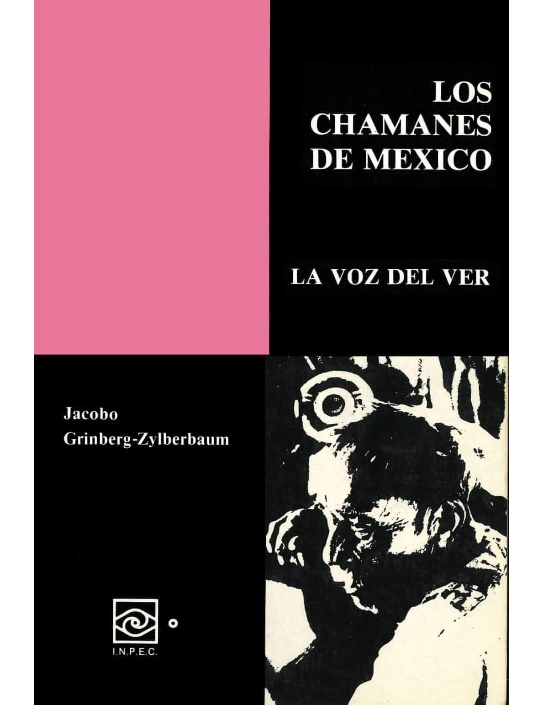

شامانات المكسيك
المجلد السادس
صوت الرؤية
La Voz del Ver
ياكوبو غرينبرغ زيلبرباوم
الترجمة العربية الكاملة
الفصول الستة والملحقان
لا يظهر ترقيم الطبعة في النسخة المرفقة؛ لذلك تشير أرقام التتبع إلى صفحات ملف المصدر البالغ عددها 119 صفحة. خُصصت بداية صفحة عربية لكل صفحة مصدر، والعناوين أعلى الصفحات للتتبع. التوضيحات التحريرية منفصلة عن كلام المؤلف.
الخط والأحجام والهوامش مطابقة لقالب الترجمات السابقة. أُرفق النص العربي القابل للتحرير داخل ملف PDF.
الغلاف
شامانات المكسيك
صوت الرؤية
ياكوبو غرينبرغ زيلبرباوم

صفحة العنوان
شامانات المكسيك
المجلد السادس
صوت الرؤية
ياكوبو غرينبرغ زيلبرباوم
كلية علم النفس
الجامعة الوطنية المستقلة في المكسيك
والمعهد الوطني لدراسة الوعي
مُوّلت هذه الدراسة جزئيًا ببرنامج مشترك بين المجلس الوطني للعلوم والتكنولوجيا (CONACYT) والجامعة الوطنية المستقلة في المكسيك (UNAM)، كلية علم النفس. مشروع CONACYT رقم PCCSCNA-030756.
العنوان الداخلي
شامانات المكسيك
المجلد السادس
صوت الرؤية
بيانات النشر
عرض «صوت الرؤية» وترتيبه العام ملك للمؤلف. يُحظر استنساخ هذا العمل جزئيًا أو كليًا، بأي وسيلة أو طريقة، دون إذن كتابي من المؤلف.
أشرفت على إعداد الطبعة ماريا إستير سانشيس أريانو.
المعهد الوطني لدراسة الوعي، جمعية مدنية.
ياكوبو غرينبرغ زيلبرباوم.
الطبعة الثانية، 1990.
ISBN 968-6022-06-6
طُبع وصُنع في المكسيك.
القسم الأول
تطور الشامانات
الإهداء
إلى كارلوس كاستانيدا
إلى ميلاريبا
الفهرس
مقدمة.
القسم الأول: تطور الشامانات.
الفصل الأول: مستويات رجال المعرفة.
الفصل الثاني: تطور مستويات الوعي.
الفصل الثالث: الوظائف المعقدة للتوحيد المتسع.
الفصل الرابع: قوة الذهن الشاماني.
القسم الثاني: صوت الرؤية.
مقدمة.
الفصل الخامس: صوت الرؤية.
الفصل السادس: دراسات شامانية.
الملحق الأول: الأسس الطاقية للوظائف الإدراكية.
الملحق الثاني: قوانين الفيزياء والوعي.
استهلال: صوت الرؤية
«وتابع قائلًا إنّ الرائين، حين يرون، يجدون شيئًا يفسّر لهم كلّ شيء بينما يجري الاصطفاف الجديد. إنه صوت يتحدث في آذانهم. وإذا لم يكن هذا الصوت حاضرًا، فإن الرائي لا يرى.
وبعد توقف قصير، مضى يشرح أنه سيكون من الخطأ بالقدر نفسه القول إن الرؤية هي السماع، لكن الرائين اختاروا استخدام عبارة صوت الرؤية معيارًا لاصطفاف غير مألوف. وقال إن ذلك الصوت شيء بالغ الغموض ولا يمكن تفسيره.
— استنتاجي الشخصي أن صوت الرؤية يخص الإنسان وحده، قال. ولعله يحدث لأن الكلام شيء لا يفعله أحد غير الإنسان. اعتقد الراؤون القدامى أنه صوت كيان ذي قوة لا تصدق، مرتبط ارتباطًا حميمًا بالبشرية، حامٍ للإنسان. واكتشف الراؤون الجدد أن هذا الكيان، الذي سموه قالب الإنسان، ليس له صوت. وصوت الرؤية بالنسبة إلى الرائين الجدد شيء يستعصي على الفهم؛ يقولون إنه وهج الوعي بالكينونة، يلامس انبثاقات النسر كما يلامس عازف القيثارة أوتارها».
كارلوس كاستانيدا، «النار الداخلية»، إيديفيسيون، المكسيك، 1984، ص 76.
المقدمة
المقدمة
يحلل هذا الكتاب واحدًا من أكثر الاكتشافات إثارة للاهتمام التي توصل إليها البحث في شامانات المكسيك. بدأت هذه الدراسة للشامانية المكسيكية نحو عام 1976، واتخذت طابعًا رسميًا بعد عشر سنوات، حين وقّع المجلس الوطني للعلوم والتكنولوجيا والجامعة الوطنية المستقلة في المكسيك اتفاق تعاون لإنقاذ المعرفة الأصلية لدى الشامانات المكسيكيين. وهكذا وُلد ما يُعرف اليوم باسم «علم النفس المكسيكي الأصلي»، وهو البحث الذي يشكل هذا العمل إحدى ثماره.
قدمت المجلدات الأولى من «شامانات المكسيك»، في فصول مستقلة، دراسات عن العمل ورؤية العالم والحياة اليومية لبعض أكثر علماء النفس الأصليين خبرة في المكسيك.
أما هذا المجلد فيقدم تحليلًا نظريًا لما يمثل، في نظر المؤلف، أعمق إنجاز للشامانية المكسيكية: الاتصال بالكينونة وثمرته: «صوت الرؤية».
تُعرّف الموسوعة البريطانية الشامان بأنه الإنسان الذي يعرف. وتذهب «شامانات المكسيك» إلى أن حكمة الشامان تنبع من قدرته على الاستقرار في اتصال بالكينونة والحفاظ عليه. وكان هذا الاتصال بالكينونة من أكثر الحالات المنشودة التي سعى «رجال المعرفة» في ثقافات مختلفة إلى بلوغها.
وخلال هذا الاتصال يتجلى ما يبدو أنه يسند الوعي الإنساني انطلاقًا من قاعدة مشتركة وأساسية.
ولا تقع «قاعدة الإسناد» هذه في الحقيقة في موضع محدد وملموس، بل تتموضع بالأحرى في أصل النفس، في «المكان» الذي ينبثق منه أي فكر؛ في ذلك الحيّز الصامت، في صميم الأنا الخالصة ذاتها.
ولا تقتصر مأثرة الشامان الحقيقي على قدرته على وضع تجربته في نطاق الكينونة وإبقائها هناك؛ بل تشمل تنشيط وعيه بحالته الخاصة من خلالها، وفهم تجربته ووعيه، وكذلك تجربة الآخرين ووعيهم، انطلاقًا من صمته؛ أي تنشيط «صوت الرؤية». وهذا الأخير يتضمن القدرة على فهم التجربة وما يقابلها.
المقدمة — تتمة
عندما يشير صوت الرؤية إلى تجربة الكينونة، يظهر «صوت الكينونة». و«يتحدّث» صوت الكينونة عمّا يعرفه، مستندًا إلى خبرات أساسية يشترك فيها الناس، حتى يشعر مَن يسمعه بأن الكلام عنه هو، وكأنه يصدر من أعماق ذاته.
ينقسم هذا الكتاب إلى ستة فصول مكرسة لإيضاح صوت الرؤية، ومستويات الشامانات، وتقابلها مع محور افتراضي للتوحيد، والأسس النظرية التي تقوم عليها التجارب والقدرات الشامانية.
وتُعرض هذه الأسس النظرية في أنحاء المجلد كله، مرتبطة بالنظرية السينترجية.
أمكن إنجاز هذا الكتاب بفضل الاتفاق PCCSCNA-030756 المبرم بين كلية علم النفس في الجامعة الوطنية المستقلة في المكسيك والمجلس الوطني للعلوم والتكنولوجيا.
ياكوبو غرينبرغ زيلبرباوم
يوليو 1987
الفصل الأول: مستويات رجال المعرفة
مستويات رجال المعرفة
كان وضع أي تصنيف للمعرفة هدفًا مرغوبًا لدى بعض المفكرين، وضرورة غير محببة، وإن كانت لا مفر منها، لدى آخرين، ومنهم مؤلف هذه السطور.
إنها ضرورة لا مفر منها، لأن ما يمكن أن يكون نظامًا ووضوحًا سيبقى في غيابها عديم الشكل وغامضًا. وهي غير محببة لأن الأكثر رهافة يستعصي على التصنيف، ولأن ما لا يستعصي عليه لا يوجد تصنيف منصف وشامل له تمامًا.
والواقع أن التصنيف يفترض وجود فئات جامدة للواقع، مع أن هذه الفئات لا توجد إلا اعتباطًا في تحويلاتنا العقلانية والمفاهيمية.
وفي حالة الشامانية، ينبغي لما سبق أن يقي القارئ من اعتبار التصنيف الذي سأقترحه جامدًا ومطلقًا.
وبعد هذا التنبيه، أجرؤ، استنادًا إلى دراساتنا، على افتراض وجود خمسة مستويات شامانية عامة على الأقل، يمكن تصنيفها كما يلي:
| المستوى | التسمية |
|---|---|
| الأول | الشامان ـ الناهوال |
| الثاني | الشامان |
| الثالث | عالم النفس الأصلي |
| الرابع | المعالج الشعبي أو الطبيب التقليدي |
| الخامس | المتدرب |
سأخصص الفصول التالية لتحليل هذه الفئات العامة، وأذكر خصائصها المميزة الأساسية والمحور النوعي الذي تنتظم عليه.
أولًا: الشامان ـ الناهوال
المستوى الأول هو مستوى الناهوال. والشامان ـ الناهوال رجل المعرفة بامتياز؛ إنه معلم المعلمين، ومؤسس سلالات جديدة، أو خليفة سلالات الماضي ومرشدها. ويمتلك الشامان ـ الناهوال القوة والمعرفة اللتين تتيحان له ممارسة السيطرة على المادة أو الذهن أو كليهما. وهو يمتلك سيطرة تامة على وعيه
الشامان ـ الناهوال والشامان
وذهنه، ويعرف تقنيات تتيح تدريب هذه السيطرة وتطويرها. ومن الأمثلة المعروفة للشامانات ـ الناهوال المكسيكيين:
1. دونيا باتشيتا من مدينة مكسيكو.
2. دون بانشيتو من يوكاتان.
3. دون خوان ماتوس من سونورا.
4. دونيا ماريا سابينا من أواخاكا.
توضيح تحريري: تحتوي النسخة المرفقة هنا على نسخة مكررة مشوهة من فقرة «الشامان» وقائمة أسمائه، ثم تعيد النص بصورة سليمة في آخر هذه الصفحة وأول التالية. تُترجم النسخة السليمة مرة واحدة أدناه، دون تكرار تشوهات التحويل النصي.
ثانيًا: الشامان
يشغل الشامان المستوى التالي من التطور. وهو معلم، شأنه شأن الشامان ـ الناهوال، لكنه لم يبلغ بعد كمال الأول. ويشغل مكانة بارزة داخل سلالة، وقد بلغ من القوة ما يكفي للسيطرة على ذهنه الخاص، وكذلك تعديل بعض شروط الزمكان.
عالم النفس الأصلي والمعالج الشعبي
وهو قادر على علاج الأمراض، ويمتلك عمومًا معرفة واسعة بالطب التقليدي والأعشاب. وقد خضع لتدريب صارم، وتلقى طقس تأهيل واحدًا أو أكثر، يتيح له الاتصال بمستويات مختلفة من الواقع.
ومن الأمثلة المعروفة للشامانات الذين درسناهم:
1. دون لوسيو من موريلوس.
2. دون أنطونيو من تشياباس.
3. دون راش بيتش من يوكاتان.
4. دونيا خوسيفينا من أواخاكا.
5. دونيا ماريا من يوكاتان.
6. دون خوان تشاغالا من سانتياغو توكستلا.
7. دون ماوريسيو من سييرا تاراهومارا.
ثالثًا: عالم النفس الأصلي
يشكل عالم النفس الأصلي الفئة أو المستوى التالي. وهو يكرس نفسه للعمل العلاجي، النفسي والطبي معًا. وهو خبير في أساليب العلاج المختلفة، ولا يلزم أن يكون معلّمًا أو أن يتولّى الإرشاد في إحدى سلاسل التلمذة.
ويلجأ إليه المجتمع طلبًا لتخفيف آلامه الجسدية والانفعالية والنفسية. ويمتلك قدرًا معتبرًا من القوة، لكنه يعجز عن تعديل المادة أو الزمكان. كما يستطيع الوصول، وإن على نحو محدود، إلى صور أخرى من الواقع.
ومن أمثلة علماء النفس الأصليين الذين درسناهم:
1. دونيا براغيديس من موريلوس.
2. دونيا ليتشا من بويبلا.
3. دون فلورينسيو من موريلوس.
4. دونيا سارا من كينتانا رو.
5. دون رودولفو من فيراكروز.
6. دون لورينسو من يوكاتان.
7. دون أنطونيو من كينتانا رو.
8. دون أتاناسيو من تشيهواهوا.
رابعًا: المعالج الشعبي
المعالج الشعبي هو من يمارس عملًا علاجيًا أصليًا، ويفوق عدد أمثاله في المكسيك بكثير سائر الفئات التي تناولناها في تصنيفنا. ففي كل قرية
المعالج الشعبي والمتدرب
ومدينة في الجمهورية المكسيكية تقريبًا يوجد معالج شعبي واحد على الأقل.
والمعالج الشعبي متخصص عمومًا في تقنية واحدة. وعندما يمارس عدة تقنيات، تكون إحداها اختصاصه، وتخضع الأخرى للأولى. ولهذا فهو متخصص بطبيعته. يكرس نفسه للعلاج، ويعرف مرضاه أنهم لا يستطيعون اللجوء إليه إلا إذا كانت علتهم ضمن الاختصاص الذي يتقنه. ولديه بعض المعرفة بعلم النفس الأصلي، ويستخدمها أحيانًا، لكنه يمارس اختصاصه مباشرة قبل كل شيء. ومن هذه الاختصاصات تجبير العظام وجس النبض والعلاج بالأعشاب وما إلى ذلك.
لم نتفرغ لدراسة المعالجين الشعبيين المكسيكيين دراسة منهجية، ولذلك نحيل القارئ المهتم إلى منشورات المعهد الوطني لشؤون السكان الأصليين، الذي درسهم بالفعل.
خامسًا: المتدرب
يوجد عدد كبير لكنه غير محدد من تلاميذ الفئات الأخرى أو متدربيها. ويبدأ المتدرب عادة تلميذًا لمعالج شعبي. وإذا سمحت موهبته، وكان مثابرًا وصبورًا بما يكفي، أمكنه أن يصبح معالجًا شعبيًا ثم عالم نفس أصليًا. أما لكي يصبح شامانًا، فلا بد أن يُختار منذ الولادة أو في مرحلة لاحقة. ويحدث هذا الاختيار عمومًا من خلال واقعة مدهشة، كما في حالة دون لوسيو الذي أصبح شامانًا بعد إصابته بصاعقة وبقائه في غيبوبة ثلاث سنوات.
ومن الواضح أن هناك أشخاصًا يشغلون مواقع وسطية بين الفئات التي تناولناها. مثل دونيا ليتشا من بويبلا؛ فقد تلقت تأهيلًا شامانيًا رُوي في أحد مجلدات هذه السلسلة، ومع ذلك فهي عالمة نفس أصلية. وهي في الحقيقة في طريقها إلى أن تصبح شامانة، بشرط أن تصل تمامًا إلى القوة التي مُنحت لها أثناء تأهيلها. وعدم انتقالها إلى فئة التطور التالية يدل على أن التأهيل ليس كافيًا، وإن كان لا غنى عنه.
إن التطور عبر المحور الشاماني عمل شاق ومعقد، يتطلب تفانيًا كليًا والتزامًا مطلقًا
التطور واستمرار السلالات
بالقوى التي توجه التطور الشاماني.
وللأسف، كلما استحوذت التقنية الحديثة على عادات سكان المكسيك وتقاليدهم وحلت محلها، تضرّر توارث المعرفة الشامانية وتطوّرها. وفي بعض الأحيان يكون الشامان الحالي آخر ممثل لسلالة كاملة ستموت معه، لأنه لا يوجد تلميذ قادر بما يكفي على أن يُختار للتأهيل ويصبح خليفة.
ومن الحالات المؤلمة في هذا الصدد دون لوسيو ودون بانشيتو؛ إذ ليس لديهما تلاميذ يخلفونهما، مع أن لديهما عددًا معتبرًا من المتدربين والأتباع.
الفصل الثاني
تطور مستويات الوعي
تطور مستويات الوعي
في الفصل السابق قدمت تصنيفًا للمستويات الموافقة لرجال المعرفة، وحللت بعض المعايير التي استندت إليها في وضعه. وفي هذا الفصل سأوسع التحليل ليشمل التطور العام لمستويات الوعي، معتبرًا رجال المعرفة في المكسيك حالة خاصة منه.
يحدث تطور الوعي بالتزامن مع اتساع قدرة المراقب على توحيد المعلومات.
وفي هذا الاتساع، يتحول ما يعيشه الإنسان بوصفه الأنا إلى محتوى قابل للملاحظة في مرحلة جديدة، وتظهر أنا جديدة تعود، في المستوى التالي، فتتحول إلى محتوى قابل للملاحظة. وتوسع هذه التحولات قدرة المراقب على التوحيد، إلى أن تصبح الأنا التالية التي تظهر، في مستويات متقدمة وبعد تغيرات كثيرة، غير قابلة للتمييز عن المراقب نفسه.
وبعبارة أخرى، وباستخدام أمثلة توضح ما سبق: قد يتماهى الإنسان في مرحلة أولى من التطور مع جسده معتبرًا إياه أناه الحقيقية، إلى أن يتمكن من ملاحظة جسده بوصفه كلًا موحدًا. عندئذ تتغيّر علاقته بجسده؛ فيشعر أن أناه أقرب إلى مَن يشهد الجسد منها إلى الجسد نفسه. وما كان يشعر من قبل أنه «أنا» يصبح شيئًا يستطيع أن يلاحظه من مستوى يتجاوز ذلك الشعور. وعندما لا يعود الجسد متماهيًا مع الأنا، قد يشغل الذهن مكانه، فيحدث الآن تماهٍ للأنا مع الذهن. وتحدث مرحلة تطور تالية عندما يتحول الذهن إلى محتوى قابل للملاحظة.
في لحظة ما يتوقف تماهي الأنا مع الذهن، ويظهر تماهٍ جديد للأنا قد يكون المشاعر أو الانفعالات. ويتوقف التماهي مع الانفعالات عندما تصبح قابلة للملاحظة. وعندها تتحول الأنا الانفعالية إلى محتوى قابل للملاحظة، وتظهر أنا جديدة ليست الجسد ولا الذهن ولا الانفعالات، بل شيء يضمها ويوحدها في مستوى جديد من الملاحظة. ويقابل كل مستوى من الملاحظة تغيرًا في الوعي. فالأنا التي كانت تُعاش أولًا متماهية مع الجسد، ثم مقترنة بالذهن، ثم مرتبطة بالانفعالات، تضم الآن في
المراقب ومحور التوحيد
ذاتها الجسد والذهن والانفعالات، فتوحدها في فعل ملاحظة أكثر تجاوزًا.
المراقب واحد، لكنه متعذر البلوغ، لأن كل تغير في مستوى الوعي يحوّل ويمكن ملاحظته. والقدرة على تحويل المحتوى، حيث يكون الحاوي دائمًا هو المراقب الموجود في خطوة التطور التالية، تدل على أن المراقب هو مرشد العملية.
وبعبارة أخرى، فإن أي إنسان يشعر بامتلاكه أنا، يعيشها جوهرًا يتعذر بلوغه، إلى أن يتمكن من ملاحظتها. وعندما يلاحظها يتجاوزها، وينتقل الإحساس بالأنا من جديد إلى جوهر يتعذر بلوغه، ليس جوهرًا ولا متعذر البلوغ، لكنه يظهر كذلك بسبب الجهل.
وفي هذا الطريق يغير الوعي مستواه، مرافقًا المراقب ومسترشدًا به. والمراقب لا يتغير؛ إنه موجود هناك دائمًا، متجليًا بوصفه الأنا التالية التي ينبغي بلوغها.
ومع التقدم على محور المراقب هذا، تنشط عملية تدفق طاقي ناشئة عن التزامن مع الاتجاه الصاعد لعملية التوحيد التطورية.
وهذه العملية الأخيرة هي مرشد التطور، وقد بدأت تتجلى عندما توحدت عدة جسيمات أولية في ذرة. واستمرت في التجلي عندما اتحدت عدة ذرات لتشكيل جزيء، ثم عندما نشأ بروتين من عدة جزيئات. وقفز اتجاه التوحيد قفزة هائلة عندما ظهرت الخلية الأولى، ثم الكائن المتعدد الخلايا الأول. وعندما يستقر الوعي على محور التوحيد الاتجاهي نفسه، يتلقى تدفق الطاقة التي توجه العملية. وتسمى التجربة التي تنشط لدى صاحب التجربة عند تلقي هذا التدفق بالسعادة وحالة النعمة.
والواقع أن نتيجة الاستمرار في تحويل الأنا إلى محتوى قابل للملاحظة هي الاستنارة والتحرر من أحداث العالم الملموس. وذلك لأن عدم التعلق بالتماهيات المقيدة يؤدي إلى اكتشاف الحقيقي، والحقيقي هو الأنا الخالصة التي لا تتماهى إلا مع نفسها.
وبالتزامن مع عملية اتساع المحتوى الموحد في فعل الملاحظة، ونتيجة للعملية نفسها، تنشط وظائف للإدراك والقوة تضع من
التوحيد وتعقد الوظائف
يختبرونها على محور التطور الذي تناوله الفصل السابق.
قُدمت في المجلد الخامس من هذه السلسلة أدلة تجريبية تبرهن على أنه:
«...كلما ازداد عدد العناصر الموحدة في وظيفة، ازداد تعقيد هذه الوظيفة».
وبنقل هذا الاستنتاج إلى الموضوع الذي نناقشه في هذا الفصل، يمكننا القول:
«...كلما أدخل المراقب في فعل الملاحظة عددًا أكبر من العناصر، نشطت وظائف متزايدة التعقيد».
ويحدث إدخال عدد أكبر من العناصر في فعل الملاحظة نتيجة تحول الأنا إلى محتوى قابل للملاحظة. وسأتعمق لاحقًا في تعليق معلم تشان هان شان (1545–1673) على «لينغ ين تشينغ» لبوذا، أو «سورانغاما سوترا»: «...الآن، فإن عضو وعيه السادس، أي وعيه السابع، يحدد الإدراك المميز للوعي الثامن الداخلي بوصفه الأنا...».*
سأتعامل مع هذا التعليق بوصفه دليلًا على أن تحويل الأنا من تماهٍ إلى محتوى قابل للملاحظة وإدراك مميز كان معروفًا كتقنية منذ قرون، ومعترفًا به إجراءً مناسبًا لبلوغ الاستنارة، وطريقة طبيعية للتطور، أيقظ بها وظائف جديدة في الكائنات الحية.
ويتضح انطباق ما سبق على تصنيف مستويات رجال المعرفة. فالشامان ـ الناهوال هو الكائن المستنير الذي لم يعد يتماهى مع أي شيء ملموس، ويملك قدرةً عظيمة على التأثير في المادة وفي وعي الآخرين. وتنتج قوته من تنشيط وظائف معقدة نتيجة اتساعه. وسنرى في الفصل التالي بعض هذه الوظائف وأسسها. ما يزال الشامان يقول «أنا» عمّا يستطيع الشامان ـ الناهوال أن يلاحظه ويختبره بوصفه تجربة ذات سمات مميّزة. ويقع الشامان دون الناهوال لأنه لا يزال يتماهى مع مراتب «أنوية» تجاوزها الناهوال.
ويحدث الشيء نفسه في العلاقة بين عالم النفس الأصلي والشامان. فبالنسبة إلى عالم النفس الأصلي، تكون حالة
محور التطور الشاماني
* ص 19، The Surangama Sutra، منشورات Bol، بومباي وكلكتا ودلهي ومدراس، 1978.
الشامان هي حالة أنا جوهرية يتعذر بلوغها، بينما تكون هذه الأنا الجوهرية، بالنسبة إلى الشامان، قد أصبحت محتوى قابلًا للملاحظة من أنا أخرى جوهرية متعذرة البلوغ، أصبحت بدورها محتوى قابلًا للملاحظة لدى الناهوال. ويحدث مثل ذلك في العلاقة بين المعالج الشعبي وعالم النفس الأصلي، وبين المتدرب والمعالج الشعبي.
إذًا، فإن محور التطور الشاماني محور توحيد. ومع التقدم على هذا المحور تظهر وظائف جديدة سيتناولها الفصل التالي.
الفصل الثالث
الوظائف المعقدة للتوحيد المتسع
الوظائف المعقدة والتزامنية
قبل البدء بهذا الفصل، أود توضيح أن وصف الوظائف الناشئة عن زيادة التوحيد بالتعقيد لا يعني أنها غير طبيعية أو منفصلة عن المجال البيولوجي. فكل إنسان يمتلكها بدرجة أو بأخرى. ولا يعني أيضًا أن تنشيط هذه الوظائف نتيجة تطبيق تقنية وحيدة ومحددة.
ومع هذين الاعتبارين، سأحلل الوظائف المعقدة التالية، مقدمًا عند الحاجة أمثلة واقعية على وجودها لدى علماء النفس الأصليين والشامانات والناهوالات:
1. التزامنية.
2. التواصل المباشر.
3. التنبؤ بالمستقبل.
4. انتقال الحالة.
5. الانتقال المكاني.
6. التجسيد المادي.
7. إزالة التجسد المادي.
8. الشفاء.
9. الاتصال بالحقل الفائق.
10. الرؤية خارج العينين.
11. الرؤية داخل الجسم.
1. التزامنية
تشير وظيفة التزامنية المعقدة إلى القدرة على معايشة أحداث تتقارب في الزمن ويربط بينها ما لا يُفسَّر بالسبب والنتيجة. وكل ما نسميه «مصادفات» يدخل ضمن حالات هذه الوظيفة.
تفسر النظرية السينترجية لخلق التجربة وظيفة التزامنية. وبحسب هذه النظرية، تنشأ التجربة الحسية نتيجة عدة عمليات تحويل للنشاط الدماغي. وأولى هذه العمليات خلق حقل عصبي، ينتج من مجموع التفاعلات الطاقية كلها التي تحدث في الدماغ الحي. ويحدث التحويل الثاني نتيجة تفاعل الحقل العصبي مع البنية الطاقية للفضاء، أو الحقل الكمومي. وينتج التفاعل بين الحقل العصبي والحقل الكمومي نمط تداخل فائق التعقيد في بنية الفضاء، داخل الكتلة الدماغية وخارجها على السواء.
الحقل الفائق والعامل الاتجاهي
يحدث التحويل الثالث عندما يقوم تفاعل بين جميع الحقول العصبية الموجودة وجميع أنماط تداخلها. وينتج هذا التحويل الثالث حقلًا فائقًا يحتوي في باطنه المعلومات القادمة من الكون كله ومن جميع الكائنات الحية التي تسكنه. والحقل الفائق هو «غذاء» الوعي.
يكون كل إنسان مغمورًا بالحقل الفائق، ومنه تحديدًا تأتي تجربته.
وبما أن التجربة الحسية تظهر مركزة، فلا بد من افتراض وجود آلية تركيز تحدد تحويل منطقة صغيرة فقط من الحقل الفائق إلى تجربة واعية. وتسمي النظرية السينترجية آلية التركيز هذه العامل الاتجاهي. ويمكن للعامل الاتجاهي أن يتخذ مواضع تركيز مختلفة، أو أن يبقى ثابتًا في موضع واحد منها. وعندما يحدث الأخير، يعيش الشخص الواقع بوصفه ثابتًا ومحددًا بصرامة. ويعزز التعليم الذي نتلقاه تثبيت العامل الاتجاهي في موضع الحياة اليومية، فيجعلنا نعتقد أنها الواقع الوحيد الموجود والممكن معايشته. أما رجل المعرفة فيتعلم تغيير موضع العامل الاتجاهي بإرادته، فتنكشف لوعيه صورٌ مختلفة من الواقع.
ومع التقدم في مستوى الوعي تزداد المواضع الممكنة للعامل الاتجاهي والتجارب المرتبطة به، وتتسع معها قدرة رجل المعرفة على اختبار صور مختلفة من الواقع.
وتقرب هذه الزيادة الوعي الفردي من الوحدة. ومن الفروق بين المعالج الشعبي وعالم النفس الأصلي، وبين هذا الأخير والشامان، زيادة عدد المواضع التي اختُبرت للعامل الاتجاهي. وتبلغ العملية ذروتها لدى الشامان ـ الناهوال، الذي يبدأ الوصول إلى منشأ حركة العامل الاتجاهي، لا إلى الواقع الناتج عن تركيزه فحسب. وتنتج هذه العملية مآثر قوة سنحللها لاحقًا. ويؤدي اقتراب الوعي من الوحدة مباشرة إلى ظهور أحداث التزامنية ومعايشتها، لأنها ليست إلا تجليات لوجود الحقل الفائق.
ومن المقاييس الممتازة لتقدم رجل المعرفة في طريقه إلى الوحدة كمية الأحداث
التواصل المباشر
التزامنية التي تصادفه ونوعيتها، والوضوح الذي يستطيع به إدراكها. وبما أن الحقل الفائق أساس التجربة الحسية، فإننا جميعًا نعيش أحداثًا تزامنية باستمرار. ويتوقف انتباهنا إليها أو مرورها دون ملاحظة على نوعية وعينا.
2. التواصل المباشر
التواصل المباشر هو القدرة على كشف محتويات نفسية غير مُظهَرة، وإمكان نقلها. فالشخص الذي يمتلك قدرة عالية على التواصل المباشر يستطيع أن يعرف بعمق الحالة النفسية ومحتويات أذهان الأشخاص الذين يتفاعل معهم، دون حاجة إلى أن يبلغوه بها لفظيًا أو سلوكيًا.
وكالتزامنية، فإن التواصل المباشر وظيفة تنشأ من الحقل الفائق وترتبط بفك ترميزه. ويؤدي إتقان تركيز العامل الاتجاهي دورًا أساسيًا فيها، لأن دقة فك ترميز الرسائل المكتشفة تتوقف عليه. وأحيانًا يستعين الشامانات بأدوات لتسهيل تركيزهم، بقصد فك ترميز المعلومات القادمة من حقل عصبي محدد داخل الحقل الفائق بدقة أكبر. فدون راش بيتش، وهو شامان من المايا في يوكاتان، يستخدم النار أداةً. وعندما يريد معرفة المحتويات الذهنية لمريض، يشعل نارًا ويراقبها. ويعرف هذه المحتويات بحسب الخصائص الشكلية لألسنة اللهب.
وتقيم دونيا سارا من كانكون تواصلًا مباشرًا مع معلمها دون بانشيتو من يوكاتان، بمراقبة لهب الشموع.
ومن الواضح أن الاستقلال عن استخدام الأدوات علامة على تقدم أكبر، وتحرر يميز مستويات الوعي الأكثر تقدمًا.
ويبدو أن دون بانشيتو لا يحتاج إلى أدوات وسيطة لإقامة تواصل مباشر.
اكتشفنا في المختبر أن التواصل المباشر يرتبط بتشابه تذبذبات الارتباط بين نصفي الكرة الدماغية لدى الأشخاص المعنيين. وبعبارة أخرى، كلما ازداد التشابه في تغيرات
التأمل ذاتي الإحالة
الارتباط بين نصفي الدماغ لدى الأدمغة المتواصلة، كان التواصل أقوى أو أدق وأكثر مباشرة. ولأن مستويات الارتباط بين نصفي الدماغ مظهر من مظاهر التوحيد الدماغي، فإن التواصل المباشر يرتبط أولًا بوظيفة التوحيد.
وهكذا يمكن افتراض أنه كلما تقدم التوحيد ازدادت القدرة على التواصل المباشر. ومن منظور خلق التجربة انطلاقًا من الحقل الفائق، يكاد الاستنتاج السابق يكون تحصيل حاصل. ففي الحقل الفائق نفسه يكون التواصل لا نهائيًا وكليًا، لأنه يمثل توحيد جميع المحتويات المقابلة للحقول العصبية. ومع التقدم في التوحيد يقترب الوعي الفردي من الحقل الفائق. وفي هذا الأخير يوجد وعي الوحدة، ومن ثم التواصل المباشر التام مع كل ما هو حي. ومن ينجح في التوحد مع الحقل الفائق يصبح هو نفسه وعيَ كلّ ما هو حيّ. وتتم عملية التوحيد هذه بـ«فتح» تركيز العامل الاتجاهي على جميع محتويات الوعي الممكنة.
شرحت في كتاب «التأمل ذاتي الإحالة» (غرينبرغ زيلبرباوم، 1987) أن أفضل تقنية لبلوغ وعي الوحدة هي التأمل ذاتي الإحالة؛ وهو ملاحظة كل مكون من مكونات التجربة، أولًا بالتتابع ثم بالتزامن. والتأمل المشاهد ذاتي الإحالة هو الملاحظة المتزنة لكل ما ينتمي إلى التجربة في اللحظة الحاضرة.
توجد في الدماغ آليات ودوائر تركز المعلومات في خوارزميات* معقدة. ويمكن تصور التأمل المشاهد ذاتي الإحالة بوصفه الملاحظة المتزنة للخوارزمية التي تحتوي مجمل معلومات دماغ في لحظة معينة.
يتحدث «كتاب الموتى التبتي» عن إقليم السامبوغاكايا، أو «إقليم المحشو بكثافة»، ويقول إن بذرة الأشياء كلها أو منبتها يوجد هناك، مضغوطًا ومحكم الحزم. ويذكر النص الاستنارة نتيجة دخول السامبوغاكايا، فيما قد يكون أول ذكر معروف في التاريخ لتقنية الإحالة إلى الذات بواسطة الخوارزمة.
ومن ناحية أخرى، من منظور الفيزياء المعاصرة، فإن
الجاذب الغريب وبلوغ الوحدة
التأمل المشاهد ذاتي الإحالة لا يتطلب عمليات خوارزمة. فمن المعروف أنه عندما يكون حقل طاقي مُحالًا إلى ذاته، تحدث تشوهات فوضوية في الحقل لا يمكن تمثيلها إلا بواسطة جاذب غريب.**
والجاذب الغريب صيغة رياضية قادرة على دمج وظيفة معقدة معينة. وهو يعادل منصة الملاحظة التي يُلاحظ منها محتوى.
* أقصد بالخوارزمية هنا صيغةً أو بنيةً أو نموذجًا تختزن فيه كمية كبيرة من المعلومات على نحوٍ مكثّف ومرمَّز.
** أدين بهذه الفكرة للفيزيائي غييرمو فرنانديز.
إذا تذكرنا تحول الأنا إلى إدراك مميز أثناء تغيرات مستويات الوعي التي تناولها الفصل الثاني، أمكن فهم مفهوم الجاذب الغريب في ضوء الوعي. وعلى هذا التفسير، قد يكون الجاذب الغريب هو ما نعيشه بوصفه «الأنا» في مستوى الوعي التالي. ويمكن تفسير الإحالة إلى الذات بوصفها انعكاس الحقل العصبي على نفسه، مما ينشئ جاذبًا غريبًا جديدًا يصبح مراقبًا للكلية التي ينشأ منها.
وأيًا كانت آلية التأمل المشاهد ذاتي الإحالة، سواء بالخوارزمة أو بخلق جواذب غريبة، فإن المؤكد أن هذه الطريقة هي الأفضل لتحقيق الوحدة.
وفي سلالة الشامان ـ الناهوال دون خوان ماتوس، يجري الحديث عن طريقة مشابهة لبلوغ التحرر (كاستانيدا، 1984). وبحسب دون خوان، يتحرر الإنسان تمامًا عندما يستطيع أن يدرك في آن واحد جميع المواضع الممكنة لنقطة تجميعه.* وبعبارة أخرى، عندما ينشّط الشامان في وقت واحد كل صور الواقع الممكنة الناتجة من اصطفاف الانبثاقات بحسب موضع نقطة تجميعه، فإنه يبلغ الوحدة، ويُفترض أنه والحقل الفائق يكفان عن الانفصال. وفي تلك اللحظة لا بد أن يتعاظم التواصل مع سائر الكائنات الحية حتى يبلغ درجته المثلى.
* تؤدي نقطة التجميع وظيفة شبيهة بوظيفة العامل الاتجاهي، لكنها ليست مطابقة لها؛ انظر لاحقًا.
التنبؤ بالمستقبل
لا بد أن يؤدي التركيز المتزامن للعامل الاتجاهي في جميع مواضعه إلى الشيء نفسه.
ويُلاحظ أثناء التطور الشاماني تزايد واضح في وظيفة التواصل المباشر المعقدة، ومن ثم تزايد في التوحيد.
3. التنبؤ بالمستقبل
من السبل الأخرى للدخول في توحيد الحقل الفائق اتساع مدة الحاضر.
تشير مدة الحاضر إلى الحد الأدنى اللازم والكافي من الزمن لخلق تجربة إدراكية. ومن أمثلتها الخمسون ملي ثانية اللازمة لخلق صورة بصرية. وكل ما يحدث خلال مدة الحاضر البصري هذه يُختبر بوصفه لا زمنيًا ولحظيًا. وسنناقش هذا المفهوم بتفصيل أكبر لاحقًا.
يمكن أن تتسع مدة الحاضر، مما يتيح للصورة الإدراكية الواحدة أن تتضمن معلومات أكثر. فإذا كان ما يعيشه كائن ما بوصفه حاضرًا يمتد زمنًا طويلًا جدًا، فقد يدرك في ذلك الحاضر ماضي كائن آخر وحاضره ومستقبله، إذا كانت مدة حاضر الكائن الآخر أقصر.
لنتخيل تفاعل كائنين حيين، يعيش كل منهما بمدة مختلفة للحاضر البصري؛ نملة وإنسانًا مثلًا. يُفترض أن النملة تحتاج إلى مقدار أدنى من الزمن لخلق تجربة، مقارنة بالزمن الذي يحتاج إليه الإنسان؛ فالزمن يمر للنملة بسرعة مختلفة عنه للإنسان. وما يمثل دقيقة للإنسان ربما يمثل يومًا للنملة. وما يمثل ثانية للإنسان ربما يمثل عدة دقائق للنملة. وتعيش النملة عددًا أكبر من التجارب في وحدة الزمن مقارنة بالإنسان، لأن مدة حاضرها أقصر بكثير من مدة حاضر الإنسان.
وعلى هذا الافتراض، قد يدرك الإنسان في لحظة من حاضره مستقبلًا لا يسع النملة أن تتخيله.
وهذه القدرة، موسعةً برتب مقدار كثيرة، هي ما يسمح لشامانات ـ ناهوال مثل دون بانشيتو بأن يتنبؤوا
الأبعاد والسببية المعكوسة
بمستقبل مرضاهم.
ومن طرق تفسير وظيفة التنبؤ المعقدة القول إن المتنبئ يستقر في بُعد مختلف وأكثر تجاوزًا من الواقع. فقد تحدث أوسبنسكي (1970) مثلًا عن وجود أكوان ذات أبعاد مختلفة، متضمنة بعضها في بعض. ويذكر أيضًا وجود كائنات تنتمي إلى كل واحد من هذه الأكوان البُعدية. فكائن ثنائي الأبعاد يعيش في سطح مستوٍ سيرى أصابع يد إنسان مرتكزة على ذلك السطح خمس دوائر مستقلة. ولن يستطيع إدراك هذه الدوائر الخمس بوصفها أجزاء من جسم واحد موحد إلا كائن ثلاثي الأبعاد. أما الكائن الرباعي الأبعاد فسيرى ماضي كائن ثلاثي الأبعاد وحاضره ومستقبله موحدةً في جسم يستحيل تصوره على الكائن الثلاثي الأبعاد.
نحن نرى مقاطع عمودية للكون الرباعي الأبعاد. ولأن كل مقطع يأتي بعد آخر ويعقبه آخر، نظن أن الزمن موجود. ولو أمكننا بدلًا من هذه المقاطع رؤية الجسم الرباعي الأبعاد، لاستطعنا أن نرى مستقبل الكون الثلاثي الأبعاد وماضيه جسمًا موحدًا في الكون الرباعي الأبعاد. ومن تقنيات النفاذ إلى الكون الرباعي الأبعاد توسيع مدة الحاضر.
والنفاذ إلى كون رباعي الأبعاد واتساع مدة الحاضر يعادلان التوحد مع الحقل الفائق. ولذلك يكون هذا التوحد أساس تنشيط وظيفة التنبؤ بالمستقبل المعقدة.
وقد افترضت الفيزياء المعاصرة آلية مختلفة عما ذكرته للتو أساسًا للسلوك العرافي.
وبحسب الفيزياء، توجد جسيمات أولية تسمى التاكيونات قادرة على السفر بسرعات فوق ضوئية، أي أكبر من سرعة الضوء.
ويجب أن يكون أثر السفر بهذه السرعات انقلابًا في الزمن. وبحسب جاك سارفاتي (1985)، يقوم هذا الانقلاب في أساس وجود سببية معكوسة، أي قادمة من المستقبل.
وبعبارة أخرى، لا يتحدد سلوكنا وظروفنا بأحداث الماضي وحدها، بل يتحددان أيضًا
مدارات الوعي
من المستقبل. ويمكننا التفكير في أن الكائن الذي سنصبحه مستقبلًا موجود بالفعل، وهو الذي يحدد حاضرنا. وليس مصيرنا إلا أن نصبح بالكامل ذلك الكائن المستقبلي الموجود مسبقًا. وتقول النظرية السينترجية إن خصائص الحقل العصبي تحدد مستوى تنظيم الحقل الكمومي الذي يمكن إقامة تفاعل متسق معه. فهناك نطاقات مسموحة للتفاعل، يُخلق فيها واقع متوافق، وفضاءات ممنوعة يخلق فيها تفاعل الحقل العصبي مع الحقل الكمومي نمط تداخل فوضويًا.
وهذه النطاقات مدارات حقيقية للوعي موجودة مسبقًا ويمكننا التفاعل معها. ويجلب هذا التفاعل إلى مجال الوعي المعلومات التي يحتويها المدار المعني. وبما أن هذه المدارات توجد بذاتها، وأن التطور يعني التقدم عبر المدارات، فهذا يعادل القول إن كينونتنا المستقبلية موجودة الآن في الحاضر وتحدد طريقنا.
ويمتلك الشامان، وخصوصًا الشامان ـ الناهوال، إمكانية الوصول إلى مدارات عالية التطور جدًا، أي عالية السينترجية؛ ولذلك يستطيع التنبؤ بالمستقبل، لأنه متصل بالمنطقة التي يتحدد منها هذا المستقبل.
وتسمح قدرة رجل المعرفة على تغيير موضع عامله الاتجاهي بإرادته تحديدًا بوضع تجربته في أي من المدارات، مما يؤدي إلى تنشيط وظيفة التنبؤ بالمستقبل المعقدة.
والمدار العالي السينترجية نطاق من الفضاء ذو تماسك ومحتوى معلوماتي أكبر. ويستطيع حقل عصبي عالي التردد ومرتفع التماسك أن يقيم تفاعلًا متوافقًا مع ذلك النطاق. ولأن تماسك الحقل العصبي يتوقف، ضمن أمور أخرى، على الارتباط بين نصفي الدماغ، فإن هذا الأخير يرتبط بوظيفة التنبؤ بالمستقبل المعقدة، كما يرتبط بوظيفة التواصل المباشر المعقدة.
وبعبارة أخرى، فإن الوظائف المعقدة الثلاث التي رأيناها حتى الآن، وهي: 1) التزامنية، 2) التواصل المباشر، 3) التنبؤ بالمستقبل، ترتبط بعمليات توحيد النشاط الدماغي والوعي.
وتوجد أمثلة كثيرة جدًا على السلوك التنبؤي للشامانات المكسيكيين، وخصوصًا الشامانات ـ الناهوال.
التنبؤ وانتقال الحالة
فدونيا باتشيتا مثلًا كانت تقول إنها تستطيع التنبؤ بتاريخ وفاة كل واحد منّا نحن الذين كنّا نعمل معها.
ودون لوسيو قادر على التنبؤ بمن سيأتي لزيارته.
ويتنبأ دون بانشيتو بمستقبل من يطلبون منه ذلك. ولتنشيط هذه الوظيفة يستخدم إجراءً من التأمل المشاهد. يراقب النجوم ليلًا ثم ينام.
ويجري التنبؤ بحسب محتوى أحلامه.
وبما أن أنماط الحقل الفائق معلَّمة في أي من مكوناته، فإن سلوك دون بانشيتو في تأمل النجوم يبدو كأنه يتضمن فك ترميز أنماط الحقل الفائق، ومن خلالها تطوراتها المحتملة.
ما الذي يدركه دون بانشيتو عندما يتأمل السماء المرصعة بالنجوم؟ لا نعرف، لكن المعلومات التي يحصل عليها تفيده بطريقة ما في التنبؤ بالمستقبل، مما يعني أن هذه المعلومات مسجلة في الحقل الفائق للحاضر.
4. انتقال الحالة
توجد ثلاثة أنواع مختلفة من انتقال الحالة:
أ) فردي أو شخصي.
ب) بين الأشخاص.
ج) جماعي.
أ) الانتقال الشخصي
يتكون من تحول الأنا من مستوى وعي إلى أنا مستوى الوعي التالي.
وقد رأينا أن هذا النوع من الانتقال يحدث أثناء التأمل المشاهد ذاتي الإحالة، ويمكن تفسيره بثلاث فرضيات مختلفة على الأقل:
1. التفاعل مع نطاقات أعلى سينترجية نتيجة زيادة السينترجية العصبية للحقل العصبي.
2. تنشيط جاذب غريب ناتج من تشوه
انتقال الحالة والأبعاد
الحقل نتيجة التداخل الذاتي.
3. التغير البُعدي.
في الحالات كلها، يصبح ما كان يشكل الحد المتعذر على الملاحظة في مستوى من الوعي مشهدًا يمكن ملاحظته من مستوى الوعي التالي، كما لو كان الأخير يمتلك قدرة أكبر على الاستيعاب والدمج. والواقع أن انتقال الحالة الفردي ليس إلا تحول الوعي من مستويات قليلة السينترجية والتماسك والاستيعاب إلى مستويات تزداد فيها هذه المتغيرات الثلاثة.
وقد ذكرت أن أكثر سبل فهم هذا النوع من الانتقال تداولًا هو التغير البُعدي؛ إذ يُفترض وجود أكوان ذات أبعاد مختلفة، يتضمن بعضها بعضًا، ويُعد الإنسان قادرًا على الانتقال من كون بُعدي إلى آخر.
ويمكن تصور انتقال الحالة بوصفه دخول الوعي إلى كون ذي أبعاد أكثر، آتيًا من كون ذي n−1 بُعدًا.
ويمكن تصور المحور الشاماني محورًا بُعديًا، يزيد فيه عدد الأبعاد في كل طبقة بواحدٍ على عددها في الطبقة السابقة (n+1). وهكذا قد يعيش المعالج الشعبي في كون ثلاثي الأبعاد، بينما يعيش عالم النفس الأصلي في كون رباعي الأبعاد، ويسكن الشامان كونًا خماسي الأبعاد. أما الشامان ـ الناهوال، الذي يعيش في كون سداسي الأبعاد، فيضم داخله جميع الآخرين بوصفهم محتويات تجربته الخاصة.
ومن خبرات انتقال الحالة الأقل شهرة من التغير البُعدي التفاعل مع النطاقات. فوفق النظرية السينترجية، يحدث التفاعل بين الحقل العصبي والحقل الكمومي على امتداد الكون كله، طولًا وعرضًا، بصورة متزامنة، لكن الوعي الفردي لا يركز إلا على إحدى مناطق توافق التفاعل. ومن بين جميع المناطق المسموحة، توجد منطقة هي الأكثر ملاءمة للحالة التطورية للشخص، وهي التي تنشط وتنفذ بمحتواها إلى الوعي الفردي. ولا بد من تقدم في السينترجية العصبية للحقل العصبي لكي يستطيع العامل الاتجاهي التركيز على منطقة تالية من التفاعل المتوافق والمسموح. ويُعد انتقال حالة
الخوارزمة وانتقال الحالة بين الأشخاص
شخصي قد حدث عندما يستطيع الوعي الفردي التركيز على نطاق n+1 بالنسبة إلى نطاق «موطنه» السابق.
وتتوافق فرضية تنشيط جاذب غريب بوصفها تفسيرًا لانتقال الحالة الفردي مع فرضية ازدياد القدرة الخوارزمية العصبية للدماغ. وتنظر هذه الفرضية إلى الخوارزمة بوصفها أساس القدرة على الاستيعاب. فالخوارزمية تستطيع احتواء مقدار هائل من المعلومات في رمز، يصبح بدوره عنصر معلومات لمستوى خوارزمي جديد وأقوى، يعود فيركز الخوارزميات السابقة في رمز مستوعب.
والمعلومة التي تُكثَّف في رمز في المستوى الأول أقرب إلى المحسوس من المعلومة التي تُرمَّز في المستوى التالي. وفي الأخير يكون المعطى خوارزمية، ولذلك يكون الناتج في الحقيقة خوارزمية لخوارزميات، تعود بدورها فتصبح معطى أوليًا لمستوى تالٍ من الخوارزمة، يمكن تسميته خوارزمة فوقية أو خوارزمة فائقة.
ويمكن افتراض أن للعملية الخوارزمية حدًا هو خوارزمية الحقل الفائق. وعندما ينجح نظام في تنشيط خوارزمية الحقل الفائق، يختفي كنظام فردي ويصبح الحقل الفائق نفسه. وستكون هذه، إن صحّ هذا الافتراض، الخطوة الأخيرة في انتقال الحالة على المستوى الفردي. وتدل قدرة الشامانات ـ الناهوال على التحكم بالمادة والفضاء بإرادتهم على أنهم قريبون جدًا من هذا الحد. وفي هذا المعنى يتحدث الشامان ـ الناهوال خوان ماتوس عن إجراء تطور «يضيء» فيه رجل المعرفة جميع نطاقاته في وقت واحد، منشطًا كل المواضع الممكنة لنقطة تجميعه، أي العامل الاتجاهي. وعندما يحدث ذلك يتلاشى الشامان ـ الناهوال من هذا العالم، صائرًا الحقل الفائق.
ب) انتقال الحالات بين الأشخاص
في المجلد الخامس من هذه السلسلة، المعنون «الدماغ والشامانات»، قدمت أدلة تجريبية على وجود انتقال للحالة بين الأشخاص. وتشير هذه الأدلة إلى أن أنماط الارتباط بين نصفي الكرة الدماغية في دماغ تنتقل مباشرة إلى أدمغة قريبة. وتبين النتائج التجريبية أن الانتقال بين الأشخاص ذو اتجاه يتفق مع ما تقرره معظم التقاليد الإنسانية والدينية والصوفية التي ازدهرت في تاريخ
انتقال الحالة من المعلم إلى التلميذ
الكوكب. وقد يكون هذا الاتجاه نحو تكاملٍ أقلّ أو نحو تكاملٍ أكبر.
في المختبر، «يجذب» الأشخاص الذين يمتلكون أعلى مستوى من التماسك إلى مستواهم الأشخاصَ ذوي الدرجة الأقل من التماسك بين نصفي الدماغ.
وبما أن هناك أدلة (غرينبرغ زيلبرباوم، خ.، 1985) تشير إلى أن مستويات التماسك المرتفعة ترتبط بتكامل الأنا، فإن النتائج التجريبية تدل على أن الأشخاص الأكثر تكاملًا في الأنا قادرون على نقل حالتهم إلى أشخاص آخرين.
وفي الهند يُبجَّل السادهو الذين بلغوا التحرر، ومن أسباب ذلك قدرتهم على نقل حالتهم إلى أتباعهم، كما تنتقل «العدوى».
ومن بين رجال المعرفة لدينا، يشتهر الشامانات ـ الناهوال، ضمن أسباب أخرى، بقدرتهم على إيصال تلاميذهم إلى حالتهم نفسها. وقد عُرف دون خوان ماتوس بقدرته البارعة على تغيير نقطة تجميع تلميذه كارلوس كاستانيدا بمجرد ضربة على الظهر. والتفسير الذي تقدمه سلالة الياكي في سونورا، بلسان دون خوان ماتوس وقلم كاستانيدا، لهذا الانتقال للحالة بين الأشخاص هو تعديل نقطة التجميع بفعل مناورة طاقية من الشامان. ويؤدي هذا التعديل إلى معايشة التلميذ واقعًا مختلفًا عن الواقع اليومي، ويشكل نقلًا حقيقيًا لموضع نقطة تجميع المعلم.
ويعني ذلك أن المعلم الشامان ـ الناهوال يُحدث تغيرًا سينترجيًا في الزمكان يتفاعل معه تلميذه، فيُحدث لديه التجربة نفسها التي يعيشها المعلم. ومن الواضح أن الفرق بينهما هو أن التجربة تحدث للشامان بإرادته وبصورة فاعلة، بينما ينغمر التلميذ بصورة متلقية في الحقل السينترجي نفسه الذي نجح الشامان في خلقه. ولا يكون الانتقال بين الأشخاص ممكنًا إلا إذا كان المتلقي قادرًا على الانفتاح عليه؛ أي على عدم إعاقة تغيراته الخاصة تحت تأثير حقل معلمه. وتتوقف قدرة التلميذ على الحفاظ بنفسه على الحالة المنقولة على إحكام سلوكه وهمته. ومن الحالات الرفيعة في هذا المعنى فيفيكاناندا، الذي نقل إليه راماكريشنا حالته بصورة دائمة بلمسه.
ويمكن أن يحدث تغير نقطة تجميع التلميذ بوساطة آليتين على الأقل. ففي إحداهما، يكون ما
مدارات الوعي ومصادرها
يغير موضع نقطة التجميع هو التعديل الذي يحدثه المعلم في سينترجية الحقل الكمومي؛ وفي الأخرى يقع الانتقال مباشرة على نقطة التجميع.
في الحالة الأولى، تتغير تجربة التلميذ لأن حقله العصبي يتفاعل مع حقل كمومي أعلى سينترجية؛ ومن ثم ينتمي نمط التداخل الناتج إلى مدار أو نطاق أعلى تماسكًا.
أما في الحالة الثانية، فيتعدل الحقل العصبي للتلميذ من الداخل، بتوجيه من تغير موضع نقطة تجميعه.
وفي الحالتين يحدث تغير في المدار، لكن التغير يبدأ في الأولى من الحقل العصبي للمعلم، بينما تبدأ الآلية في الثانية بتعديل موضع نقطة تجميع التلميذ.
وبناء على ما سبق، يمكن تصور أن وجود مدارات الوعي يقوم على ثلاث آليات على الأقل:
1. تنشيط حقل عصبي بشري واحد أو عدة حقول.
2. التنشيط القادم من ذكاءات فوق بشرية.
3. الوجود المستقل والمميز لمصفوفة الزمكان نفسها.
تدافع سلالة دون خوان ماتوس عن الاحتمال الثالث، وتعتبر أن صفة الوعي موجودة بذاتها في المدار نفسه، من دون حاجة إلى «إعدائه» بها انطلاقًا من وعي عضوي.
أما التقليد اليهودي المسيحي فيدعم الاحتمال الثاني، ناسبًا إلى الله وظيفة إمداد النطاقات بالوعي. وتنسبها البوذية، من جهتها، إلى كائنات متحررة ومستنيرة.
وفيما يخص الاحتمال الأول، تؤكد الحسيدية القبالية ضرورة وجود ستة وثلاثين من الصالحين «تساديكيم» على الأقل في كل جيل، يتولون إبقاء شعلة وعي العالم حية. ومن الواضح أن هذا يعني وجود آلية لانتقال الحالة جماعيًا. وسنحلل هذا الانتقال
انتقال الحالة الجماعي
فيما يلي:
ج) انتقال الحالة الجماعي
يمكن أن يحدث الانتقال الجماعي، شأنه شأن الشخصي وبين الأشخاص، نتيجة آليتين على الأقل:
1. تعديل موضع العامل الاتجاهي ونقطة التجميع.
2. تحويل البنية الكمومية للزمكان.
وقبل الدخول في مناقشة هاتين الآليتين، أود ذكر حالتين لانتقال الحالة الجماعي:
بحسب الشامان دون لوسيو، ينتمي كل شخص إلى «قطيع» يقوده «راعٍ غير عضوي» يحكم وعي جميع أعضاء القطيع، مما يعني انتقالًا جماعيًا للحالة.
وقد أثبتنا في المختبر أن مجموعة من ثلاثة أشخاص تستطيع تعديل أنماط تماسكها الدماغي وجعلها متشابهة، بما يدل على انتقال جماعي للحالة.
ويكمن تفسير الآثار السابقة في الحقل الفائق. فبما أن التجربة الفردية تنشأ منه، فإن أي حدث ينجح في تغيير تنظيمه سينتقل بصورة جماعية إلى جميع الحقول العصبية وجميع حالات الوعي. ولا ينجو من أثر هذا التغير إلا أولئك الأفراد الذين كفوا عن التماهي مع تجاربهم، وصاروا يبحثون عن أنفسهم في المراقب.
أما بقيتنا فنتعرض لآثار شديدة كلما تغير الحقل الفائق. وتؤثر تغيراته في نقاط التجميع الفردية والحقول العصبية الشخصية، ولذلك يُحتمل أن تتأثر الآليتان كلتاهما في الانتقال الجماعي.
الأحداث التي تبدو منفصلة بعضها عن بعض في مستوى من الوعي تكون مترابطة في المستوى التالي.
ويعني هذا أن كل مستوى من الوعي أكثر توحدًا، ويتضمن معلومات مترابطة أكثر من المستويات السابقة. وعلى محور تزايد المعلومات والارتباطات والتوحيد، تتحول الأنا
المراقب والانتقال الجماعي
من إحساس بالتماهي مع الجسم إلى حالة من الوجود الخالص تتضمن أي تجربة.
والمستوى الأخير للارتباط هو مستوى المراقب. ففيه تُحتوى المعلومات الكلية لجميع مستويات الوعي، لأن مكوناتها كلها قابلة للملاحظة. لكن المعلومات المحتواة والأحداث الممكن ملاحظتها لا تربطها بالمراقب علاقة سببية. فلو كانت موضوعات الملاحظة وارتباطاتها ضمن ديناميكية سببية بالنسبة إلى المراقب، لما كان ما هو عليه: شاهدًا محايدًا لا يتأثر بأي مكون معلوماتي في جميع طبقات الوعي.
إن المراقب شاهد لا يتأثر بما يتأمله، تحديدًا لأنه لا توجد روابط سببية بينه وبين موضوعات ملاحظته. غير أن هذا لا يعني أن عملية الملاحظة سلبية أو أنها لا تؤثر في الأحداث التي تتخذها موضوعًا؛ بل على العكس، فإن أي مجموعة أحداث تُتأمل كما هي وفي غياب العلاقات تبقى منفصلة. أما عندما تصبح ملاحظة العلاقات ممكنة، فتتحول الأحداث وتتغير. ويوحد كل مستوى من الملاحظة مقدارًا أكبر من المعلومات نتيجة عملية اكتشاف العلاقات هذه. ولا ينشأ المراقب من موضوعات ملاحظته، لكنه يؤثر فيها بعمق بتأملها وتنشيط علاقاتها المتبادلة. وكأن العلاقات الملحوظة وعناصرها تُغمر بحالة الوعي نفسها التي يمتلكها المراقب عند قيامه بفعل الشهادة المدهش. ولذلك يكون المراقب قويًا، ويشارك فعله في الواقع ويؤثر فيه بعمق، مع بقائه في الوقت نفسه محايدًا ومنفصلًا عنه، لأن طبيعته مستقلة عن العلاقات السببية السائدة في العالم. ويكون انتقال الحالة الجماعي ممكنًا تحديدًا لأن المراقب، بوصفه الواقع النهائي والكلي، حي في كل إنسان. والواقع أن الانتقال الجماعي يجري بوساطة المراقب. ولذلك، كما يوجد عامل اتجاهي فردي يحدد مستوى التجربة الشخصية، يوجد عامل جماعي ليس إلا تركيز المراقب في كل واحد من مخلوقاته.
وتستطيع أحداث مثل الزلزال تعديل موضع العامل الاتجاهي ونقطة التجميع الجماعيين. ويستطيع إنسان مستيقظ تمامًا على الواقع* تعديل نقطة التجميع الجماعية أيضًا. وقد تمتع الأنبياء العظام ومؤسسو الديانات الكبرى بذلك الاتصال
التماسك والإشعاع الجماعي
بالحقيقي، واستطاعوا بنقائهم وقوتهم التأثير في مجتمعات كاملة. ولأن الحقل الفائق يؤثر في الجميع، ونقطة التجميع الجماعية تؤثر في كل وعي، فإن الإنسان حين ينجح في تعديل حالته الإنسانية موسعًا مجال فعله وينفذ إلى الواقع، يفتح بذلك أمام كل إنسان إمكان النفاذ إلى ما هو حقيقي. وهنا تكمن آلية انتقال الحالة الجماعي.
* الواقع هو حالة المراقب ووعيه.
درست جماعة مهاريشي ماهيش يوغي الانتقال الجماعي، وتتحدث عن أثر إشعاع الحالة الشخصية نحو أشخاص آخرين والمجتمع. وقد وجدت أن حالات التماسك الدماغي العالي قابلة للانتقال. ولتنشيطها تستخدم إجراء تأمل يقرب المتأمل من حالة وعي خالص بلا محتويات. وعندما يتحقق ذلك يزداد التماسك الدماغي، ويعمل الحقل الكمومي وسيطًا لإشعاع الحالة. ويشتد هذا الأثر، المسمى أثر مهاريشي، عندما يكون المتأمل «سيدها»، أي عندما ينجح في اكتساب قوة على المادة وعلى قوة الجاذبية. وعندئذ يصبح إشعاعه أقوى. وقد سُمي هذا الأثر بالإشعاع الفائق؛ وفيه يكفي أن يبلغ عدد من السيدها يساوي الجذر التربيعي لواحد في المئة (1%) من عدد السكان التماسك العالي للوعي الخالص، لكي يؤثر في السكان جميعًا بواسطة انتقال جماعي للحالة. أما في أثر مهاريشي فيحدث الانتقال أيضًا، لكن بفاعلية أقل؛ إذ يكفي واحد في المئة من السكان للتأثير في مجموعهم.
وقد أكدنا في المختبر أن حالات التماسك العالي بين نصفي الدماغ تنتقل. وتؤيد الملاحظات التجريبية النظرية السينترجية من حيث قولها إن التجربة تنشأ نتيجة تفاعل بين الحقل العصبي الفردي والحقل الفائق؛ ولذلك يؤثر أي انتقال في الأول في الثاني، والعكس بالعكس.
ولو نجح إنسان في التأثير بعمق في تنظيم الحقل الفائق، كما يُفترض أن السيدها يفعلون، فلا بد أن يؤثر هذا التعديل في جميع الحقول العصبية في تفاعلها معه، معدّلًا ومغيرًا أنماط التداخل، ومن ثم التجارب الناشئة منها.
وقد ذكرت أن التقليد الصوفي اليهودي يتحدث عن
توضيح تحريري: صياغة النسبة في هذا الموضع من الأصل تذكر «جماعة من السيدها». اعتُمد في الترجمة تفسيرها بوصفها عددًا من السيدها محسوبًا من مجموع السكان، استنادًا إلى صياغة المؤلف الصريحة في صفحتي المصدر 112–113.
أصل مشترك محتمل للسلالات
ضرورة وجود ستة وثلاثين من التساديكيم في كل جيل لكي يبقى هذا الجيل والعالم الذي يسنده. وتكمن أفكار مشابهة خلف اعتبار يسوع المسيح مخلصًا للبشرية، أو بوذا سندًا للوعي. وفي البوذية التانترية تُمارس عادة التأمل في آلهة بوديساتفية، يمكن تصورها مواضع أخرى ممكنة لنقطة التجميع الجماعية.
والمؤكد أن الشامان، وخصوصًا الشامان ـ الناهوال، يبدو قادرًا على نقل حالته جماعيًا. ومن أمثلة ذلك دونيا باتشيتا، التي كانت تؤثر بعمق في وعي جميع من حظينا بامتياز العمل إلى جانبها. ومثال آخر دون خوان ماتوس، الذي استطاع أن ينقل رؤيته للعالم إلى جيل كامل بوسائل مباشرة أو غير مباشرة.
وعند هذه النقطة لا أستطيع مقاومة إغراء افتراض أن معظم سلالات الشامانات، بما فيها حالات شامانات ـ ناهوال مثل دون خوان ودونيا باتشيتا ودون بانشيتو وغيرهم، لها أصل مشترك ربما يعود إلى العصور القديمة. واستخدام شامانات المايا كرات العرافة، انظر المجلد الثاني من هذه السلسلة، وتعاملهم مع بلورات الكوارتز، واستخدام شامانات كوستاريكا أدوات مشابهة، يدعو إلى التفكير في أن الوقائع قد تدعم هذا الافتراض. و«مصادفة» أخرى في هذا المعنى أن شامانات كوستاريكا يُعرفون باسم «سوكيا»، بينما يُسمى شامانات سييرا تاراهومارا في شمال المكسيك، البعيدون عنهم آلاف الكيلومترات، «سوكوروانيس».
توجد إشارات، وإن لم يعترف بها العلم رسميًا بعد، إلى أن حضارة رائعة وقوية كانت توجد قبالة سواحل كوستاريكا وضمن أراضيها، وتستخدم تقنية طاقية قائمة على البلورات؛ وقد سماهم أفلاطون الأطلنطيين. ولعل أطلنطس كانت الأصل البعيد لسلالات الشامانات الحالية. ويظل هذا الافتراض فرضية تنتظر الإثبات أو الدحض مستقبلًا.*
وفي هذا الصدد، توجد كرات حجرية على أرض كوستاريكا لا يعرف أحد من صنعها، لكن إتقان صنعها يدعو إلى الاعتقاد بانتمائها إلى ثقافة قديمة شديدة التقدم.
* أدين بهذه الفكرة لإيفار زاب. تواصل شخصي.
الانتقال المكاني
بحسب إيفار زاب (1986)، كانت هذه الكرات تعمل أدلةً ملاحية للأطلنطيين.
ويمكن لهذا الأصل المشترك المحتمل للشامانات، إلى جانب الوقائع السابقة، أن يفسر وجود حالة مشتركة من الوعي الشاماني سميتها «النطاق الشاماني»؛ انظر لاحقًا. والنطاق الشاماني مدار الوعي الذي يتفاعل معه الحقل العصبي للشامان الحقيقي، ويُحدث لديه معرفة استثنائية ومشتركة. ويدعم تشابه الحالة الشامانية وتجليها في ممارسات متشابهة لدى جميع السلالات وجود أصل مشترك.
5. الانتقال المكاني
يتمثل الانتقال المكاني في القدرة على تغيير موضع جسم من مكان إلى آخر دون وساطة مادية معروفة. يختفي الجسم من مكان ويظهر في آخر، دون أن يُرى في الطريق المتوسط بين الموضعين. ويُلاحظ امتلاك شامانات من مناطق مختلفة لهذه القدرة.
ومن الحالات التي أود ذكرها دونيا باتشيتا من المكسيك؛ فقد كانت تنقل أشياء من مكان إلى آخر بهذه الطريقة، وجرى التحقّق من حوادث النقل تلك.
ويشرح أحد علماء النفس الأصليين في مدينة مكسيكو، دون إيفان رامون، آلية الانتقال المكاني كما يلي:
«من الضروري خلق حقل جذب ذهني للجسم المراد نقله. ويُخلق هذا الحقل بتصور جميع خصائص الجسم، وإعطاء أمر ذهني بأن تظهر في هذا الحقل».
أما الانتقالات التي كانت تجريها دونيا باتشيتا، فلم تكن تتطلب، فيما يبدو، جهدًا ذهنيًا من هذه الشامانة ـ الناهوال.
كانت دونيا باتشيتا تقول إن انتقال جسم لا يحتاج إلا إلى الرغبة في انتقاله.
وقد تحقق هذا المؤلف من تحقق رغبات باتشيتا، بل وتجسدها ماديًا. والطريقة الوحيدة لتفسير هذه العجائب هي اعتبار أن باتشيتا كانت تعيش في وعي الوحدة، وتمتلك السيطرة على الحقل الفائق.
التجسيد وإزالة التجسد
من العناصر المشتركة في نجاح الانتقالات المكانية يقين الشامان التام بأنها ستحدث نتيجة ممارسته لإرادته. وكانت دونيا باتشيتا تمتلك هذا اليقين، ربما نتيجة وعيها بالوحدة. فالشخص الموجود في وعي الوحدة لا يتميز عن الحقل الفائق، ولذلك فإن كل ما يرغب فيه أو يتصوره يتحول مباشرة إلى تشكل معين للحقل الفائق مماثل في بنيته لرغبته.
6. التجسيد المادي
لعل التجسيد المادي يتمثل في خفض سينترجية مصفوفة الحقل الكمومي تحت تأثير حقل عصبي. ويعني انخفاض السينترجية انخفاض التماسك والتردد. وعلى الشامان الذي ينجح في تجسيد جسم أن يوجّه فكره إلى بلوغ تصور كامل له، ثم يركز فكره في مصفوفة الزمكان حتى يجعلها تعدل بنيتها لتحاكي خصائص الجسم المتصور. وعندما يتقن الشامان هذه العملية، تكفيه الرغبة في التجسيد ليحدث. وأكثر حالات هذا الإتقان استثنائية كانت دونيا باتشيتا، التي كان تجسيد الأشياء والأعضاء البيولوجية عندها حدثًا طبيعيًا ويوميًا.
وفي الهند توجد أدلة على قدرة مشابهة لدى ساي بابا، مما يبين أن الظاهرة في متناول الإنسان.
7. إزالة التجسد المادي
لعلها تتمثل في زيادة سينترجية جسم نتيجة تفاعله مع حقل عصبي صادر عن دماغ يعمل بسينترجية عصبية مرتفعة. وفي هذا المعنى تشبه إزالة التجسد التحليق؛ إذ تؤثر زيادة السينترجية العصبية في تنظيم الزمكان، فتحاكي فضاء عالي التماسك، ومن ثم خاليًا من الانحناءات المرتبطة بقوة الجاذبية.
وتحدث إزالة التجسد عادة نتيجة انتقال مكاني. وقد لوحظت هذه الأحداث لدى شامانات ـ ناهوال مثل دونيا باتشيتا ودون خوان. وفي حالة الأخير، طُبقت إزالة التجسد على جسده نفسه نتيجة تموضع متزامن لنقطة التجميع في جميع
التحليق
مواضعها الممكنة.
وتتمثل تقنية تحقيق هذه الأعجوبة في الوعي بجميع التجارب الناتجة من اصطفاف الانبثاقات في كل النطاقات، الناشئة عن التنشيط المتزامن لجميع مواضع نقطة التجميع. ويشعل هذا الإجراء «النار الداخلية»، ويزول التجسد المادي للجسم (كاستانيدا، 1985).
وهذه العملية، الموصوفة بوضوح في كتاب «النار الداخلية» لكارلوس كاستانيدا (1984)، تذكر بزيادة مفاجئة في السينترجية، وتتفق مع الاعتبارات السابقة بشأن العلاقة بين التجسيد وإزالة التجسد والتغيرات السينترجية.
وتوجد في الشرق تقنيات تأمل تشبه ما تقترحه سلالة دون خوان. وتعلّم عدة تقنيات منها، كالتأمل المتعدد الأبعاد وفيباسانا ومهامودرا، زيادة وعي المتأمل، بما يسمح له بتأمل عدة مستويات من الواقع بوضوح وفي وقت واحد، فتزيد بذلك سينترجية حقله العصبي، وتؤثر من ثم في تنظيم الزمكان باتجاه زيادة السينترجية.
8. التحليق
دُرس التحليق، الذي يتضمن أيضًا زيادة في السينترجية، في مختبري وفي مختبرات جماعة مهاريشي ماهيش يوغي. وتشير الدراسات التجريبية إلى أن الظاهرة تحدث نتيجة زيادة التماسك الدماغي، بين نصفي الدماغ وداخل كل منهما. وتؤثر هذه الزيادة في قوة الجاذبية، وتؤدي في أقصاها إلى التحليق.
وفي كوستاريكا شهادةٌ يروي أصحابها أن شامانة اسمها بيتسي ارتفعت عن الأرض في كنيسة مسيحية، وسط دهشة المصلّين جميعًا. وأتيحت لي فرصة مقابلتها، فشرحت أنها شعرت أثناء التحليق بأنها تتحد بكل موجود، بما فيه الفضاء، في إحساس بوجد بالغ وسلام ومحبة سامية أوصلها إلى الشعور بأنها في اتصال بالله. وبحسب بيتسي، لا يمكن أن يحدث التحليق بوصفه أثرًا لفعل شخصي إرادي وحده، بل يتطلب تدفق قوة خارجية أو التفاعل معها، وتسميها «القوة الإلهية».
ويتفق هذا الوصف، وإن اختلفت مصطلحاته، مع الفرضية السينترجية عن تفاعل الحقول في شبكة
توضيح تحريري: يضيف المتن هنا «التحليق» بوصفه البند الثامن، مع أنه لم يظهر في القائمة التمهيدية؛ حُفظ ترقيم المتن كما ورد.
الشفاء
الزمكان، ومع ضرورة تحقيق زيادة ملحوظة في التماسك الدماغي. وترتبط هذه الزيادة، كما رأينا، ارتباطًا وثيقًا بتواصل مباشر مع الحقل الفائق، ولذلك لا غرابة في تأكيد من يختبرونها شعورهم بالوحدة مع الكل.
9. الشفاء
تؤكد بيتسي نفسها أنها شُفيت من ورم خبيث على يد شامانة أخرى من كوستاريكا تسمى إيريندوت، من السكان الأصليين لقبيلة تشيريكانا. اتخذ سوكيا قبيلتها إيريندوت زوجة عندما كانت في الثانية عشرة، وبقيت معه حتى توفي في سن مئة وأربعين عامًا. وقد علمها معلمها علم الشفاء والتحكم بالطاقة، ودرّبها على إجراءات قديمة لتحريك الصخور الكبيرة. وكنت شاهدًا على هذا الفعل العجيب، الذي يتضمن يقينًا تامًا بأن إرادة الشامان تكفي لتحقيقه.
ومن جهة أخرى، تستخدم إيريندوت الأعشاب في علاجاتها، شأنها شأن معظم الشامانات المعروفين.
وقد عولج موضوع الشفاء في مؤلفات أخرى،* ولذلك لن أتوسع هنا في خصائصه، وسأكتفي بذكر بعض الجوانب.
* انظر «باتشيتا» للمؤلف نفسه، المجلد الثالث من هذه السلسلة. وانظر منشورات المعهد الوطني لشؤون السكان الأصليين في المكسيك.
أولًا، يتطلب الشفاء الشاماني حالة من القوة الشخصية لدى الشامان. ومن دون هذه القوة لا يحدث الشفاء. ويكمن أصلها في الحفاظ على إيمان لا يتزعزع بوجود واقع متعالٍ، وبإمكان استخدامه لأغراض علاجية. وعندما ينجح الشامان في إقامة اتصال بهذا الواقع المتعالي، يمتلك القوة.
ويقول معظم الشامانات إنهم قادرون على الاتصال بكائنات حية لكنها غير عضوية وأثيرية، واستخدامها لإجراء علاجاتهم.
وتؤكد دونيا سارا من كينتانا رو أن هذه الكائنات هي التي تشفي، بشرط أن يعرف الشامان كيف يستدعيها ويطلب مساعدتها. ولذلك تلجأ دونيا سارا إلى ممارسة تسمّى «الفيلاسيون»، وهي
الاستدعاء والتشخيص العلاجي
تتمثل في إشعال شمعة والتركيز على الكائن المراد استدعاؤه. وإذا نجح الشامان في الحفاظ على تركيزه، استجاب الكائن مطالبًا بتعويض عن جلبه إلى نطاق الوعي الإنساني من موضع الفضاء الذي يشغله وعيه الأثيري.
وبحسب دونيا سارا، قد يطلب الكائن صلوات أو مشاعر محبة أو أي انفعال آخر من الشامان مقابل خدماته. ويطلب الشامان منه أن يشفي شخصًا أو يبعد عنه التأثيرات السلبية.
وبحسبها، يتوقف عدد الكائنات التي يستطيع الشامان استدعاءها وإبقاء الاتصال بها على قوته.
وتعد دونيا ماريا من ميريدا، بحسب دونيا سارا، واحدة من أقوى الشامانات، لأنها تستطيع التعامل مع ما يصل إلى ستة كائنات في وقت واحد.
ومن أكثر تقنيات العلاج تطورًا لدى شامانات المكسيك الوخز بالإبر. ويمارس هذا الفن شامانات مثل دون لورينسو ودون راش بيتش، وكلاهما من يوكاتان، وفق تقليد ماياوي قديم.
يشخص دون لورينسو مرضاه باستخدام بلورات «تخبره» بما عليه فعله، و«تعلمه» هل المرض خارجي أم داخلي. وفي الحالة الأولى يستخدم شعر الثعلبة إبرًا. أما إذا كان داخليًا، فتكون «الإبر» أنياب الأفعى الجرسية.
يحدد دون لورينسو المنطقة المريضة بمساعدة بلوراته ويطبق علاجه. وبحسبه، يجعل ذلك «الرياح السيئة» المسؤولة عن المرض تخرج.
ويستخدم دون راش بيتش إجراءً علاجيًا شبيهًا بإجراء دون لورينسو، لكنه يستخدم النار للتشخيص.
وقد وصفت كيف يُجلس المريض الذي يأتي لزيارته أمامه، ويلامس أجزاء مختلفة من جسمه بغصن سذاب، بينما «يرى» ألسنة اللهب التي ينشطها مساعد بإشعال قطع من البارافين. وبحسب دون راش بيتش، «تخبره» ألسنة اللهب بالحالة الصحية للجزء من جسم المريض الذي يلمسه بغصنه.
وتختلف إجراءات التشخيص بحسب السلالة
التشخيص والجراحة الشامانية
الشامانية المعنية.
من الشائع بين الإيلوليس في تشياباس استخدام جس النبض، الذي يتمثل في تحسس نبض المريض بفحص معصميه. وبحسب الإيلوليس، فإن الدم «يتحدث إليهم» ويخبرهم بحالة مرضاهم. وعندما يكشف الإيلول تماسكًا عاليًا بين النبضين الأيسر والأيمن، يعتبر المريض سليمًا.
مع أن معظم الإجراءات العلاجية التي يستخدمها الشامانات تتضمن الأعشاب الطبية، فإن بعضهم يطبق إجراءات أخرى. ومن بينها العمليات الجراحية باستخدام أدوات أو بدونها. وقد وصفت بتفصيل كافٍ الإجراءات التي كانت تستخدمها دونيا باتشيتا من مدينة مكسيكو، انظر المجلد الثالث من هذه السلسلة؛ ولذلك سأكتفي هنا بالقول إنها كانت تستخدم سكينًا بريًا، ودون أي تخدير أو تعقيم، لإجراء زرع الأعضاء واستئصال الأورام وإعادة بناء أعضاء الحس، كالعينين أو الأذنين.
وحالة أخرى تؤيدها شهادات أطباء نفسيين، ومثبتة في محاضر موثقة ومصدقة قانونيًا، هي حالة أديتا من كوستاريكا.
هذه الشامانة الشابة قادرة على استئصال الأورام وإجراء عمليات جراحية معقدة باستخدام ذهنها، ودون أي أداة مادية. ومن أمثلة الحالات التي أجرت لها أديتا عملية، وشهدها أطباء نفسيون من كوستاريكا، مريض بورم في ظهره. طلبت منه الاستلقاء على سرير بسيط، ثم وضعت حفنة ملح فوق الورم وأخرى تحته. ووضعت فوق الورم قطعة قطن، ثم ابتعدت أمتارًا عن المريض وركزت بعمق. وبعد دقائق ظهر الورم موضوعًا على القطن مع آثار دم، وبقيت على الظهر ندبة حديثة شاهدًا صامتًا على تلك العملية «الذهنية» العجيبة. وحُلل الورم مع بقايا الدم، وتبين أنه بشري المنشأ.
ويدل كل ذلك على أن أديتا تبدو مالكةً لسيطرة عظيمة على الحقل الكمومي، أي الشبكة، وعلى المادة.
والشبكة هي المصفوفة الأساسية للفضاء؛ وتنظيمها بالغ التعقيد بحيث ينشأ منه كل تنظيم مادي أو عضوي بواسطة تغير محدد في بنيتها. فالجسيم الأولي، مثلًا، تشوه مخصوص في مصفوفة الحقل الكمومي.
الاتصال بالحقل الفائق
والمعلومات التي يحتويها أي جزء منها هائلة إلى حد يتيح لنا بناء الصور التي نراها.
تعلم الشامانات في عملياتهم العلاجية تعديل هذه المصفوفة بإرادتهم، وممارسة تأثيرات عليها قادرة على إحداث أثر علاجي.
وهذه الاتصالات بالحقل الكمومي هي في الحقيقة تفاعلات مباشرة مع الحقل الفائق.
10. الاتصال بالحقل الفائق
في زمن قادم سيخترع الإنسان حواسيب للحقل الكمومي. ولن تحتاج هذه الآلات إلى دوائر أو مكونات منفصلة لإجراء عملياتها الحسابية، بل ستستخدم شبكة الزمكان نفسها وسيطًا.
وستكون قدرة حواسيب الحقل الكمومي غير قابلة للتصور، لأنها ستستخدم المصدر نفسه الذي ينشأ منه الواقع القابل للملاحظة كله وسيطًا للحوسبة.
وإلى أن تُخترع هذه الحواسيب، يمتلك كل إنسان أداة يصح اعتبارها حاسوبًا عضويًا للحقل الكمومي: دماغه نفسه.
فعن طريق تنشيط الحقل العصبي يتفاعل الدماغ الإنساني مع بنية الحقل الكمومي. وفي هذا التفاعل، الذي يشكل أساس التجربة الحسية، يؤثر الدماغ في الحقل الكمومي ويتأثر به، ويفك ترميزه ويستخرج منه معلومات المحيط، فضلًا عن إتاحته تفاعلًا مباشرًا مع أدمغة أخرى.
ولدى الشامان تبلغ هذه التفاعلات درجة عالية من الإتقان، لأنه قادر على تركيز حقله العصبي في أي مستوى من بنية الحقل الكمومي، وإجراء فك ترميز دقيق وعميق للمعلومات الموجودة في الحقل الفائق.
ويمكن تصور الكيانات التي يقول الشامانات إنهم يتصلون بها بوصفها كائنات استطاعت الاستقرار مباشرة في شبكة الحقل الكمومي، فأصبحت حواسيب حية حقيقية للشبكة، يمارس الشامان معها عملًا من أعمال الربط البيني.
الرؤية خارج العينين
يؤكد الشامانات أن اتصالهم بالحقل الفائق يجري عبر هذه الكائنات. أما التفسير الذي قد تقترحه النظرية السينترجية فهو أن الاتصال به يجري بوساطة الحقل العصبي.
وأيًا كانت الحقيقة، فإن المؤكد أن الاتصال بالحقل الفائق يحدث بالفعل في الوعي الشاماني.
11. الرؤية خارج العينين
تتمثل في القدرة على إدراك «الواقع البصري» من دون الاعتماد على آليات الإبصار في شبكية العين. وتوجد عدة دراسات تجريبية عنها، تشير جميعها إلى أن عتباتها وقدرتها التمييزية لا تشبه الرؤية الشبكية فحسب، بل تتجاوزها أيضًا، ويمكن اكتسابها بتدريب خاص.
تمتلك أديتا رؤية خارج العينين تكاد تكون كاملة؛ فهي تستطيع «رؤية» محيطها وقراءة النصوص المطبوعة والتصرف كما لو كانت مبصرة، مع أنها كفيفة بحسب طب العيون. وكانت دونيا باتشيتا تمتلك أيضًا درجة ملحوظة من الرؤية خارج العينين، إضافة إلى قدرتها على إدراك أعضاء الجسم الداخلية مباشرة.
وتشير التجارب إلى أن القدرة على التمييز خارج العينين تزداد عندما يتفاعل الأشخاص مع بلورات الكوارتز.* وتوجد عدة سلالات من الشامانات المكسيكيين تستخدم البلورات في ممارسات التشخيص والعرافة التنبؤية. ونذكر منها خصوصًا بعض شامانات المايا. وهم يستخدمون البلورات بأشكال مختلفة، دائمًا بوصفها أدوات تسهّل عملهم الشاماني.
وللنار استخدام يشبه استخدام البلورات. يستعمل دون أغوستين من أواخاكا الشموع المشتعلة لتشخيص مرضاه بملاحظة حركات اللهب وألوانه وسائر خصائصه وتفسيرها. ومن أكبر الخبراء في الاستخدام الشاماني للنار دون راش بيتش من يوكاتان. ومع عماه التام، يستخدم نوعًا من الرؤية خارج العينين، مركَّزًا على النار، لزيادة قدرته التشخيصية. وبما أن النار تنظيم طاقي عالي التماسك، فقد تكون الأسس النفسية الفسيولوجية لأثرها شبيهة بأسس أثر البلورات.
الرؤية داخل الجسم
يمكن تفسير القدرة على الرؤية خارج العينين، وتيسيرها باستخدام البلورات، بفك ترميز مباشر لنمط التداخل الناتج من التفاعل بين الحقل العصبي والحقل الكمومي. ووفق هذا التفسير، قد تعدّل بلورات الكوارتز ذلك التفاعل فتزيد تماسك الحقل العصبي، لأن الكوارتز يمتلك بنية بلورية شديدة التماسك.
12. الرؤية داخل الجسم
توحي القدرة على الرؤية داخل الجسم أيضًا بأن الشامانات الذين يمتلكونها يستطيعون تركيز عاملهم الاتجاهي في أجزاء داخلية من الكائن الحي، بالطريقة نفسها التي يستطيعون بها تركيز حضورهم في مواضع خارج الجسم. وكانت دونيا باتشيتا تؤكد قدرتها على القيام بـ«رحلات» خارج جسدها، وزيارة أماكن بعيدة دون حاجة إلى السفر إليها جسديًا. ولأن التفاعل بين الحقل العصبي والحقل الكمومي يحدث في امتداد الفضاء كله، فإن القدرة الإدراكية داخل الجسم وخارجه تُفسَّر بوصفها تحويلًا إلى الوعي لمواضع مختلفة من نمط التداخل، ناتجًا عن تركيز محدد للعامل الاتجاهي.
وترتبط قوة الشامان مباشرة بقدرته الإرادية على تركيز عامله الاتجاهي، فيصبح واعيًا بصور الواقع المختلفة التي تتكشّف له بحسب الموضع الذي يركّز فيه.
* انظر المجلد الخامس من هذه السلسلة.
الفصل الرابع
قوة الذهن الشاماني
قوة الذهن الشاماني
تعتمد نوعية المادة على نوعية الوعي الذي يتفاعل معها. وعندما يكتسب الشامان القوة، يدمج في ذاته وعي حالات وعي أخرى، فيكتسب قوة تعديلها. ومن المنظور السينترجي يصبح الشامان البؤرة أو الخوارزمية لمنطقة من الحقل الفائق. وفي هذه الحالة يعدّل حقله العصبي الحقل الفائق، مقربًا إياه من مستواه السينترجي نفسه. وتنتج عملية التفاعل والتوازن هذه تعديلات في تجارب الأفراد المعنيين، وتقودهم نحو الحالة التي يمتلكها الشامان نفسه.
لا تحتمل الطبيعة مناطق شديدة اللاتجانس مددًا طويلة.
إذا ظهرت في نظام متسق منطقة تبرز فوق المستوى العام، خضع هذا الأخير لتعديل يميل شيئًا فشيئًا إلى حالة توازن جديدة، تندمج فيها المنطقة البارزة ضمن مستوى جديد من السينترجية.
ويحدث الأمر نفسه للجماعات البشرية عندما يبتعد أحد أعضائها عن مستويات التماسك الجماعية. يتفاعل الحقل الفائق الجماعي مع المنطقة غير المتسقة، فيقمعها بتدميرها، أو يعدل نفسه ليدمج المنطقة المخالفة في مستوى عام يستطيع استيعابها. ويتوقف رفض الاندماج على ما إذا كانت المنطقة المعنية تمتلك قوة؛ وهذه بدورها ترتبط بمقدار نجاحها في تحقيق خوارزمة أكثر اكتمالًا وتكاملًا وديناميكية للجماعة. ويؤدّي الشامان هنا دور مَن يُكثّف تجربة الجماعة في نمط واحد؛ وتتوقف قوّته على قدرته على جمع الخبرات المتفرقة في مستوى خوارزمي أعلى تطوّرًا.
تسند هذه الآلية مظاهر القوة الشامانية المذهلة وتفسر بعض سلوكياتها.
وترتبط القدرة على تعديل نوعية المادة بآلية لتعديل الحقل الفائق شبيهة بالسابقة، لكنها تتجلى في العالم المادي.
ومن المنظور السينترجي، تنتمي التجربة الواعية والأجسام المادية في العالم «المادي» إلى الواقع نفسه، وتنشأ من آلية التفاعل نفسها بين الحقل العصبي والحقل الفائق. ولذلك ليس صحيحًا اعتبار آثار الذهن في المادة خارقة للطبيعة وغريبة عن القوانين الفيزيائية.
الواقع الأساسي والتفسيرات الشامانية
لا تتضمن هذه الواحدية قبولًا للمادية المطلقة من منظور المذهب الفيزيائي التي تؤكد إمكان اختزال كل موجود إلى مادة، واختزال عملياته إلى تفاعلات.
وليست أيضًا موقفًا إحيائيًا يحاول تفسير الظواهر نتيجة فعل أرواح مستقلة أو نفوس مفارقة للأجساد. بل هي موقف يؤكد وجود واقع أساسي يتجلى بأشكال مختلفة، لكل منها كيفيات متنوعة. ومن ينجح في الاستقرار في هذا المستوى الأساسي يمتلك قوة على المادة والذهن والوعي.
تستخدم كل سلالة شامانية إجراءات مختلفة لاكتساب هذه القوة، لكنها جميعًا، عندما تكون أصيلة، تضع التلميذ والشامان على طريق الوحدة، مع أن تصوراتها تشرح معايشتها لظواهر القوة بطرائق مختلفة.
وعمومًا، تظل التفسيرات النظرية غير كافية دائمًا للإحاطة بالواقع، والشامانات ليسوا استثناء لهذه القاعدة. ولا يعني ذلك أن التفسيرات الشامانية تفتقر إلى الأساس، أو أنها لا تعبّر عن صورٍ مخصوصة للواقع تنشأ وتزدهر في نطاقات الوعي أو مداراته المختلفة. فالتماهي مع مدار ينشّط الخبرات والارتباطات القائمة في ذلك المستوى. وقد تتفق تفسيرات ذلك المدار الشامانية مع تفسيرات مدار آخر أو لا تتفق. وكلاهما صحيح وصالح لمداره، ولا يمكن الحكم عليه من مدار آخر. ولا يقترب من التفسير الفوقي الصالح لأي مدار إلا من ينجح في فهم ديناميكية القوانين العامة لجميع المدارات، ويستطيع شرح آليات خلق التجربة والإدراك. ومن المحاولات في هذا الاتجاه النظرية السينترجية. ومحاولة أخرى مقاربة سلالة دون خوان ماتوس. واتفاق التفسيرين في معظم افتراضاتهما يدل على اقترابهما من المثال النظري المنشود في العلم.
ومع ذلك، حتى هذه المقاربات النظرية سيجري تجاوزها وتحسينها في المستقبل.
يفرض المجتمع الذي يولد فيه الإنسان عليه رؤية للعالم وطريقة مخصوصة في السلوك؛ أي يجعله يركز عامله الاتجاهي ونقطة تجميعه في موضع ثابت. وعندما يتغير هذا الثبات لسبب ما، يتغير التركيز، ويبدأ الواقع الذي كان يُعد وحيدًا في أن يصبح
الاتساع والوحدة
جزءًا من واقع أوسع يُكتشف. وفي مستوى معين، لا يكون التركيز قد غير موضعه فحسب، بل يكون قد اتسع، موسعًا وعي الإنسان ومقربًا إياه من الوحدة.
وفي هذه العملية كان شامانات المكسيك، وسيظلون، أساسيين.
القسم الثاني
صوت الرؤية
مقدمة القسم الثاني
المقدمة
افترضت الثورة العلمية في القرنين السادس عشر والسابع عشر انفصالًا تامًا بين الذهن والمادة. واستُبدلت بالروح السحرية للعصور الوسطى، التي كانت ترى المادة حية ومشاركة في الذهن، رؤية مادية تعتبر الكون وأجسامه مجرد كيانات بلا حياة ولا وعي.
ونتائج النموذج المادي «الجديد» ماثلة للجميع: استهلاك عبثي، وافتقار إلى القيم، وتدمير بيئي يتفاقم باستمرار، وإمكان حقيقي لمحرقة نووية.
ووفق الروح السحرية، وبما أن المادة تتمتع بصفات ذهنية، فإن الذهن الفردي لكل إنسان قادر على التأثير في المادة وتحويلها وتعديل خصائصها. وقد أنكرت الروح المادية هذا الإمكان، معتبرة إياه عبثيًا وبلا أي أساس يسنده.
وتبرهن على خطأ النموذج المادي النتائج الجراحية التي حققها شامانات مثل أريغو أو باتشيتا، انظر المجلد الثالث من هذه السلسلة. فقد كانوا قادرين على تغيير «المادة»، وإخفاء أجسام، بل و«تجسيد» أعضاء بيولوجية بقوة أذهانهم وحدها.
ويُستخلص الاستنتاج نفسه بعد معرفة مآثر المايا القدامى، الذين استطاعوا بناء أهرامات باستخدام قوى ذهنية، والمعاصرين الذين يستخدمون النار امتدادًا لأجسادهم؛ انظر مجلدات هذه السلسلة.
ومع ذلك، لا تستطيع بعض التفسيرات التي يقدمها معارضو النموذج الإحيائي إرضاء عقل فضولي تكوّن في أواخر القرن العشرين. فليست أرواح خارجية أو فردية هي المسؤولة عن المآثر الشامانية، كما يجرؤ بعض الروحانيين على القول؛ لكن القوة الشامانية ليست أيضًا عمل المصادفة أو مجرد دجل، كما يؤكد الموقف المادي.
ويذهب هذا القسم من الكتاب إلى أن مفتاح فهم الواقع، ومن ثم تجاوز النموذج المادي والإحيائية التبسيطية المتمركزة حول الأنا معًا، هو استكشاف الكيفية التي
مقدمة القسم الثاني — تتمة
يحدث بها الإدراك، والعملية التي تُخلق بها التجربة الإدراكية.
الفصل الخامس
صوت الرؤية
وعي الوحدة
وعي الوحدة
الحقل العصبي وسيط للتوحيد. فالنشاط المنفصل لجميع العناصر العصبية في الدماغ وتفاعلاتها يتوحد في البعد الطاقي للحقل العصبي. والحقل العصبي أيضًا «آلية» قادرة على إقامة اتصالات مباشرة بين الأدمغة والفضاء والمادة والحقل الكمومي. وتؤدي آلية التوحيد هذه وظيفتها على نحو أنسب إذا أُشعّت من دماغ في حالة تماسك داخلي عالٍ. والواقع أن حالتي التماسك العالي بين نصفي الدماغ وإشعاع حقول عصبية عالية السينترجية هما المقابلان الدماغيان لوعي الوحدة.
في وعي الوحدة تُرى الأشياء والناس وأي عناصر أخرى في العالم تجلياتٍ للكينونة نفسها. وفي وعي الوحدة يُختبر غياب الفرق بين الموضوع والذات. والكينونة هي المعالج المركزي. الكينونة هي الواقع، وكل ما عداها، بما فيه الأدمغة والحقول العصبية، تجليات لها.
ويمكن افتراض أن المعطى الأول في الجوهر هو الوعي لا المادة. وبعبارة أخرى، فإن الموجود بوصفه الواقع الأخير والأول هو الوعي، والعالم المادي الذي نلاحظه هو نتاج للوعي أكثر مما هو سابق عليه.
إن وجود الكينونة بوصفها معالجًا مركزيًا يستطيع الذهن الإنساني الاتصال به هو، بالتأكيد، منشأ مقاربة متفائلة ومفعمة بالأمل للواقع، وما يسندها.
في الإدراك، يتفاعل المعالج المركزي مع نمط التداخل، فيحول البنية الطاقية للتجربة إلى تجربة واعية. وهكذا لا تكون الكينونة كيانًا منفصلًا نقيم اتصالًا به، بل تقع بالأحرى في جذر كل تجربة إدراكية واتصال بالأنا، وفي ما يسندهما.
توجد الكينونة دائمًا في التجربة، لكن وجودها لا يُشعر به إلا عندما يتفاعل الحقل العصبي والحقل الكمومي في أعلى مستوياتهما السينترجية. وفي حالة وعي الوحدة هذه، يصبح المعالج المركزي واعيًا بنفسه بوصفه سندًا لجميع التجارب وتجلياتها.
تجربة الكينونة وطبيعتنا الموجية
في تجربة الكينونة لا يُختبر إحساس بالسلام والغبطة الكاملين فحسب، بل تُبلغ المعرفة أيضًا في أعمق مستوياتها. وهذه المعرفة، أي صوت الرؤية، تتناول الكينونة، الواقع الأشد حميمية الذي يستطيع الإنسان اختباره.
نحن البشر نمتلك طبيعة مزدوجة، شأننا شأن الجسيمات الأولية.
فنحن في الوقت نفسه كيانات منفصلة وكيانات تناظرية موجية. ويفسر الحقل العصبي طبيعتنا الموجية واتصالنا الفيزيائي ببقية الكون.
ومن الواضح أنه لا يمكن اختزال طبيعة وعي الوحدة إلى تفاعلات بين حقول طاقية. ومع ذلك، فإن الحقل العصبي جزء من نموذج جيد يفيد في تفسير بعض خصائص وعي الوحدة.
ليس الدماغ هو الذي يخلق حالة وعي الوحدة، بل إن وعي الوحدة يستطيع، عبر الدماغ وحقله العصبي، أن يتركز ويتفاعل مع الكون المادي. ولا يتجلى وعي الوحدة على المستوى الإنساني إلا عندما يتوحد الدماغ داخليًا. وليس هذا التجلي ظاهرة خاصة محصورة بالفرد.
وفق معرفة قديمة جدًا وأدلة تجريبية حديثة جدًا (موكتاناندا، 1982؛ بورلاند ولاندريث، 1976)، يستطيع إنسان في وعي الوحدة أن يؤثر في مستويات وعي بشر آخرين. وبالمصطلحات السينترجية، يعني ذلك أن حالة سينترجية عصبية عالية لحقل عصبي تستطيع تغيير مستويات السينترجية العصبية لحقول عصبية أخرى. وقد اكتشفنا في المختبر أدلة تؤيد ذلك (غرينبرغ زيلبرباوم وراموس، خ.، 1987)، وتناولناها بالتفصيل في المجلد الخامس من هذه السلسلة.
الدماغ نموذج للوعي وللكون. ويعكس النموذج مستويات مختلفة من المثالية، ويركز هذه المستويات في تجربتنا الإنسانية.
التنقية الخوارزمية
التنقية الخوارزمية وتطور الإدراك
كما رأينا في المجلد الخامس، فإن تقنية بلوغ وعي الوحدة هي التأمل ذاتي الإحالة.
وفي الحقيقة، يستحيل تنشيط خوارزمية ذاتية الإحالة إذا كان النظام المعلوماتي المراد خوارزمته يحتوي أخطاء ترميز. ولتغيير المستوى البُعدي أو مستوى التوحيد، لا بد من التعرف كاملًا إلى المستوى السابق للقفزة البُعدية. وهذا الذي يبدو بالغ التجريد هو واقع ديناميكي دائم للوجود.
ويمكن ملاحظة مثال عليه إذا حللنا تطور التجربة الإدراكية. ويعلمنا هذا التحليل فهم كيف يكون مستوى من الواقع نموذجًا للمستويات الأخرى.
في تطور الإدراك، كانت إحدى الخطوات الأولى الاستجابة البسيطة لبروتوبلازم. وقد امتلكت أول خلية ظهرت في الكون هذه القدرة الأولية. ولا يمكن تصور مستوى التجربة المرتبط بمثل هذه الاستجابة الكيميائية الأولية. ولم تظهر التجربة الأولى في الكون الإدراكي إلا عندما انتظمت مجموعة أو جماعة خلوية في كائن حي، واكتسب هذا الكائن أيضًا القدرة على الاستجابة. وربما كانت هذه التجربة إحساسًا لمسيًا اهتزازيًا منخفض التردد وضعيف القدرة على التمييز. والواقع أنه إذا صحت الفرضية السينترجية، فإن أول كائن اختبر تجربة استطاع خلق حقل طاقي أولي، نفذ بتفاعله مع مستوى مقابل من الشبكة إلى الواقع الموجود مسبقًا للمدار الأول للوعي.
كان على الطبيعة أن تخلق تنظيمات خلوية لا تُحصى، وتجتاز ملايين الترتيبات الطاقية، حتى نجحت في تنشيط حقل استطاع بدوره التفاعل مع المدار الثاني، فنشأت بذلك كيفية مختلفة للتجربة الإدراكية.
وللانتقال من المدار الأول إلى الثاني، كان لا بد من اجتياز الأول بأكمله. وكان لا بد أيضًا من تنشيط الخوارزمية التي تمثل المدار الأول كله قبل إمكان الدخول في الثاني. وكان ينبغي اجتياز الديناميكية نفسها للانتقال إلى المدار الثالث.
وإذا كان كل مدار مرتبطًا بكيفية مختلفة للتجربة، فقد تفسر الفرضية السابقة كيف استطاعت الكائنات الحية، عبر التطور، الإحساس باللمس ثم السماع وأخيرًا رؤية الصور.
تجربة الكينونة ومقابلاتها
يرتبط كل تغير في الكيفية بتحقيق خوارزمة مدار، وتنشيط حقل عصبي ذي سينترجية كافية للتفاعل المتوافق مع المدار المسموح التالي.
وكما حدث مع هذه المدارات الإدراكية، حدث أيضًا مع المستويات فوق الإدراكية، ويحدث مع المستويات فوق العقلانية. ومن اللحظة التي ينجح فيها اجتياز مدار، يبدأ هذا المدار في أن يصبح جزءًا من ذخيرة النوع كله الذي نجح أحد أفراده في خوارزمته.
ومن الفرضيات المثيرة للاهتمام أن كل مدار جديد تجري خوارزمته يتحول إلى كيفية إدراكية جديدة. وهكذا يوشك النوع الإنساني أن يُكمل اجتياز المدار البصري، ويحوّل المدارات فوق الإدراكية وفوق العقلانية إلى كيفيات إدراكية جديدة. وربما تقوم ولادة التجربة الحدسية على ذلك.
التنقية الخوارزمية ديناميكية دائمة. ومن حين إلى آخر، يحتاج النظام إلى مراجعة أشجار تقاربه، أي مجموعة الدوائر العصبية للتقارب والاستيعاب، ومستويات خوارزمته، كي يستطيع مواصلة التطور. وتبدو الأزمات الوجودية مرتبطة بعملية التنقية هذه.
تجربة الكينونة ومقابلاتها
«صوت الرؤية» هو الوعي الذي يصاحب تكثيف الخبرات في أنماط تختزنها، أي ما أسمّيه الخوارزمة. ولكي ينشط صوت الرؤية، لا بد أولًا من إقامة اتصال بالكينونة. والاتصال بالكينونة وتجربة الأنا الخالصة مستويان أكثر استيعابًا من صوت الرؤية. ولذلك لا غنى، لتحفيزه، عن تحقيق اتصال بخوارزمية أكثر استقرارًا تصبح نقطة مرجعية. وذلك لأن الوعي بمعنى المستويات السابقة لا يكون ممكنًا إلا من آخر مستويات الاستيعاب.
صوت الرؤية، حرفيًا، هو لغة الأنا الخالصة وهي تتحدث من صمتها. وكأن المتحدث كينونة أحكم بكثير ممن يختبر التجربة، ومن ثم أوسع رؤية ومدى. فمن الصمت وحده يمكن سماع أدنى ضوضاء. وبالطريقة نفسها، يكون الصمت هو السائد في تجربة الكينونة،
المراقب واتساع العامل الاتجاهي
ويظهر كل ما عداه متميزًا انطلاقًا من هذه الخلفية وعليها.
تجربة الكينونة هي النقطة المرجعية النهائية لأنها الحالة الأعلى توازنًا وتماسكًا. وتقابلها حالات التماسك الدماغي الأقصى، لأن منها وحدها تنشأ الحقول العصبية ذات السينترجية الكافية لإطلاق نمط تداخل خالٍ من الشوائب في المدار الأخير للوعي.
ولأن الطرف الأعلى سينترجية من الحقل الكمومي هو الذي يكون فيه التماسك تامًا، فإن حقلًا عصبيًا مماثلًا له، أي أقصى تماسكًا، هو وحده القادر على التفاعل المُرضي مع حقل كمومي متسق تمامًا.
وفي الحقيقة، لا تتطلب تجربة الكينونة، بالمعنى الدقيق، حقلًا كموميًا ولا حقلًا عصبيًا، وإطلاق نمط تداخل ليس إلا نموذجًا مقابلًا لظهورها. وذلك لأن ما ينعكس في تجربة الكينونة ليس عملية طاقية خاصة، بل حضور المراقب نفسه، وهو لا يحتاج إلى أي ركيزة طاقية كي يظهر. فالكينونة تتجاوز كون الطاقة. وربما كان التصور التفسيري الأفضل لتجربة الكينونة انفتاحًا تامًا للعامل الاتجاهي، بحيث لا يعود مركزًا على نمط تداخل معين، بل على الأنماط كلها في آنٍ واحد، وقبل كل شيء على المنبع الذي يصدر عنه العامل الاتجاهي نفسه.
ومن يقرر الموضع الخاص للعامل الاتجاهي هو الكينونة أو المراقب أو الأنا الخالصة. وتجربة الكينونة إحالة ذاتية للعامل الاتجاهي نفسه. ولذلك يكمن سر بلوغ الكينونة في تقنية التأمل ذاتي الإحالة، مع إضافة: الملاحظة المتزامنة لأكبر عدد ممكن من التجارب.
ليست الكينونة كلية مجموع التجارب الممكنة، بل تتجاوزها؛ ومع ذلك فإن الاقتراب من الكلية أحد ما يقابلها، وهو الوسيلة الأنسب لبلوغ تجربتها.
وتعادل زيادة القدرة على الاستيعاب الخوارزمي انفتاح العامل الاتجاهي، أو إحالة ذاتية متزامنة؛ ولذلك فإن أقرب مقابل لتجربة الكينونة
صوت الرؤية وصوت الكينونة
محتوى في عملية الخوارزمة الاستيعابية.
صوت الرؤية
قلت في القسم السابق إن صوت الرؤية هو الوعي الذي يصاحب عمليات الخوارزمة.
ويأتي صوت الرؤية من المراقب، لأن المراقب يظل دائمًا أبعد من المعالجة نفسها.
المراقب حاضر دائمًا، دون أن يتماهى مع أي من محتوياته.
وصوت الرؤية معالجة فوقية موازية للاستيعاب الخوارزمي. وهو قادر على قول ما سبق لأنه «يستخلص» خوارزمية العملية.
يظهر صوت الرؤية عندما تصبح الكينونة، بإحالتها العملية إلى ذاتها، واعية بعمليات بنيتها المتفاعلة نفسها. وبعبارة أخرى، يتحدث صوت الرؤية عن الآلية المرتبطة بخلق التجربة، وعمن يحولها وكيف ينجزها.
ويبدو أن صوت الرؤية يأتي مما لا يتماهى، مما يظل مستقلًا وبلا شائبة. ويظهر عندما يتركز الانتباه على العملية في الصمت. ولا يأتي من العقل التحليلي، ولا ينشأ نتيجة تحليل منطقي. بل هو إدراك بلا وساطة ذهنية؛ إدراك مباشر مع الوعي به.
وعندما يكون صوت الرؤية أصيلًا، فإنه لا يحرف التجربة ولا يقمعها. بل تنساب التجربة مصحوبة بتفسيرات دقيقة لا شك فيها.
صوت الرؤية يقين، وهو نتاج المدارات فوق العقلانية.
صوت الكينونة
في نطاقات انبثاقات الوعي التي سميتها مدارات الوعي، تكون المعرفة محددة ومخزونة. وعندما يبلغ حقل عصبي درجة
النطاقات وموضع المراقب
سينترجية أحد هذه النطاقات، يتلقى المراقب معلوماته.
ليست النطاقات مستقلة بعضها عن بعض. فكل منها يشكل متصلًا مع البقية. ويبلغ هذا المتصل عتبات تغير بُعدي كلما اجتيزت جميع إمكانات واقع معين. وتذكر الظاهرة بتنشيط الأنماط السيماتيكية وتحولها (جيني، 1974). ففي السيماتيكا، عندما تُطبق طاقة حقل اهتزازي يتفاعل مع مادة قابلة للتشكيل، تتخذ هذه المادة نمطًا ثنائي الأبعاد يزداد تعقيدًا مع زيادة التردد. وعندما يبلغ التردد عتبة، يبلغ النمط أقصى تعقيده الثنائي الأبعاد. وإذا ازداد التردد أكثر، صار النمط ثلاثي الأبعاد.
ويحدث الشيء نفسه مع كل نطاق ومع التجارب المرتبطة به. فلكل تجربة كيفية جديدة وأصلية. ويقع حد العملية عندما تكون التجربة المرتبطة هي تجربة الكينونة.
ويأتي صوت الكينونة تحديدًا من هناك، من النطاق الأخير؛ أي الذي بلغ البعد الأكثر تجاوزًا. وكل بُعد جديد يوحد داخله جميع محتويات الأبعاد السابقة.
وبُعد الكينونة هو الوحدة النهائية والكاملة. ولا يوجد فيه زمن ولا فضاء، والصوت الذي يصاحب ظهوره لا يعلن إلا حضوره، لأنه لا يوجد تفسير أو تعبير لفظي أو فكر أو أفكار تستطيع الاقتراب من التجربة الحقيقية للكينونة. وصوت الكينونة هذا أقرب مرجع إلى ما يمكن تصوّره بوصفه «المُطلَق». ولذلك يكتسب كل ما عداه من هناك معنى ودلالة.
ويُتعرف إلى كل مكون يبتعد عن صمت تجربة الكينونة، ويعلن صوت الكينونة أن مستوى «ذلك» قد ابتعد، ويقول متى ولماذا.
موضع المراقب
من يريد فهم صوت الرؤية، فإن الحديث عن موضع المراقب يواجهه بواحدة من أعقد المشكلات الممكن تحليلها.
وقد جرت محاولات عدة لكشف سر موضع المراقب وتجربته. تتحدث إحداها عن الكينونة أو
المراقب ونقطة التجميع والسفيروت
المراقب بوصفه شاملًا لكل شيء في موضعه، لكنه قادر على التموضع في أي من مخلوقاته. ومن هذا المنظور، نشترك نحن جميع الكائنات الحية في المراقب نفسه.
وبحسب التبتيين، يتآخى جميع البشر في كونهم كائنات شاعرة، وهذه القدرة من جوهرهم المشترك نفسه. وتتحدث البوذية الكلاسيكية عن فيباسانا بوصفها التقنية الأنسب لإيصالنا إلى الاستنارة، لكنها تنفي الوجود المطلق لمراقب، رغم أنها تنصح بملاحظة كل شيء وسيلة سامية للتوحيد.
وكما سنرى لاحقًا بالتفصيل، تتحدث سلالة دون خوان ماتوس من سونورا عن تغيّر الواقع الذي نعيشه بتغيّر موضع ما يسمّونه «نقطة التجميع»، وهي التي تعدّل هذا الإدراك. ويظهر كل واقع عندما تنجح نقطة التجميع في جمع نطاقات محددة أو محاذاتها من نظامين لانبثاقات واعية: الانبثاقات الداخلية والخارجية. وتغير نقطة التجميع موضعها مدفوعة بالقصد، ولا بد لهذا القصد أن يفترض من يمارسه. وبحسب دون خوان، حين يتغيّر موضع التجربة ينتقل المرء من واقعٍ كامل إلى واقعٍ آخر.
حاولت النظرية السينترجية أيضًا تفسير المراقب وتجربته، لكنها استندت إلى فرضيات فسيولوجية. وكما رأينا في المجلد الخامس، توجد «مدارات مسموحة» للوعي وأخرى «ممنوعة». وتغير الموضع هو تحديدًا تموضع المراقب في أحد المدارات المسموحة. ويجري هذا التموضع بتشغيل «عامل اتجاهي» يجعل نمط التداخل، الطاقي المحض والمرتبط بمدار، يتحول إلى تجربة عندما يتموضع المراقب هناك. والواقع أن العامل الاتجاهي مرتبط ارتباطًا حميمًا بالمستوى السينترجي للنشاط الدماغي، لأن هذا المستوى يحدد إمكان التفاعل المتوافق والمسموح مع الحقل الكمومي. ومن هذا المنظور، تبدو النطاقات أو المدارات موجودة بذاتها وفي ذاتها؛ وعندما يتفاعل المراقب مع أحدها ينقل إلى مجال التجربة الواعية المعرفة الموجودة في المدار المعني. وهذا التصور شديد الشبه بما تبنته القبالة.
وبحسب القبالة، توجد مجالات وعي تسمى «السفيروت»، يستطيع الإنسان الوصول إليها أو لا يستطيع، تبعًا لدرجة تطوره ومستوى استنارته. وتعادل السفيروت القبالية المدارات السينترجية؛ فكلاهما نطاقات موجودة مسبقًا، يصل إليها المراقب تبعًا
وظائف التوحيد
لقدرته على التركيز.
وظائف التوحيد
في الفسيولوجيا وعلم النفس أوصاف لوظائف متنوعة وحاجات عضوية ونفسية مختلفة. يحتاج الكائن إلى الغذاء، وتحتاج النفس إلى السلام والتوازن. ويحتاج الإنسان إلى تبادلات ذات معنى مع أمثاله، وإلى أن يعيش حياة ذات معنى عميق، وإلا خاطر بفقدان تكامله ورغبته في مواصلة الحياة.
وتندرج وظائف التوحيد ضمن ذلك، إذ تلبي حاجات مهمة.
تشير اكتشافات مخبرية حديثة (كورسي، م.، 1986) إلى أن الإنسان والحيوان كليهما يزيدان تماسكهما بين نصفي الدماغ أثناء النوم. ومن المحتمل أن تكون بعض الحاجات التي تُلبى أثناء الحلم هي وظائف التوحيد تحديدًا. ومن المنظور السينترجي، ترتبط وظائف التوحيد بإمكان إقامة اتصال بمدارات الوعي الأعلى قوة سينترجية، أي الأعلى تماسكًا.
ويبدو أن إقامة هذه الاتصالات تغذي النفس بمغذٍّ أساسي. وبعبارة أخرى، يمكن افتراض أن الوعي يستعيد حيويته أثناء الاتصال بمصدر منشئه نفسه، وهو الإحالة الذاتية للمراقب إلى نفسه. وهذا ما يحدث في المدارات الأعلى سينترجية.
وبالطريقة نفسها، يحدث اتصال الوعي بمصدر النشاط النفسي عندما يُركز العامل الاتجاهي في مدارات مختلفة في وقت واحد، موسعًا بذلك نطاق الوعي بالكينونة ومداه. ويحدث توحيد محتويات التجربة المختلفة عندما تُخضع للملاحظة.
المراقب هو الذي يوحد داخل ذاته جميع محتويات التجربة في فعل الملاحظة المتزامنة لمدارات مختلفة؛ يوحدها، ملبيًا بذلك الحاجات الناشئة عن وظائف التوحيد.
وفي الفكر الهندوسي توجد فكرة أن «غذاء» الروح موجود، وأن الحصول عليه ضروري لتحقيق حالة من الصحة النفسية. ويبدو أن التوحيد العالي السينترجية هو المقابل
تدريب المراقب
الفسيولوجي لهذه الفكرة.
تدريب المراقب
تدريب المراقب هو الوسيلة التي تسمح بالحفاظ على تكامل الوعي. ويتحقق هذا التدريب بالتأمل المشاهد ذاتي الإحالة بلا حد.
وأقصد بالإحالة الذاتية بلا حد دوام الحالة ذاتية الإحالة، مستقلًا عن مستوى الوعي الذي تصل إليه الإحالة الذاتية السابقة. وبعبارة أخرى: إذا أمكن خوارزمة الإدراك المميز لمستوى هرمي من الوعي، وأمكن أيضًا الإحالة الذاتية إلى «أنا» المستوى الهرمي التالي، فتحويلها إلى إدراك مميز، ثم أمكن خوارزمة هذا الإدراك من جديد؛ وإذا استمرت هذه العملية دون التماهي مع إدراك مميز أو مع أنا، فهذا ما يسمى الإحالة الذاتية بلا حد.
ونتيجة هذه العملية واضحة: يبقى المراقب في إحالة ذاتية، مقويًا حضوره الواعي، حتى يصبح المراقب نفسه هو وحده ما يُختبر.
ومع أننا سنحلل الأمر بالتفصيل لاحقًا، فمن المناسب هنا النظر في الفرق بين المراقب وصاحب التجربة. يتماهى صاحب التجربة مع كل الأحداث الجسدية، ويشعر بأنها تخصه. ويتغير بتغير الحالة الجسدية والانفعالية والذهنية. أما المراقب فمحايد تجاه أي تعديل يحدث لصاحب التجربة وجسده.
وفي هذا المعنى، وبما أن المراقب مستقل عن صاحب التجربة، فإن موت الجسد لا يمكن أن يؤثر فيه. وما يسمى «الحياة الأبدية» في المسيحية ليس إلا ذلك، ويتحقق بممارسة الإحالة الذاتية بلا حد. وللاستنارة البوذية الأصل نفسه. فالواقع أن بوذا يوصي بالإحالة الذاتية طريقة رئيسية للتأمل، وفق «ماها ساتيباتانا سوتّام»،¹ الخطاب الذي شرح فيه بوذا تقنية تأمله المؤدية إلى الاستنارة:
«هكذا سمعت: في مناسبة ما،
كان المبارك يقيم بين الكورو في كاماساداما،
وهي بلدة لشعب الكورو.
وهناك خاطب المبارك البيكّهو
بهذه الطريقة: “أيها البيكّهو”، فأجابوه:
الوعي والفردية
“أيها السيد المبجل”. وتكلم المبارك كما يلي:
هذا هو الطريق الوحيد، أيها البيكّهو،
لتنقية الكائنات، ولتجاوز
الحزن والنواح،
ولإطفاء المعاناة والألم،
وللسير على طريق الحقيقة،
ولتحقيق النيبّانا؛
أي إرساء الأسس الأربعة
لليقظة الذهنية. فما هذه الأسس الأربعة؟
هنا، أيها البيكّهو، يقيم بيكّهو
مجتهدًا، بفهم تام
ووعي صحيح، ملاحظًا الجسد
في الجسد نفسه، وقد أزال
الرغبة والنفور تجاه عالم
الذهن والمادة هذا؛ ويقيم مجتهدًا،
بفهم تام ووعي
صحيح، ملاحظًا الشعور
في الشعور نفسه، وقد أزال
الرغبة والنفور تجاه عالم
الذهن والمادة هذا؛ ويقيم مجتهدًا،
بفهم تام ووعي صحيح،
ملاحظًا الدامّا في الدامّا نفسها، وقد أزال
الرغبة والنفور تجاه عالم
الذهن والمادة هذا».
بوذا، تاريخ غير معروف.
1. أي إرساء اليقظة الذهنية.
توضيح تحريري: يذكر الاقتباس «الأربعة»، لكن النص في النسخة المرفقة يسرد ثلاثة مواضع للملاحظة فقط؛ حُفظ كما ورد.
الفردية
لا يمكن فك ترميز خوارزمية إلا عندما لا تتجاوز المعلومات المراد خوارزمتها عتبة تعقيد معينة. وبما أن الحقل العصبي ترتيب طاقي ثلاثي الأبعاد يحتوي جميع معلومات الدماغ، على هيئة ترتيبات وتشوهات مخصوصة في شبكة الفضاء، فإن لاختزاله الخوارزمي حدًا أيضًا.
وتقبل تشكيلات الحقل العصبي المرتبطة بصورنا الحسية، وبمدرَكاتنا عمومًا، الاختزال إلى خوارزميات وتعبيرات لفظية. أما فيما وراء أدائنا
فك الترميز بالتكامل
الإدراكي المحض، فإن تعقيد الحقل العصبي يتجاوز آلية فك الترميز بالخوارزمة؛ وعندئذ يستخدم النظام آلية أخرى لفك الترميز. ويمكن تسمية هذه الآلية بالتكامل؛ إذ يقترن الحقل العصبي بما يلائمه ويكمّله في شبكة الفضاء، ويحدث فك الترميز في هذا التفاعل المتوافق. ولا يحدث هذا الاقتران المتوافق إلا في مستويات معينة من التفاعل.
عندما تنشط مدارات الوعي هذه، تُدخل صاحب التجربة إلى واقع محدد؛ ويكون هذا الاتصال في الوقت نفسه تجربةً وفك ترميز مباشرًا لها.
ويقوم صوت الرؤية على فك الترميز بالتكامل هذا.
للتجارب الإدراكية قدر قليل من الفردية؛ فهي مشتركة ومتقاسمة وقابلة للاختزال إلى خوارزميات. أما التجارب العابرة للإدراك، غير القابلة للاختزال إلى خوارزميات، فتبدأ في أن تكون تجليًا لعملية التفرد. والتفرد عابر للخوارزميات، مباشر، ويُفك ترميزه بالتكامل.
تحدث الإحالة الذاتية في نظام بسيط عندما ينجح في استخلاص خوارزميته.
أما في نظام معقد، فلا تجري الإحالة الذاتية بالخوارزمة، بل بالتكامل.
عندما يتكامل الحقل العصبي مع ترتيب مماثل له من الحقل الكمومي، يجد في هذا التكامل الشاهد المضاعف الذي يحتاج إليه كي يحيل إلى ذاته. ويعمل حقل التكامل، حرفيًا، مرآةً لنظيره.
ومن الواضح أن هذا يعني أن المراقب يستطيع التركيز في أي ترتيب، أو، بدقة أكبر، أنه يستطيع ملاحظة أي ترتيب طاقي.
ومن الأمثلة الاستثنائية لترتيب معقد تقوم بنيته على الاقتران بالتكامل الحمض النووي «DNA». فجزيء DNA الفائق التعقيد يتكون من لولب مزدوج، يشكل كل من جزأيه مكمّلًا مماثلًا للآخر.
الفردية والاستنارة
وليس مصادفة أن يكون DNA خوارزمية لجسم، لأنه يمثل نموذجًا أساسيًا للعملية الجوهرية المسؤولة عن النمو والتطور: الإحالة الذاتية بالتكامل.
كلما ازداد الدماغ تعقيدًا وازدادت سينترجية الحقل العصبي الناتج من نشاطه، اقترب مكمّل بنيته أكثر من حد التعقيد الذي يقدر عليه الحقل الكمومي. ويمكن افتراض أن الطرف الأكثر تعقيدًا لشبكة الفضاء هو قطب التوحيد التام، وأن جميع قوى الطبيعة تشكل هناك حقلًا واحدًا.
وعندما يحدث التكامل عند أقصى السينترجية، تكون الكينونة هي التي تحقق الإحالة الذاتية، ممثلة بالحقل الأقصى توحيدًا. وبعبارة أخرى، فإن «مرآة» الحقل العصبي الأقصى سينترجية هي الحقل الكمومي الأعلى تماسكًا وتوازنًا.
ويكون المراقب عندئذ حاضرًا لذاته. وإلى هذا يقود التأمل ذاتي الإحالة بلا حد.
وفي الفكر الشرقي تُسمّى حالةُ حضور الكينونة لذاتها «الاستنارة». ويكون الحقل العصبي الأقصى سينترجية، حرفيًا، «مستنيرًا» بمكمّله، ويُلاحظ من هناك.
وبما أن ما يُلاحظ هو أساس كل تفاعل، أي حالة الحقل ذي التماسك التام، فإن المراقب يختبر نفسه. وهذا هو حد التأمل المشاهد ذاتي الإحالة.
وبحسب روبرتو برادو (1986)، تتحدد الكينونة الفردية بالوجود المتزامن لثلاثة مستويات: أولًا، صاحب التجربة؛ وثانيًا، المراقب الخالص القادر على «رؤية» تجربة صاحبها من منظور متعالٍ؛ وأخيرًا، مستوى قادر على فهم ما يحدث، وهو صوت الرؤية.
ويبدو أن هذا «الثالوث» المتفرد يقابل الثالوث المسيحي؛ حيث يكون الابن صاحب التجربة، والآب المراقب، والروح القدس الذكاء الذي يفهم العملية.
وسر وحدة الثالوث المسيحي هو سر الفردية، التي تُفسر بالمصطلحات السينترجية بالاقتران بالتكامل، وتنشط بالتأمل
استقرار الإحالة الذاتية والوعي الجماعي
المشاهد ذاتي الإحالة.
وعن تطور عملية الإحالة الذاتية، يمكن التأكيد أن كائنات معقدة كالإنسان تمتلكها، وأن تنظيمات أولية مثل DNA تظهرها في بنيتها.
ومن ناحية أخرى، أثناء التأمل المشاهد ذاتي الإحالة في كل مدار من مدارات الوعي، تكون التجربة الناتجة عند تحقيق الإحالة الذاتية قفزةً من التماهي مع مستوى من التجربة إلى ملاحظة ذلك المستوى «من الخارج».
ويبدو أن استقرار الملاحظة ذاتية الإحالة يعني أن «شيئًا» في تلك القفزة يثبت أو تقل حركته ويستقر.
وإذا كانت الإحالة الذاتية تقوم، كما قلت، على الاقتران بالتكامل، فإن الإحساس الذاتي بالقفزة ناتج من قفزة حقيقية يقوم بها صاحب التجربة من موضع مرتبط بالحقل العصبي إلى جزء آخر مرتبط بشبكة الزمكان.
يتحول صاحب التجربة إلى مراقب أثناء القفزة، و«يحتمي» و«يأوي» في الحقل الكمومي، الذي لا بد أن يتعرض لـ«تجمد» أثناء العملية. وبعبارة أخرى، في اللحظة التي ينشط فيها تفاعل متوافق بين الحقل العصبي والحقل الكمومي في مدار للوعي، وينجح صاحب التجربة في الإحالة الذاتية إلى مستواه بأن يصبح مراقبًا خارجيًا له، لا بد أن يخضع نمط التداخل الناتج من التفاعل، وترتيب الحقل الكمومي نفسه، لعملية استقرار تحفظ التوازن الداخلي. وتستقر أيضًا تجربة صاحبها أثناء هذه العملية.
لا يُعرف شيء عن آثار الإحالة الذاتية في مدار، ولا عن عملية الاستقرار الطاقية. ومع ذلك، يغري التفكير بأن من ينجح في الإحالة الذاتية إلى مدار من الوعي يتركه ميراثًا لأصحاب تجارب قادمين. ولعل ذلك أساس تطور الوعي الجماعي، الذي يتقدم عندما يتمكن أحد أعضائه من الوعي بمستوى من الواقع كان حتى تلك اللحظة متعذر الوصول ولم يختبره أي إنسان.
وهذا الفتح لمدارات جديدة نتيجة التأمل المشاهد ذاتي الإحالة في المدارات الواقعة على حدود الوعي الإنساني. ويشكل المدار الجديد، المحال إلى ذاته والمستقر، إن صح
تكامل آليتي فك الترميز
التعبير، الحد الجديد أو الشاشة التي تُسقط عليها حقول عصبية جديدة، إلى أن يكمل أحدها من جديد الترتيب الطاقي للمدار الذي أُحيل إلى ذاته سابقًا. وفي اللحظة التي يحدث فيها ذلك، يظهر إنسان جديد ذو وعي متسع.
توجد مدارات الوعي هناك «منتظرة» أن يكملها حقل عصبي باقترانه ببنيتها. ولأن تاريخ البشرية عرف كائنات كانت قدرة وعيها عظيمة، يمكننا الثقة بوجود عدد كبير من مدارات الوعي ينتظر إعادة اكتشافه. وهذا أساس الإيمان الحقيقي.
ومع أن الوصف السابق كله يوحي بأن عمليتي فك الترميز بالخوارزمة والاقتران بالتكامل تُستخدمان بصورة مستقلة وغير متزامنة، فإن الحقيقة أنهما تحدثان معًا في كل عملية، لكن بدرجات مختلفة.
وبعبارة أخرى، فإن كل شيء، من المدرَكات الحسية إلى العمليات العابرة للإدراك، يُفك ترميزه في الوقت نفسه بالخوارزمة التقاربية وبالتكامل، وإن بدرجة مختلفة لكل منهما.
فالصورة البصرية مثلًا تنتج أساسًا من اقتران مباشر بين الحقل العصبي وشبكة الفضاء. وهندسة الصورة وجميع تفاصيلها هي نمط التداخل الناتج من تفاعل حقلين. لكن الجهاز العصبي، بالتزامن مع هذا التكامل، يستخلص خوارزمية الحقل العصبي بتشغيل دوائر الخوارزمة بالتقارب وجميع عملياته.
لا تحتوي خوارزمية مدرَكٍ تفاصيله، لكنها قادرة على إعادة إنتاجه، بالطريقة نفسها التي يستطيع بها DNA بناء جسم دون أن يحتوي تفاصيله في بنيته البروتينية.
الصورة البصرية في ذاتها نتيجة التفاعل، لكن التعامل المفاهيمي معها والتعرف إليها نتاج خوارزمتها. وتحدث الخوارزمة والتكامل كلاهما أثناء المعالجة الإدراكية.
ويحدث الأمر نفسه مع الوظائف العابرة للإدراك.
الإحالة الذاتية وقوة التطور
تنشط هذه الوظائف عمليات تفاعل طاقي، وقد تتمكن من إنتاج حقل عصبي يقترن بالتكامل مع مدار من شبكة الفضاء. وعندما يحدث ذلك يستيقظ مستوى جديد من الوعي، متوافق ومتكامل.
ويتحقق التكامل عبر التأمل المشاهد ذاتي الإحالة، الذي ينشّط قفزة في موضع صاحب التجربة من تموضعه في المنطقة العصبية إلى ظهوره مراقبًا للحقل العصبي من شبكة الفضاء. لكن الإحالة الذاتية تتضمن، بالتزامن مع ذلك، بحثًا خوارزميًا؛ ومع أن هذا البحث ليس المسؤول عن القفزة ذاتية الإحالة، فإنه يسهم في نشأتها.
وبمعنى ما، يمكن التخمين بأن الاقترانات بالتكامل تُمكّن النظام من العثور على مستويات وعي جديدة والمشاركة فيها، ممثلة أساسًا بصورة طاقية في مدارات الشبكة.
أما عمليتا الخوارزمة والتكامل فتسهمان في تطور الوعي؛ الأولى آلية لبناء المفاهيم، والثانية نظامًا للخلق المباشر للتجربة.
وتكون كل عملية من عمليتي فك الترميز ناقصة إذا عُزلت؛ فكلتاهما ضرورية وتسهم في التطور. وكلتاهما حاضرة في أي عملية فك ترميز، لكن بدرجات مختلفة وبمشاركة ووظائف مختلفة.
وقد رأينا كيف تجلت، على امتداد التطور، آلية شبيهة بالإحالة الذاتية في تشكيل وحدات تزداد تعقيدًا، محتواة في أنظمة تُحتوى بدورها من جديد في تنظيمات أكبر. فالجسيمات الأولية مثلًا انتظمت في ذرات، وصارت الذرات بدورها أجزاء من جزيئات، ثم تكاملت الجزيئات في أنسجة وأعضاء وكائنات. ويعمل كل مستوى جديد كما لو كان يحيل سابقه إلى ذاته، مشكلًا سلسلة من تزايد التعقيد والسينترجية.
وليس غريبًا إذًا أن يكون التأمل المشاهد ذاتي الإحالة آلية قوية إلى هذا الحد لتكامل الوعي، لأنه يقوم على القوة نفسها المسؤولة عن التطور، ويتجه نحو تحقيق الوحدة الكاملة.
ويغري التفكير بأن الحقل العصبي قادر على التفاعل مع نفسه، وأن هذا التفاعل الذاتي هو آلية
التفاعل الذاتي للحقل العصبي
الإحالة الذاتية الأكثر مباشرة وقوة. وإذا كان ذلك ممكنًا، فلا بد أن يحدث التفاعل في الحالات العصبية الأعلى تماسكًا.
والواقع أن الاقتران بالتكامل يولد عملية تفاعل ذاتي، وقد يكون الآلية الفسيولوجية المسؤولة عن حدوثها.
وبعبارة أخرى، فإن التفاعل مع جسم طاقي مماثل ومكمّل قد يكون الآلية التي تتيح حدوث تفاعل ذاتي، يتفاعل فيها الحقل العصبي مع نفسه عبر مكمّله.
الفصل السادس
دراسات شامانية
مقارنة المقاربة السينترجية بمفاهيم الياكي
مقارنة المقاربة السينترجية لخلق التجربة بالمفاهيم الشامانية لدى هنود الياكي
من المثير للاهتمام جدًا أن نقيم في هذا القسم مقارنة بين الفرضيات الرئيسية للنظرية السينترجية وتصورات هنود الياكي في شمال الجمهورية المكسيكية، كما وصفها كارلوس كاستانيدا (1984). وبوصفه وريثًا لشامان ـ ناهوال مكسيكي، أتاح كارلوس كاستانيدا للجمهور واحدة من أكثر تعاليم الشامانية المكسيكية اكتمالًا وتجريدًا.
وللأسف، فإن معرفتي بهذا الشامان ـ الناهوال، دون خوان ماتوس من سونورا، غير مباشرة، وتقوم هذه المقارنة على كتابات كاستانيدا، وبخاصة كتاب «النار الداخلية» (1984)، الذي يقدم فيه ملخصًا لأفكار معلمه دون خوان. وكما يستطيع القارئ التحقق، فإن أفكار شعب الياكي في سونورا، كما يعرضها دون خوان، والتصورات النفسية الفسيولوجية التي قدمتها سابقًا، متشابهة على نحو استثنائي في محتواها.
المفاهيم الشامانية لدى دون خوان
بحسب دون خوان، يمتلك كل إنسان جسدًا طاقيًا يحيط بالجسد المادي ويحتويه على هيئة بيضة مضيئة.
داخل هذه البيضة أو الشرنقة توجد انبثاقات طاقة بأعداد هائلة. وخارج الشرنقة توجد انبثاقات خارجية أيضًا. ويستخدم كل إنسان مجموعة من الانبثاقات في حياته. وكل انبثاق داخلي، عندما يصطف مع انبثاق خارجي مقابل، ينشئ عالم الإدراك العادي. ويتولى توجيه تفاعل الانبثاقات مُعدِّل يُسمى في سلالة كاستانيدا «نقطة التجميع».
تعمل نقطة التجميع كمغناطيس مضيء، يجذب الانبثاقات الخارجية ويجعلها تتفاعل مع الداخلية. ومنشأ الانبثاقات الخارجية هو مصدر الوعي، الممثل أسطوريًا بنسر هائل.
عندما يولد طفل لا تكون نقطة تجميعه ثابتة؛ ولذلك عليه أن يتنقل بين عوالم حقيقية مختلفة تخلقها التذبذبات المتتابعة لنقطة تجميعه. وخلال نموه، يعلمه البالغون المحيطون به تثبيت نقطة تجميعه في
العالم المعروف والمجهول
الموضع نفسه الذي ثبتوا فيه نقاطهم؛ أي في عالم الحياة اليومية. ويجعل ذلك الطفل يكفّ عن التنقّل بين عوالم أخرى، وينتهي إلى قبول الواقع الذي يظهره له الاصطفاف الخاص للانبثاقات، المثبت بموضع نقطة تجميعه، بوصفه «الحقيقي» الوحيد.
وحين يصبح هذا الطفل بالغًا، سيكرر التعليم نفسه مع أبنائه، معتبرًا الواقع اليومي الواقع الوحيد الموجود.
أما رجل المعرفة فيعرف أن للواقع صورًا يكاد عددها لا يتناهى، تحددها المواضع المختلفة التي تستطيع نقطة التجميع اتخاذها، ومن ثم الانبثاقات المختلفة التي «تضيء» عند اصطفافها.
وبينما يتحكم الموضع الوحيد لنقطة التجميع بالإنسان اليومي، يتعلم الشامان التحكم بمواضعها بإرادته، فيدخل عوالم مختلفة متى شاء.
وتتضمن عملية تطور رجل المعرفة، إلى جانب تعلم التحكم بنقطة تجميعه، تخلّيه عن الشعور بأهمية ذاته. وبحسب كاستانيدا وسلالته، لا يمكن تعديل موضع نقطة التجميع بأمان إلا عندما يمتلك رجل المعرفة طاقة كافية؛ وهذه الطاقة تنحرف عندما تُستخدم لتعظيم أناه.
وعندما ينجح في تعديل ثبات نقطة التجميع، يكفي الاقتصاد في الطاقة الشخصية لكي يستمر التطور في السبل المناسبة، كما لو أن شيئًا يوجهه. ويسمي كاستانيدا ذلك «الشيء» بـ«القوة».
تُمثل الانبثاقات الخارجية المتاحة للإنسان في الجزء الداخلي من شرنقته. ومن بين هذه الانبثاقات، يكون الثابت هو انبثاق العالم المعروف. أما الانبثاقات الداخلية التي لم تُستكشف بعد فهي جزء من العالم المجهول. وتشكل الانبثاقات الخارجية التي لا تقابلها انبثاقات داخلية جزءًا مما لا يمكن معرفته. وتوجد أيضًا مجموعات من الانبثاقات تسمى نطاقات.
وفي سلالته، يكون العالم المجهول جزءًا من «الناغوال»، بينما يكون المعروف هو «التونال». ويُعرف معلم الشامانات أيضًا باسم الناهوال، لأنه صاحب أقوى وصول
الحرية الكاملة والمقارنة النظرية
إلى النطاقات المجهولة، وهو المهيأ لإظهارها لتلاميذه.
وبحسب دون خوان، فإن سبب حياتنا هو أن نصبح واعين بالكينونة. وعندما يجتاز الشامان كل النطاقات المجهولة الممكنة، ويصبح واعيًا بالكينونة في كل واقع، يبلغ ذروة تطوره. وفي هذه اللحظة يكون لرجل المعرفة خيار تقرير الحرية الكاملة.
وإذا قرر ذلك، ينطفئ من هذا العالم في فعل إرادة أسمى وعجيب. ويتضمن هذا الفعل إشعال جميع انبثاقات جميع النطاقات دفعة واحدة. وقد شهد كارلوس كاستانيدا هذا الحدث المذهل مرتين: الأولى عندما اختفى دون خوان من هذا العالم، والثانية سنة 1985 عندما فعلت فلوريندا، إحدى تلميذات دون خوان، الشيء نفسه. وبحسب كاستانيدا، استدعته فلوريندا مع أعضاء آخرين من مجموعتها وودعتهم. ثم أشعلت نطاقاتها واختفت فجأة دون أن تترك أي أثر، ولا حتى ملابسها.
وبحسب سلالة كاستانيدا، عندما يموت شخص بهذه الطريقة، يظل وعيه حيًا وفي حرية كاملة.
ومن أكثر مفاهيم هذه السلالة إثارة للاهتمام تصور وجود «قالب الإنسان». وقالب الإنسان مجموعة نطاقات تميزنا بوصفنا بشرًا. وعندما يستطيع شخص الإحساس بهذا القالب، يختبر حالة من السكون. وما نسميه الله هو، بالنسبة إلى كاستانيدا، هذا القالب.
مقارنة نظرية
بحسب دون خوان، يوجد إتقان للوعي بالكينونة، يتمثل في فهم مجموعة «حقائق» والتعامل معها بترتيب محدد. والحقيقة الأولى أننا جزء من الانبثاقات ومعلقون داخلها، وأن ألفتنا بالعالم الذي ندركه هي وحدها ما أجبرنا على الاعتقاد بأننا محاطون بأشياء موجودة بذاتها كما ندركها. وبحسب دون خوان، يختلف الواقع عما يدركه إدراكنا المقيد.
ومن المنظور النفسي الفسيولوجي يتوافق ذلك تمامًا. فكما رأينا، ينشأ المدرَك من تفاعل حقلين طاقيين، وقد يقابلان ما يسمّيه دون خوان «الانبثاقات».
توضيح تحريري: وردت في هذه النسخة الإسبانية كلمة estatica التي تعني، مع ضبطها estática، «ساكنة». ويحتمل السياق أن تكون تصحيفًا لكلمة extática، «وجدية».
خلق الإدراك والخلو
العملية الإدراكية إبداعية أكثر منها إعادة إنتاج. فنحن نخلق واقع مدرَكاتنا، وتنتج صورنا من معالجة دماغية وطاقية بالغة التعقيد والديناميكية. والواقع أن الأشياء التي تبدو صلبة وموجودة بذاتها هي، بمعنى إدراكي ووعيوي، نتاجنا.
وهذا الاعتبار نفسه يكمن خلف المفهوم البوذي «شونياتا». ويقول تصور شونياتا إن لا شيء يوجد بذاته. فكل شيء يعتمد على مجموعة من العلاقات السببية الفائقة التعقيد، بما في ذلك الأنا (لاما غيشيه هارغييه، 1974).
وبحسب شونياتا، نعيش في عالم من المظاهر، واعتقادنا أن الأشياء تمتلك وجودًا خاصًا بها ليس إلا نتاج ذهننا المحدود.
وفيما يتعلق بمفهوم الانبثاقات، يصح أيضًا تعليق نفسي فسيولوجي. فكما رأينا، تنشأ العملية الإدراكية، وفق النظرية السينترجية، نتيجة تفاعل حقل طاقي خارجي عن الدماغ، هو الحقل الكمومي، وحقل منشؤه الدماغ، هو الحقل العصبي. وتبدو الانبثاقات الخارجية مقابلة للحقل الكمومي؛ ومن هذا المنظور تكتسب فكرة أننا جزء من هذه الانبثاقات ومعلقون فيها معنى، لأن طبيعة الحقل الكمومي تحديدًا أن يوجد في كل مكان وفي أي مستوى من الواقع الفيزيائي، بوصفه الركيزة النهائية للمادة والطاقة.
ومن منظور ميكانيكا الكم، تتجاوز حقيقة الحقل الكمومي أي محاولة لاختزاله إلى مجموعة طاقية أو مصفوفة ملموسة نسبيًا.
ولدى دون خوان تصور مشابه لما تعبر عنه الفيزياء بشأن الحقل الكمومي، لكن بخصوص الانبثاقات ومنشئها، الذي يسميه مجازًا «النسر». وبكلماته:
«...يُضطر وعي الإنسان إلى التفسير. وتكون النتيجة رؤية نسر وانبثاقاته. لكن لا يوجد أي نسر، ولا توجد أي انبثاقات. فما يحيط بنا شيء لا يستطيع أي مخلوق حي أن يفهمه».
«النار الداخلية»، ص 60.
الانبثاقات والوعي بالكينونة
من ناحية أخرى، بحسب النظرية السينترجية، نمتلك آلية تركز تفاعل الحقول، هي العامل الاتجاهي، وتحدّد أيَّ مستوى من الواقع سيحضر في وعينا. وبحسب دون خوان:
«...صُممت الكائنات لالتقاط جزء معين من تلك الانبثاقات، ولكل نوع نطاق محدد. وتمارس الانبثاقات ضغطًا هائلًا على الكائنات، ومن خلال هذا الضغط تبني الكائنات عالمها القابل للإدراك. وفي حالتنا نحن البشر... نستخدم هذه الانبثاقات ونفسرها بوصفها الواقع. لكن ما يلتقطه الإنسان جزء صغير جدًا من انبثاقات النسر، إلى حد يجعل منح إدراكاتنا كل هذه الثقة أمرًا مضحكًا؛ ومع ذلك لا يمكن تجاهلها».
«النار الداخلية»، ص 63.
ينشأ الواقع الإدراكي، وفق النظرية السينترجية، من نمط تداخل ناتج من تفاعل الحقل العصبي والحقل الكمومي.
وبكلمات دون خوان: «الإدراك هو إقران الانبثاقات المحبوسة في شرنقتنا بالانبثاقات الموجودة في الخارج».
«النار الداخلية»، ص 66.
ويقصد دون خوان بـ«الشرنقة» جسدنا المضيء، أو جزءًا أو مستوى من جسدنا العضوي يراه الراؤون مضيئًا. والرؤية هي جعل الطاقة داخل جسدنا تقترن بالطاقة الخارجية. أي إن الرؤية تنشأ من تفاعل حقلين.
ومن أعمق مفاهيم مقاربة دون خوان للمعرفة وأكثرها إثارة للاهتمام مفهوم الوعي بالكينونة. وبحسبه: «...النسر هو الذي يمنح الوعي بالكينونة».
«النار الداخلية»، ص 57.
وبالمصطلحات السينترجية، فإن المراقب هو الذي «يمنح» الوعي بالكينونة عندما يحول حقل طاقة إلى تجربة واعية ويدمجها ويوحدها. وبالنسبة إلى دون خوان، فإن أحد أشد مواريث تقليده وقعًا هو «...اكتشاف أن الكائنات الحية لا توجد إلا لزيادة الوعي بالكينونة».
«النار الداخلية»، ص 56.
التطور ونقطة التجميع
رأينا أن أصل الوعي، في المقاربة السينترجية، هو الكينونة أو المعالج المركزي. ولأن من صفات الكينونة المقدار اللانهائي من المعلومات الذي توحده بتماسك، يمكن اعتبار عملية تطور الإنسان مكتملة عندما يصبح وعيه الشخصي غير قابل للتمييز عن وعي الكينونة. وعليه، فلا بد أن يتضمن طريق التطور تحقيق تماسك وتوحيد متزايدين. ووسيلة ذلك هي التأمل المشاهد ذاتي الإحالة، الكلي وبلا حدود، الذي يتكون من زيادة القدرة على الملاحظة المتزامنة لمراتب التجربة وأنماطها ومستوياتها المختلفة. وعندما يستطيع الشخص أن يعي تجربته كلها، وأن يحقق ملاحظة متزامنة لمحتوياتها، ينفتح عامله الاتجاهي في مروحة شاملة، ويبدأ في عكس صورة المنبع الذي صدر عنه، أي المعالج المركزي أو الكينونة. والملاحظة المتزامنة زيادة في التماسك؛ وهذه، مع زيادة المعلومات المركزة، لا توسع تماسك الشخص فحسب، بل تجعل الحقل الناشئ من هذه الديناميكية قادرًا على خلق تفاعل متوافق مع مستويات أكثر رهافة من الواقع. ومع زيادة سينترجية الدماغ تُجتاز عتبة كمومية، ويُقام اتصال بالكينونة. ويشير دون خوان إلى شيء مشابه عندما يقول إن الحرية الكاملة تتحقق حين يستطيع محارب أن يصبح واعيًا بالكينونة، في وقت واحد، في جميع المواضع الممكنة لنقطة تجميعه.
ويحدث الشيء نفسه عندما يزيد الدماغ تماسكه ومقدار المعلومات التي يركزها. ففجأة يحدث تغير بُعدي، ويجد الشخص نفسه، على نحو مباغت، في مدار جديد للوعي أقرب إلى أصله في الكينونة.
ويبدو أن هذه هي حركة التطور الإنساني واتجاهه.
نقطة التجميع
تعادل نقطة التجميع في تصور دون خوان العامل الاتجاهي في المقاربة السينترجية. ويبدو أن افتراض تفاعل حقول طاقية أو اصطفاف انبثاقات لا يكفي لتفسير خلق التجربة.
وبما أن الواقع يمكن أن يتغير، ويمكن التركيز على أجزاء مختلفة منه، يصبح من الضروري افتراض آلية للتركيز.
نقطة التجميع والعامل الاتجاهي
بحسب دون خوان: «...نقطة التجميع كمغناطيس مضيء يشع وهجًا يجمع تلقائيًا حزمًا من الانبثاقات أينما تحرك داخل الشرنقة. وعندما تصطف هذه العناقيد، بوصفها عناقيد، مع الانبثاقات الكبرى، ندرك العالم الذي نعرفه».
«النار الداخلية»، ص 153.
وبحسب المقاربة السينترجية، يوجد عامل اتجاهي يحدد في أي منطقة من تفاعل الحقول سيظهر نمط تداخل متوافق، ومن ثم صورة واضحة لواقع. والتشابه بين المقاربتين وثيق جدًا.
ويمكن تصور اصطفاف الانبثاقات أو تفاعل الحقول كافيًا لتنشيط التجربة الواعية. وبحسب دون خوان، فالأمر كذلك، لأنه يقرر أن الوعي الملازم إحدى خصائص الانبثاقات الكبرى.
ويختلف ذلك ظاهريًا عن المقاربة السينترجية؛ إذ يُفترض فيها أن تحول نمط التداخل، الناتج من تفاعل الحقول، إلى تجربة، يحدث نتيجة تفاعل جديد: هذه المرة بين نمط التداخل ومعالج مركزي أو مراقب ذي وعي ملازم. والمعالج المركزي هو الذي يوجه العامل الاتجاهي، وفق الفسيولوجيا النفسية السينترجية.
وفي الحقيقة، ليس الفرق الظاهر بين المقاربتين جوهريًا. فبالنسبة إلى دون خوان، يرتبط الوعي الملازم للانبثاقات الكبرى بمنشئها في النسر الأسطوري، الذي يمكن تصوره معالجًا مركزيًا، لأن كليهما يؤدي وظيفة مشابهة.
وبالنسبة إلى دون خوان، تتحقق الحرية عندما ينجح الفرد في الإفلات من تأثيرات النسر. أما وفق النظرية السينترجية، فتتحقق عندما ينفتح العامل الاتجاهي على أصله في المعالج المركزي، وتُبلغ بذلك وحدة الشخص والمراقب والواقع. وفي غياب الثنائيات هذا، تصبح كينونة المعالج المركزي والشخص غير قابلتين للتمييز. ويمكن توقع شيء مشابه من تصور الياكي، لأنه يعتبر زيادة الوعي بالكينونة طريقًا للتطور، ولا يمكن أن تكون لهذه الزيادة غاية أخرى غير بلوغ الوحدة.
مجالات المعرفة الثلاثة
بلوغ الوحدة هو بلوغ الاستقلال، لأن الشخص لا يفقد هناك فرديته، بل يكتسب اتساعًا. وفي هذا المعنى، تكون الحرية اتساعًا كاملًا للفردية.
وأخيرًا، يذكر دون خوان وجود ثلاثة مجالات كبرى للمعرفة: 1) المعروف؛ 2) المجهول؛ 3) ما لا يمكن معرفته. المعروف هو مملكة الحياة اليومية بمستوياتها المختلفة. والمجهول ما يقع وراء تجربتنا العادية، ويظل غامضًا لكنه قابل للمعرفة. أما ما لا يمكن معرفته فيقع وراء كل إمكان إنساني.
ومن يجرؤ على الدخول في مملكة ما لا يمكن معرفته لن يفقد نفسه فحسب، بل قد يموت أيضًا.
ومن المنظور السينترجي توجد كذلك ثلاث ممالك للمعرفة: 1) أنماط التداخل المتوافقة أو مدارات الوعي المسموحة؛ 2) أنماط التداخل المتوافقة الممكنة التي لم تُستكشف بعد؛ 3) المناطق المتوسطة بين المدارات. والتقابل بين هذه الممالك السينترجية الثلاث وتلك التي يذكرها دون خوان كامل.
وفي هذا المعنى، يكون المعروف المدارات التي اختُبرت بالفعل؛ أي مناطق تفاعل الحقول التي نجح العامل الاتجاهي في فك ترميز نمط تداخل متوافق فيها. ويكون المجهول مناطق تفاعل الحقول التي لم يركز عليها العامل الاتجاهي بعد، لكنها تتيح إمكان فك ترميزها إلى أنماط تداخل متوافقة.
وثالثًا، يعادل ما لا يمكن معرفته ما تسميه الفيزياء الذرية المدارات الممنوعة في الذرة؛ أي مناطق الفضاء بين المدارات التي لا يمكن فيها فك ترميز نمط تداخل متوافق. وقد تشبه تجربة الشخص في هذه المناطق الأخيرة ما يُسمّى في الطب النفسي «الجنون».
وأخيرًا، أود ذكر أننا اعتدنا افتراض وجود مملكتين فقط للواقع: مادة العالم الفيزيائي وطاقته، والذهن. وكما عبّر كارل بريبرام (1983)، توجد أيضًا مملكة «محايدة» بالنسبة إلى الاثنتين السابقتين. وبحسب كارلوس دي ليون (1985)، تكون هذه مملكة الكينونة والإرادة أو القصد والإيمان.
تجارب شامانية: أديتا كامبوس
تجارب شامانية
بدأت هذه الدراسات في المكسيك، وهي الآن تبدأ الامتداد إلى بلدان أخرى في أمريكا اللاتينية؛ ولذلك لن أقصر التحليل والوصف على علم النفس المكسيكي الأصلي، بل سأتحدث أيضًا عمّا يمكن تسميته علم النفس لدى الشعوب الأصلية في الأمريكتين.
أود أن أبدأ الوصف بواحدة من أصغر الشامانات اللواتي عرفتهن في الأراضي الأمريكية. إنها أديتا كامبوس من مدينة سان رامون في كوستاريكا، المولودة في السادس من يناير 1964.
وُلدت أديتا بعين عمياء، وفقدت بصر العين الأخرى في السابعة عشرة. وأُجريت لها فحوص عيون واسعة ومكثفة، فلم يُعثر على جهود قشرية مستثارة بالضوء، ولا على أي أثر لتخطيط كهربائية الشبكية.¹ ويظهر قاع العين أبيض، بحيث لم يعد هناك نشاط لشبكية العين. إنها حالة عمى مكتسب كامل. وعندما تحدثت إلى أطباء العيون الكوستاريكيين الذين فحصوها، وأكدوا لي أن فحوصهم تدل على ما ذكرته، اقتنعت بأنني أمام أول حالة مثبتة للرؤية خارج العينين لدى بالغين مصابين بعمى كامل.
وأقول ذلك لأن أديتا قادرة على قراءة الحروف المطبوعة والكتب؛ ويُظهر سلوكها قدرة على فك الترميز «البصري» لا تكاد تتميز عن الطبيعية.
وكما رأينا، تقع منطقة التفاعل المتوافق حيث يقابل تماسك الحقل الزمكاني المستوى السينترجي للحقل العصبي. وفي هذه المناطق يستطيع المعالج المركزي فك ترميز صورة بصرية واضحة. أما المناطق التي يتجاوز فيها المستوى السينترجي لحقل الزمكان أقصى مستوى سينترجي للحقل العصبي، فتظهر فضاءً شفافًا. ويكون فك الترميز المباشر للحقل الكمومي ممكنًا أيضًا، وهذا ما يحدث في حالات الرؤية خارج العينين (كيانغ، 1982؛ غرينبرغ زيلبرباوم، 1983). وفي هذه الظاهرة يستطيع أطفال عُصبت أعينهم أن يروا كما يرى الأطفال المبصرون العاديون.
1. أجرى هذه الفحوص طبيب العيون فلاديمير كاراسو وفني طب العيون إدغار كيسادا، وكلاهما من كوستاريكا.
الرؤية خارج العينين وبلورات الكوارتز
من الواضح أن الحقل العصبي للأطفال المعصوبي الأعين لا يحتوي أي مكون طاقي بصري. ولذلك يفك الطفل ترميز نمط تداخل لا يقدم المعلومات البصرية فيه إلا الحقل الكمومي. والأطفال المعصوبو الأعين الذين يستطيعون وصف ألوان الأشياء وأشكالها وهيئاتها يتصرفون كما لو كانوا على اتصال مباشر بتلك الأشياء. أي كأن الأشياء توجد كما هي، وكأن إدراك أشكالها وملامسها انعكاس سلبي، لا خلق فاعل. ونستنتج أن الأمر ليس كذلك من حقيقة أنهم، حتى عندما يكتسبون الرؤية خارج العينين بسرعة كبيرة، فقد سبق لهم سنوات من التدريب البصري؛ فبعض الأطفال لا يحتاجون إلا دقائق في جلسة التدريب الأولى لتحقيقها. وللأسف قد يعني ذلك أن الأطفال المكفوفين منذ الولادة لا يستطيعون تعلم الرؤية خارج العينين. لكن حالة أديتا تبين أن المكفوفين يستطيعون امتلاك هذه الرؤية. وبالمثل، نجح كاديموفا وماتوس (1986) من كولومبيا مؤخرًا في تحقيق الرؤية خارج العينين لدى مكفوفين.
ومن دون القيود التي يفرضها حقل موجه بصريًا، ترتبط الصور الناتجة من تفاعل مباشر بين المعالج المركزي وحقل الزمكان بمستوى عادي من الواقع وبمستويات تتجاوز المعتاد معًا. ويمكن هنا افتراض أن الأشخاص الذين تعلموا التفاعل مع الحقل الكمومي قادرون على كشف معلومات بالغة الرهافة والتأثير مباشرة في حقل الزمكان، ومن ثم في الواقع المادي. ومن أمثلة هذه القدرات ظاهرة الرؤية داخل الجسم لدى أطفال دُربوا على الرؤية خارج العينين.
يمكن تصور الصورة البصرية نوعًا من نمط عضوي سيماتيكي سينترجي. ويتغير هذا النمط الحي أثناء ظاهرة الرؤية خارج العينين، عندما يقيم الأطفال المعصوبو الأعين اتصالًا مباشرًا ببلورات الكوارتز. فتصبح الصور خارج العينية أكثر تركيزًا ووضوحًا باستخدامها (غرينبرغ زيلبرباوم، 1983).
بل إن الصور الفوتوغرافية الثنائية الأبعاد تُرى مشاهد ثلاثية الأبعاد عندما يمسك الأطفال بلورة كوارتز في أيديهم (غرينبرغ زيلبرباوم، 1983).¹
وفي السيماتيكا، تصبح الأنماط الثنائية الأبعاد ثلاثية الأبعاد عندما يزيد الحقل الاهتزازي المتفاعل مع وسطٍ تردده (جيني، 1974).
الحقل العصبي ووصف أديتا للرؤية
1. اختُبر هذا الأثر مع أديتا، التي تستطيع زيادة قدرتها على التمييز خارج العينين باستخدام بلورة كوارتز برازيلية.
ربما يغير الحقل العصبي بنيته أثناء التفاعل مع البلورة، فيزيد سينترجيته، ومن ثم تماسكه، محدثًا أثرًا سيماتيكيًا للتحول البُعدي.
تتحدد البنية الجزيئية لبلورة الكوارتز بذرة سيليكون (Si) متصلة بثلاث ذرات أكسجين (O2)، مكوِّنة أهرامًا رباعية السطوح تتكرر في البنية البلورية كلها، مشكلة لوالب. وتعمل هذه البنية العالية التماسك والتكرار نوعًا من عدسة سينترجية تعدل بنية الحقل العصبي أثناء تفاعله معها.
توضيح تحريري: نُقل وصف تركيب الكوارتز ورموزه كما وردا في المصدر، بما في ذلك عدد ذرات الأكسجين وصيغتها.
وربما يزداد التماسك بين نصفي الدماغ باستخدام بلورات الكوارتز، ويرتبط هذا الأثر بتغير ما في قدرة المعالج المركزي على تركيز العامل الاتجاهي.
وعندما سألت أديتا كيف تنجح في التصرف بهذه الكفاءة في عالم بصري يفترض أن يكون غريبًا ومحجوبًا عنها، قالت إن دماغها يخلق حقل طاقة، يتيح لها بنفاذه داخل الفضاء إعادة خلق العالم، وبالتالي «الرؤية». وأكدت أننا، وفق تجاربها، محاطون جميعًا بأدمغتنا ونعيش داخلها، ولذلك فإن الواقع ذهني لا مادي. وقد اتفقت مفاهيمها وتجاربها كثيرًا مع ما استُنتج من النظرية السينترجية، فأخبرتها بهذا التشابه. وقلت لها إن الدماغ، من منظور هذه النظرية، يخلق حقلًا طاقيًا يسمى الحقل العصبي، يشع إلى الفضاء ويتفاعل مع بنيته الأساسية، الحقل الكمومي.
وشرحت أن هذا التفاعل هو عالمنا البصري، ويُفك ترميزه بمساعدة مُعدِّل يركز على أجزاء معينة من نمط التداخل ويحوله إلى صورة واعية.
وقلت لها إنني أسمي هذا المُعدِّل العامل الاتجاهي، وإن عمله شبيه، لكنه غير مطابق، لنقطة التجميع في سلالة دون خوان ماتوس من سونورا. ورأت أديتا أن تسمية العامل الاتجاهي أنسب من «نقطة
الآليات الثلاث للتجربة
التجميع» للدلالة على تركيز المراقب بوصفه كلية. ويشير ذلك إلى أن أديتا ليست قادرة على «الرؤية» فقط، بل لديها أيضًا صوت رؤية متكامل وفاعل، يتيح لها بناء المفاهيم. ومن ناحية أخرى، يدعم اتفاقها مع فرضيات النظرية السينترجية هذه النظرية ويقوي وجودها. وقد تجلى هذا التأييد أيضًا في خبرة شامانات مثل دونيا ماريا من يوكاتان ودون لوسيو من موريلوس. وقد أكدوا جميعًا قدرتهم على تركيز «حضورهم» في مناطق بعيدة عن أجسادهم، كما لو كانوا يمتلكون قدرة تعديل موضع عامل اتجاهي.
وفي الحقيقة، ليست وظائف العامل الاتجاهي هي نفسها وظائف نقطة التجميع. فهذه الأخيرة تتولى تنسيق ظهور أنماط تداخل محددة أمام الوعي، بينما يغير العامل الاتجاهي موضع المراقب داخل الحقل الكمومي. ومن هذا المنظور، يرتبط العامل الاتجاهي بالمستوى الأخير من الخوارزمة، بينما توجد نقطة التجميع قرب المنشأ الطاقي للتجربة.
نقطة التجميع آلية، أما العامل الاتجاهي فـ«مجس» من مجسات الكينونة. وأقصد بذلك أنه يأتي من مستوى للواقع لا يمكن اختزاله إلى أي مكون أو آلية في الكون الفيزيائي المعروف، بينما تمثل نقطة التجميع المُعدِّل الفيزيائي لتفاعل الحقول. وهكذا لدينا ثلاث آليات مرتبطة بظهور التجربة وملاحظتها. فمن جهة، يجعل التشكل السينترجي نفسه مستويات معينة فقط من التفاعل بين الحقل العصبي والحقل الكمومي متسقة، وهي مدارات الوعي.
ومن جهة أخرى، نمتلك آلية تعدل التفاعلات، هي نقطة التجميع. وأخيرًا، لأننا نستطيع تغيير موضع حضورنا، فإن لدينا نظام تموضع اتجاهي شامل، هو العامل الاتجاهي؛ ويحدد تشغيله موضع المراقب في مدار أو آخر، أو في أي منطقة من نمط التداخل.
تعرّف المدارات مستوى وعي الشخص والمعرفة المتاحة له وتحددهما. و«تركب» نقطة التجميع الإدراك المحدد، بينما يحدد العامل الاتجاهي موضع المراقب الواعي. وتعمل الآليات الثلاث معًا وبتنسيق. ومن أمثلة
دون لوسيو وتغير موضع التجربة
التجربة الشامانية التي توضح ديناميكية تغير موضع العامل الاتجاهي وتعديلات نشاط نقطة التجميع حالة دون لوسيو. فقد تموضع حضوره الواعي ثلاث سنوات في مناطق نفسية غريبة تمامًا عن موطنه اليومي. وقد وصفت شروط هذا التغير الكلي في تركيز العامل الاتجاهي ومحتوياته في المجلد الأول من هذه السلسلة. وسأكتفي هنا بالقول إن دون لوسيو يؤكد أنه كان على علاقة وثيقة بـ«كائنات» من بُعد آخر، وسافر معها إلى أماكن مختلفة، بينما بقي جسده هامدًا وفي غيبوبة ستة وثلاثين شهرًا منذ أصابته صاعقة في الريف.
وبعد تعافيه، يقول إنه يستطيع أن يعيش تجربة الواقع على مستويين مختلفين على الأقل: العالم اليومي المرئي، وما يسميه «العالم غير المرئي»، الذي تُدرك فيه أفكار الناس مباشرة وبلا ألفاظ. ويشير ذلك بوضوح إلى أنه يستطيع «وضع» نقطة تجميعه في منطقتي تفاعل مختلفتين على الأقل، وإظهار تجربته في كلتيهما.
ويبدو أن المنطقة التي يسميها «العالم غير المرئي» أعلى سينترجية من المنطقة المرئية، بالنظر إلى محتوياتها الأكثر رهافة واستيعابًا مقارنة بالثانية. ويتعزز هذا الاستنتاج لأنني استطعت، عندما يستقر دون لوسيو في المنطقة غير المرئية، التحقق من أن محتويات تجربته تشير إلى أحداث أكثر تجاوزًا وشمولًا واتساعًا من تلك الآتية من خبرات المنطقة المرئية. ويبدو أن دون خوان يتفق في سلالته مع دون لوسيو حين يتحدث عن الانتباه الأول والثاني. فقد يقابل الثاني العالم غير المرئي، بينما يقابل الأول العالم المرئي.
ولأن المتوقع من حقل معلوماتي أعلى سينترجية محتويات خبرة شبيهة بما يأتي من المنطقة غير المرئية، يبدو أن هذه المنطقة تقع في نطاقات وعي أعلى سينترجية.
وحالة شامانية أخرى تتجلى فيها تغيرات موضع العامل الاتجاهي ونقطة التجميع معًا هي دونيا خوسيفينا من أواخاكا. فهي تستطيع أن تشعر بحضور ذاتها في مواضع من الفضاء بعيدة عن مركز جسدها، مما يدل على قدرة واضحة على تغيير موضع عاملها الاتجاهي. ومن جهة أخرى، فإن حساسيتها الكبيرة وقدرتها على التواصل المباشر، اللتين وصفتهما سابقًا أيضًا، انظر المجلد
التموضع داخل المدارات وعبرها
الثاني من «شامانات المكسيك»، تدلان على امتلاكها السيطرة على نقطة تجميعها.
وتختلف نقطة التجميع والعامل الاتجاهي أيضًا من وجه آخر. فنقطة التجميع تبدو جزءًا من آلية داخل المدار؛ أي إنها مُعدِّل بين المراقب الواعي ومدار وعي X أو Y أو Z، لكنها لا تتيح فك ترميز عابرًا للمدارات. أما العامل الاتجاهي فليس آلية، بل امتداد للمراقب نفسه، قريب جدًا من الكينونة، يستطيع العمل عبر المدارات أو داخلها. وبعبارة أخرى، منشأ العامل الاتجاهي هو الكينونة، لا آلية طاقية. وتستطيع الكينونة وضع العامل الاتجاهي في أجزاء محددة من مدار X أو Y أو Z، واضعة حضور المراقب هناك.
تؤكد دونيا خوسيفينا من أواخاكا قدرتها على السفر إلى أجزاء مختلفة من الكوكب لزيارة مرضاها. وما تفعله هو وضع حضورها في أماكن مختلفة من مدار الوعي الخاص بواقع الكوكب.
وكانت دونيا باتشيتا قادرة على فعل ما تفعله دونيا خوسيفينا، بوضع حضورها في أجزاء أخرى من الكون. وكانت قدرتها على التموضع أكبر؛ إذ استطاعت التموضع عبر المدارات وداخلها.
وتغير الموضع عبر المدارات هو في الحقيقة تغير بُعدي. فمدارات الوعي موجودة دائمًا هناك لمن يستطيع الوصول إليها. والتحكم بالعامل الاتجاهي عبر المدارات، والتركيز المتوافق لنقطة التجميع، هما ما يتيح تجربة واضحة ومتعالية في آن واحد.
ويبدو أيضًا أن هناك نقطة تجميع مجتمعية وأخرى كوكبية، كما توجد نقطة فردية. ومع أن كل إنسان يركز عامله الاتجاهي ويجمع نقطة تجميعه في مواضع لا تتكرر، فإننا جميعًا نمتلك نطاق تركيز «إقليميًا» متشابهًا. ويشكل الوعي الإنساني مدار وعي واحدًا، ويكون جزءًا منه.
ويسمي دون خوان ماتوس هذا المدار الأخير «قالب الإنسان». وعندما يستطيع إنسان الخروج من النطاق الإنساني، وينجح في تركيز تجربته وحضوره في مدارات غير إنسانية، فإنه يكسب أرضًا للوعي الإنساني. ومنذ تحقيقه ذلك، تصبح المنطقة
نقطة التجميع الكوكبية والتماسك الدماغي
المفتوحة ميراثًا للوعي الإنساني. وبهذه الطريقة عمل آباء البشرية والأنبياء والقديسون، وبهذه الطريقة سيواصلون العمل.
تؤثر نقطة التجميع الكوكبية في نقاط التجميع الفردية، وتتأثر بها. ولا تزال ديناميكية هذه التأثيرات المتبادلة وآلياتها مجهولة، لكنها ترتبط بالتأكيد بتعديلات في تنظيم الفضاء. وفي هذا الصدد، أثبت المؤلف في دراسات مخبرية (غرينبرغ زيلبرباوم، 1987) وجود انتقال مباشر لمستويات التماسك بين نصفي الدماغ لدى الأشخاص أثناء التواصل المباشر.
ويبدو أن موضع نقطة التجميع الفردية يرتبط بمستوى تماسك الدماغ. وقد حُصل على أدلة تتفق مع ذلك في مختبر الأبحاث النفسية الفسيولوجية. وفي دراسة أجراها المؤلف (1986)، لاحظنا أن تغيرات التماسك بين نصفي الدماغ تصاحبها صور وتغيرات في الوعي، إلى أن تكون التجربة، عند مستوى أقصى تماسك، تجربة الأنا الخالصة.
وقد ذكرنا أن ماريا كورسي (1986) أثبتت وجود زيادات ملحوظة في التماسك الدماغي، في نوم الموجات البطيئة وفي النوم المفارق (نوم حركة العين السريعة) على السواء.
وبما أن تغيرات واضحة في مستوى الوعي تقابل مراحل دورة اليقظة والنوم هذه، يمكن اعتبار تغيرات نقطة التجميع مقابلةً لتعديلات مستويات التماسك. ويدل على وجود تغيرات في تركيز العامل الاتجاهي أثناء تعديلات التماسك الدماغي أيضًا بحث أُجري قبل سنوات (1979)، استطعنا فيه تسجيل النشاط الدماغي أثناء «انفصال عن الجسد» لدى شخص موهوب. وأفاد بأنه استطاع، أثناء التسجيل، أن يشعر بحضور ذاته في موضع آخر يبعد ستين كيلومترًا عن المختبر. وبالتزامن مع تغير العامل الاتجاهي، تغير النشاط الدماغي جذريًا، وازداد تماسك الموجات البطيئة.
إذًا، تتغير نقطة التجميع والعامل الاتجاهي الفرديان كلاهما أثناء تغير مستويات التماسك الدماغي. ويمكن توقع شيء مشابه لنقطة التجميع
أثر زيليغ
المجتمعية وللعامل الاتجاهي الشامل أثناء تعديلات السينترجية المكانية.
وتعتمد هذه الأخيرة أساسًا على تماسك الحقل الكمومي، كما شُرح سابقًا في الكتاب.
ولذلك تُفسر العلاقة المتبادلة بين عوامل التركيز والتغير الفردية والجماعية باعتمادها المتبادل على مستويات تماسك الدماغ والحقل الكمومي للفضاء. وتتضمن أبحاث جماعة مهاريشي (1976، 1978) أدلة تجريبية تؤيد ذلك؛ فقد أثبتت أن تغيرات التماسك الفردي تؤثر في تجمعات سكانية كبيرة، والعكس بالعكس. وأفاد بعض الشامانات الذين حظيت بامتياز معرفتهم ودراستهم بتجارب تتفق مع الاعتبارات السابقة. ومن الحالات المثيرة للاهتمام دون لوسيو، الذي يؤكد أن تغيرات الوعي الجماعي تعتمد على حالة أفراد محوريين معينين وقوتهم.
تبنت تقاليد مختلفة وجهات نظر مشابهة، وأبرزها التصوف اليهودي الذي يؤكد، كما رأينا، ضرورة وجود ستة وثلاثين «صالحًا» أو قديسًا على الأقل في كل جيل، يسندون وعي الجيل كله.
وفي المسيحية يُنظر إلى المسيح بوصفه «مخلص العالم»، وفي البوذية التانترية تُستخدم الآلهة «منصة» لتغيير وعي من يتأملون فيها ويستطيعون تصورها. وتُدخل هذه التصورات في وعي المريد صفات «الكائن الأثيري» الذي يتأمل فيه.
ويتفق أثر «زيليغ»* الذي حُصل عليه في المختبر مع ما سبق، ويمنحه أساسًا تجريبيًا. وهذا الأثر قدرة الفرد على إعادة إنتاج أنماط تماسك أشخاص آخرين يتفاعل معهم. ويتيح الإحساس بالآخر كأنه المرء نفسه، وهذه حالة شامانية عادية. ويستخدم الشامان أثر زيليغ لمعرفة حالة مرضاه مباشرة. لكن مع معرفتنا أن مجرد حضور دماغ يكفي للتأثير في آخر، وأن صاحب التماسك الأعلى بين نصفي الدماغ سيزيد تماسك الآخر، فإن الأثر العلاجي الحقيقي للشامانات يتطلب عملية أخرى.
وتتضمن هذه العملية الحفاظ على حالة اتصال بالكينونة، مستقلة عن التغيرات الانفعالية والذهنية
صاحب التجربة والمراقب
والجسدية، بما فيها تغيرات التماسك. وبطريقة ما، يؤدي تركيز العامل الاتجاهي في الأنا الخالصة، وتنشيط الشامان نمط تداخل عالي السينترجية، إلى أثر علاجي.
* أُثبت هذا الأثر في المختبر. انظر: غرينبرغ زيلبرباوم، خ.، أعمال المؤتمر الوطني التاسع والعشرين للعلوم الفسيولوجية، المكسيك، 1986.
يقود الشامان الحقيقي مرضاه إلى النقطة المرجعية نفسها التي ثبت لديه أنها الأقرب إلى الكينونة. ويقتضي ذلك أن يستطيع الثبات في حضوره لذات الكينونة.
في دراسات التغذية الراجعة للتماسك بين نصفي الدماغ التي أُجريت في المختبر، وجدنا أنه بعدما يتعلم شخص التحكم الكامل بتماسكه بين نصفي الدماغ، تصبح حالته الداخلية مستقلة عن تغيرات التماسك التي تحدث منذ تلك اللحظة. ويدل هذا على أن ما يُحافظ عليه مرجعًا يتحكم بالنشاط الدماغي، وليس العكس. واتصال الشامان بمستوى الوجود الذي لا يعتمد على النشاط الدماغي هو تحديدًا ما ينتج الأثر العلاجي. وهذا مستوى الملاحظة والإحالة الذاتية، لأن المراقب يوجد دائمًا وراء التجربة، ويستطيع خوارزمتها كاملة للإحالة الذاتية إليها.
والواقع أن تقنية التأمل ذاتي الإحالة أكثر الطرق فاعلية لبلوغ الاستنارة وتحقيق الذات، وتطوير قدرات علاجية مباشرة، أي دون وساطة الأدوية.
صاحب التجربة والمراقب
يقودنا هذا مباشرة إلى التساؤل عما إذا كان هناك فرق بين المراقب وصاحب التجربة، أم أنهما «الشخص» نفسه.
يمكن تعريف صاحب التجربة بأنه من يتماهى مع إحساساته. وهو من يشعر مباشرة ودون أي وسيط. وفي تماهيه الكامل مع تجربته، يعجز عن تجاوز إدراكه الخاص. وهو، إن صح التعبير، سجين داخل نفسه، بلا أي انفصال عما يختبره. وبالنسبة إليه، يكون هو وما يشعر به ويختبره شيئًا واحدًا. أما
الإحالة الذاتية والشاهد
المراقب، فبحكم التعريف لا يتماهى مع أي إحساس أو تجربة. إنه شاهد الذهن وتجربة الشخص. بل هو شاهد صاحب التجربة نفسه. ولذلك يختلف المراقب اختلافًا أساسيًا عن صاحب التجربة.
ويتجلى هذا الفرق بوضوح في عملية التأمل المشاهد ذاتي الإحالة. فالشخص يختبر هنا تماهيًا مع إحساساته، ثم يشهدها منفصلًا عنها بواسطة الإحالة الذاتية.
تحدث الإحالة الذاتية عندما يمكن «استخلاص» خوارزمية التجربة الشاملة. والمراقب «كيان» واحد، عابر للخوارزميات أو فوق خوارزمي، يتجاوز الشخص بحكم التعريف. ولا يستطيع المراقب أن يلاحظ نفسه؛ ولذلك لا توجد سلسلة مراقبين، بل مراقب واحد فقط. ولا يستطيع صاحب التجربة التماهي مع المراقب أيضًا، لأنه لو فعل لاختفى. وفي الحقيقة، هذا بالضبط ما يحدث في التأمل المشاهد ذاتي الإحالة، وإن كان هذا الحدوث لا يقبل الاختزال إلى أي وصف.
تقرب الإحالة الذاتية صاحب التجربة من المراقب، لكنها لا تبلغ به إليه أبدًا، لأن في المراقب لا يوجد صاحب تجربة ولا تجربة يمكن الشهادة عليها، ولا يبقى سوى حضور الأنا الخالصة لذاتها.
ولا يمكن تفكيك المراقب أو فتحه للفحص أيضًا، لأن وحدته كاملة وغير قابلة للتقسيم.
يتحدث دون بانشيتو من يوكاتان عن المراقب بوصفه الله، ويوصي تلاميذه بأن «يتحدثوا» مع الله وحده. وبعبارة أخرى، يوصيهم بأن يركزوا، بوصفهم أصحاب تجربة، على شاهد أذهانهم وإدراكاتهم، مبعدين عن وعيهم أي انشغال آخر.
وبما أن الإحالة الذاتية أقوى أداة استبطان لتحقيق تكامل الشخصية، يبدو أن دون لوسيو قادر، دون استطاعته صياغة ذلك مفاهيميًا، على وضع حضوره في حالة تكامل مصونة. وفي إحدى المرات، وأمام إلحاحي عليه أن يتماهى مع إحساس جسدي كنت أنقله إليه، قال لي إنه بعدما أمضى ثلاث سنوات مع «عمّال الطقس»، لم يعد شيء قادرًا على التأثير فيه أو تعديل حالته.
الأنا ومستويات الوعي
وربما يمكن تفسير مآثر دونيا باتشيتا العلاجية أيضًا باعتمادها على قدرة هذه الشامانة على الاقتراب من المراقب. ولن يفاجئني أن أصل إلى استنتاج أن الشخصية التي كانت باتشيتا تسميها كواوتيموك هي المراقب؛ انظر المجلد الثالث من هذه السلسلة.
ومن ناحية أخرى، لا توجد مدارات الوعي ومستويات الاستيعاب الهرمية إلا بالنسبة إلى صاحب التجربة. أما بالنسبة إلى المراقب فلا توجد إلا الوحدة، لأن طبيعته لا تقبل الانقسامات. إنه وحدة غير قابلة للتقسيم ومستقلة السيادة.
يتحدث التصوف اليهودي عن المراقب بوصفه يهوه، بينما تسميه الشيفية الكشميرية شاهد الذهن أو الكينونة.
يشكل كل مستوى هرمي من الوعي الأنا بالنسبة إلى المستوى السابق. وهكذا يغير صاحب التجربة «أردية» أناه كلما نفذ إلى مدارات وعي أعلى قوة سينترجية. فالأنا إذًا وهم ناشئ عن الإدراك المميز لمدار منظورًا إليه من المدار السابق.
وعندما ينجح صاحب التجربة في الإحالة الذاتية إلى الإدراك المميز للمستوى التالي، فإنه يحول إحساسه بالأنا إلى مدرَك تختبره أنا المستوى الذي يليه. وبعبارة أخرى، يمتلك كل مدار للوعي كيفية إدراكية مميزة، يختبرها الشخص المتموضع في المستوى السابق بوصفها أنا. وبالمصطلحات السينترجية، يضم كل مستوى سينترجي جميع المستويات السابقة، ولذلك يُعد أنا بالنسبة إلى صاحب التجربة.
وبتعبير أدق، يتماهى صاحب التجربة مع الإدراك المميز للمستوى السينترجي التالي، ويخلط بينه وبين طبيعته الحقيقية. لكن لأن ما كان صاحب التجربة يعده هوية أنوية يختفي عند تغير المستوى السينترجي، فإن صاحب التجربة وأنواته المتعاقبة كلاهما وهمي.
أما المراقب فليس له مراتب ولا أنا، ولا ينتمي إلى مستوى سينترجي معين، بل هو ما يبقى وراء أي تماهٍ أنوي مقيد.
ويتفق ما سبق مع تعليق معلم تشان هان شون (1545–1673) على «لينغ تشينغ» لبوذا، أو «سورانغاما سوترا»، الذي ذكرناه سابقًا:
من الأنا إلى الإدراك المميز
«...الآن، فإن عضو وعيه السادس، أي وعيه السابع، يحدد “الإدراك” المميز للوعي الثامن الداخلي بوصفه الأنا...». ص 19، The Surangama Sutra.
يعتمد الإدراك المميز لمدار وعي على قوته الخوارزمية الخاصة، وعلى تفاعل الحقول المخصوص الذي يحدث فيه.
وكل مستوى خوارزمة ينجح في تضمين جميع معلومات نظام، أي إدراكه المميز، والإحاطة بها، «يلمحه» النظام الحي والواعي بوصفه أناه، مع أنه ليس كذلك في معنى مطلق، وإن كان كذلك بمعنى نسبي.
تختفي كل «أنا» تدخل مستوى خوارزميًا جديدًا بوصفها أنا، وتصبح الإدراك المميز لذلك المستوى. وتتكرر العملية باستمرار حتى يبلغ المستوى الخوارزمي من القوة والثبات ما يكفي ليكف عن التغير، مستقلًا عن تغير المعلومات التي يخَورزمها. ويجد «تحول» صاحب التجربة إلى المراقب نموذجه المقيد في انتقال الأنا إلى إدراك مميز في كل مستوى وعي. غير أن هذا النموذج لا يعكس وحدانية المراقب، وإن بدا تحقيق خوارزمية ثابتة لا تتغير قريبًا منها.
يُعاش تحول الأنا إلى إدراك مميز نفسيًا بوصفه قفزة من التماهي إلى ملاحظة ذلك التماهي. والمراقب الذي يشهد أي أنا وأي إدراك مميز هو نفسه في السلسلة الخوارزمية كلها. ولذلك لا يفعل النموذج إلا الاقتراب من الواقع دون أن يستطيع تفسيره.
إذًا، الأنا هي خوارزمية المستوى الهرمي التالي للوعي.
وعندما تنجح الإحالة الذاتية إلى هذا المستوى بملاحظته، تتحول الأنا إلى الإدراك المميز للمستوى الذي جرت خوارزمته. وتقنية تحقيق ذلك هي التأمل ذاتي الإحالة.
ليس للمراقب مراتب، ولذلك لا يمكن خوارزمته. ولا يمكن إخضاع سوى صاحب التجربة وأنواته المتعاقبة وإدراكاته المميزة للإحالة الذاتية.
المراقب وحدة غير قابلة للتقسيم، وهو الذي يشهد، في
الأرواح الثلاث والوجد الشاماني
كل تحول للأنا، الإدراك المميز لكل مستوى من مستويات الوعي الهرمية، الممثلة سينترجيًا بمدارات الوعي المسموحة. وقد ذكرت في صفحات سابقة وجود ثلاث عمليات موحدة في الفردية الإنسانية: المراقب، وصاحب التجربة، والذكاء الذي يفهم، أو صوت الرؤية.
تشكل هذه العمليات فردًا أو شخصًا واحدًا، يكون سليمًا ومكتملًا عندما يعمل في الوقت نفسه مراقبًا وصاحب تجربة، ويمتلك صوت الرؤية.
وفي دراسة لشامانات سييرا تاراهومارا، أمكنت مقابلة دون أتاناسيو كروس غونزاليس، الذي هو، بحسب كلماته، أوغيروامي «طبيب» متخصص في «الفزع». والفزع حدث غير سار يجعل الفرد يفقد روحًا. وبحسب هذا الشامان، يمتلك كل إنسان ثلاثة أجزاء أو أرواح. ويجعل الفزع واحدًا منها يبتعد عن الجسم ويتموضع في منطقة من الكون غريبة عن الإنساني. ويستخدم دون أتاناسيو إجراءً متطورًا لتشخيص غياب روح، ومن ثم كون المريض ناقصًا وضحية فزع، أو كونه على العكس كائنًا مكتملًا يمتلك أرواحه الثلاث.
ومهمة الأوغيروامي، بحسب دون أتاناسيو، إعادة الروح الهاربة لكي يستعيد المريض حالته ككائن مكتمل. والاكتمال يعني امتلاك الأرواح أو الأجزاء الثلاثة وتشغيلها.
ولا يمكن الجزم بما إذا كان تقسيمنا إلى مراقب وصاحب تجربة وصوت رؤية يقابل الأرواح الثلاث التي يتحدث عنها هذا الشامان، وإن كان ذلك مرجحًا.
ويجدر التذكير هنا بأن شامانًا مكسيكيًا آخر، هو دون لوسيو، يتحدث أيضًا عن وجود ثلاثة أجزاء روحية موحدة في جزء واحد، وأن مراسم تأهيله شامانًا من الغرانيسيروس تتضمن الاتصال بثلاثة تمثيلات أو نماذج لكيانات أصلية نمطية.
يعرّف ميرتشا إلياده (1962) الشامان بأنه الشخص المتخصص في دخول حالات الوجد والحفاظ عليها. وتؤكد الخبرة مع شامانات المكسيك ذلك. فالشامان المكسيكي متخصص في الوجد. وستفيد أمثلة في بيان ذلك.
أمثلة لحالات الوجد
دون خوان «إل كواتي» تشاغالا شامان يتجاوز الثمانين، يعيش في سانتياغو توكستلا بولاية فيراكروز. والإحساس الذي ينشأ عندما يجري تطهيرًا، أو بمجرد أن يكون المرء حساسًا قربه، هو إحساس بتجربة وجد دائمة. وعندما يُسأل عن منشأ قدراته العلاجية، ومن أين يحصل على حالته، يؤكد أنها تأتيه مباشرة من الكينونة الواحدة أو من الله.
وتُختبر تجربة مشابهة لتجربة إل كواتي تشاغالا بالقرب من دون لوسيو، وأثناء طقس تطهير على يديه.
ويشرح دون لوسيو حالته بوصفها ناشئة من «قطيع» روحي ومن «راعيه». وبحسبه، يشعر الإنسان بالوجد عندما ينفذ الأوامر القادمة من القطيع الذي ينتمي إليه. وهذه القطعان غير المرئية هي التي تمد الإنسان، وخصوصًا الشامان، بالغذاء الروحي.
ويبدو أن شامانات مكسيكيين آخرين، مثل دون راش بيتش من يوكاتان أو دونيا خوسيفينا من أواخاكا، يستطيعون دخول حالات وجد شبيهة بحالات إل كواتي تشاغالا ودون لوسيو، والبقاء فيها أثناء أداء عملهم الشاماني في العلاج وعلم النفس الأصلي.
وبحسب دون أتاناسيو من سييرا تاراهومارا في تشيهواهوا، إذا لم يؤدِّ الشامان رسالته، فإنه يُعاقب وتُسحب منه القوة وتجربة الوجد المصاحبة لها. ولذلك ينبغي، بحسبه، ألا يتاجر الشامان بقدراته ولا يتناول المشروبات المسكرة. ويطرح إل كواتي تشاغالا ودونيا خوسيفينا الاعتبار نفسه. وتؤكد الأخيرة أن العمل الشاماني ينبغي أن يكون دائمًا، لأن التقدم لا يتحقق إلا بذلك. وعمومًا، يكون الشامانات المكسيكيون الذين يحافظون على حالتهم الوجدية متقدمين في السن، وأقصى مثال لذلك دون بانشيتو من يوكاتان.
يتجاوز عمر هذا الشامان ـ الناهوال مئة وعشرين سنة، وهو، بحسب ملاحظاتي، قادر على البقاء في حالة مميزة للوجد؛ أي سلام داخلي كامل وصمت ومحبة. ويؤكد، مثل إل كواتي تشاغالا، أن حالته تأتي من قدرته على الاتصال بالله.
وثمة بالتأكيد جيل جديد من المرشحين ليصبحوا شامانات. ويتعلم هؤلاء الشامانات في طور التكوين تنشيط حالات الوجد لديهم، ليؤدوا انطلاقًا منها أعمالهم العلاجية. ودونيا ليتشا من بويبلا، وخوان دييغو من فيراكروز، ودونيا براغيديس من موريلوس، بعض أمثلتهم.
النطاق الشاماني
بلا شك، كانت الحالة الشامانية الأكثر استثنائية في تاريخ الشامانية المكسيكية المعاصرة حالة دونيا باربرا غيريرو، «باتشيتا»، من مدينة مكسيكو. كانت هذه المرأة تدخل حالات وجد مصحوبة بإظهار قدرات استثنائية. وكانت تستطيع إجراء معجزات شفاء حقيقية، والتحكم بالفضاء والمادة بإرادتها.
ومن المنظور السينترجي، تُفسر تجربة الوجد الشامانية بقدرة الشامان على تنشيط تفاعل متوافق مع مستوى من شبكة الفضاء «يحتوي» مدار الوعي القادر على إطلاق حالته.
وباتّباع مصطلحات كارلوس كاستانيدا، يمكن تسمية المدار المذكور «نطاق الانبثاقات الشامانية». وأثناء التطور، ومع ازدياد سينترجية الحقل العصبي الفردي، يصبح قادرًا على إقامة تفاعل متوافق مع البنية الدقيقة للحقل الفائق. وأثناء هذا الاتساع للوعي، يبدأ صاحب التجربة في اختبار المكونات المعلوماتية الموجودة في الحقل الفائق، التي تمثل الوحدة بدرجة متزايدة.
في الشامانية المكسيكية، يجعل تطور الشامان منه قادرًا على الإحساس، وأحيانًا فك الترميز أيضًا، لا لحالة مرضاه الذهنية والجسدية فقط، بل لحالة وعيهم وحالة الوعي الجماعي. وكلما اكتسب مزيدًا من القوة وتنقى، استطاع التعرف في تجربته الخاصة إلى التجربة الشاملة للمجتمع أو لبلاده، بل لما أصبح يسمى الوعي الكوكبي.
وبحسب سلالة دون خوان ماتوس والنظرية السينترجية، تنتظم الأنماط في الحقل الفائق في نطاقات منفصلة، يحتوي كل منها معلومات خاصة ويحفز حالات وعي محددة. وبالنظر إلى التشابه الكبير في مستوى الوعي الذي يظهره عدد كبير من الشامانات، فلا بد من وجود حالة خاصة للوعي الشاماني ونطاق محدد له، سميناه بالفعل «النطاق الشاماني».
يُظهر شامانات من سلالات مختلفة، يسكنون أماكن تفصل بعضها عن بعض آلاف الكيلومترات، حالات وعي تكاد تكون متطابقة، رغم أنهم لا يعرفون بعضهم ولم يسبق لهم
تنوع التقنيات ووحدة الحالة
الاتصال. وبما أن الشامان يُستهلّ دخوله طريق الشامانية في حالات كثيرة بحلم، أو بعد غيبة على شفا الموت، أو إثر كشف صوفي، فلا يمكن تفسير التشابه إلا بوجود معلومات متطابقة يصل إليها جميع الشامانات بعد تأهيلهم. ووفق النظرية السينترجية، يقيم هذا النطاق الشاماني نمط تداخل متوافقًا مع الحقل العصبي للشامان عندما يكتسب الأخير مستوى السينترجية المناسب لتنشيطه. وفقدان هذا المستوى يجعل توافق التفاعل يختفي، ويكف الشامان عن الوجد. والعقاب الذي يشير إليه دون أتاناسيو هو فقدان التفاعل السابق.
ويتوقف على درجة تطور الشامان نجاحه في فك ترميز النطاق الشاماني جزئيًا أو كليًا، واستخدام هذه المعلومات في عمله. وبالطريقة نفسها، يعتمد التجلي المحدد للتفاعل مع النطاق الشاماني على الخصائص الفردية لكل شامان. فدون ألفونسو من سييرا مادري الجنوبية، مثلًا، تعلم تشخيص مرضاه بتحسس نبضهم. يضع إبهامه على معصم المريض الأيمن ثم الأيسر، ويخبره النبض بحالته الصحية. وقد تعلم في عزلة تامة، دون معلم، وبعد سلسلة من التأهيلات المباشرة.
أما دونيا خوسيفينا من أواخاكا، فلا تحتاج إلى لمس أي جزء من جسم المريض لتشخيصه. ويكفيها بطريقة ما الإحساس بحضوره، ومن خلال ذلك تعرف ما يحدث له.
ويرى دون أغوستين من سان خوان كوبالا حالة مرضاه في لهب الشموع التي يشعلها، بعد دلك أجسادهم بالشموع وهي مطفأة.
و«يقرأ» دون راش بيتش من موتول النار أيضًا، لكنه لا يحتاج إلى دلك الشموع في أجساد مرضاه، بل يلمس الجسم بغصن سذاب، بينما «يرى» ألسنة اللهب المشتعلة في وعاء فيه بارافين.
وكانت دونيا باتشيتا تستطيع معرفة مرض مرضاها بدقة بـ«قراءة» راحات أيديهم، ويفعل دون لوسيو الشيء نفسه بعد إجراء «معاينة» ببيضة تُسكب في كأس ماء، بعد دلك جسم المريض بها.
ويفك الماراكاميس الويتشوليون ترميز أحلام مرضاهم، مفسرين في محتوياتها علامات الأمراض
إرث النطاق الشاماني
وإشاراتها.
ويتنبأ دون بانشيتو من يوكاتان بمستقبل مرضاه بعد مراقبة النجوم والحلم.
يستخدم كل شامان تقنيات مختلفة، لكنهم جميعًا في حالة وعي متشابهة، وقادرون على استخدام المعرفة والمعلومات التي تمدهم بها في ممارساتهم. ويشير النطاق الشاماني إلى كثافة معلوماتية معينة، لكنه يشير قبل كل شيء إلى حالة وعي يشترك فيها جميع الشامانات الحقيقيين.
يستطيع الشامان تعديل حقل الزمكان، لا مجرد التفاعل معه تلقيًا. ولهذا تُختبر حالات الوجد في حضوره. وذلك لأن المريض الذي يزوره يجعل حقله العصبي يتفاعل مع حقل الشامان عند مستوى سينترجية مرتفع. وينشأ هذا لأن دماغ الشامان يؤثر في النشاط العصبي لمرضاه. وربما كانت هذه الآثار مسؤولة عن العلاجات الشامانية.
ذكرت سابقًا أننا أثبتنا في مختبر الفسيولوجيا النفسية بكلية علم النفس في الجامعة الوطنية المستقلة في المكسيك أن حالة التماسك بين نصفي الدماغ يمكن أن تنتقل مباشرةً من شخص إلى آخر. وهكذا يسبب شخص ذو سينترجية عصبية مرتفعة ارتفاعًا في مستويات السينترجية العصبية لدى أشخاص قريبين، من دون أن يتكلّموا أو يتلامسوا أو يتواصلوا بالنظر. وتفسر هذه النتائج بعض الآثار الشامانية، وتقدم أساسًا عقلانيًا لفهم حالات الشامان وتأثيره في المجتمع.
ومن أكثر حقائق الشامانية غموضًا وجود النطاق الشاماني. فهذا المدار للوعي موجود بذاته، نشطه واكتشفه شامانات القدم؛ راؤون أقوياء تجرؤوا لأول مرة على استكشاف مناطق سينترجية لم تُستكشف، وتركوا بهذا الإنجاز النطاق حيًا ومهيأ ليكون غذاءً روحيًا لمستكشفين شامانيين جدد.
ليس الشامان الحقيقي المكتمل شائعًا؛ والأكثر وفرة المرشح ليصبح شامانًا أو المعالج الشعبي البسيط.
يمتلك الشامان المكتمل عملياته الثلاث سليمة وفاعلة: المراقب، وصاحب التجربة، وصوت الرؤية. وهذا الأخير ينشط لدى
بساطة التجربة وصوت الرؤية
الشامان الحقيقي نتيجة قدرته على إقامة تفاعل متوافق مع النطاق الشاماني. وكانت باتشيتا تسمي هذا النطاق كواوتيموك، ويسميه دون لوسيو راعي الرعاة، وإل كواتي تشاغالا الكينونة، ودون بانشيتو الله. وأيًا كان الاسم، فإن مدار الوعي الذي يسند الوجد الشاماني موجود ميراثًا وملكًا لكل إنسان يقرر أن يبلغ بتطوره الشخصي المستوى الذي تصل فيه سينترجيته العصبية إلى سينترجية النطاق الشاماني، وينجح في تنشيط نمط تداخل متوافق معه.
ويبدو أن التحليل السابق كله يدل على أن إقامة تفاعل متوافق مع النطاق الشاماني تتطلب جهدًا هائلًا، موجهًا إلى زيادة حالات التعقيد المفاهيمي والمعالجة الدماغية للتجربة.
لكن باتشيتا كانت تؤكد أن ما تنجح في فعله ينتج من حالة من السهولة والبساطة البالغتين، لا من تعقيد وصياغة مفاهيمية متطورة. وفي هذا المعنى، يبدو النطاق الشاماني والوجد الذي ينشط بالتفاعل معه أقرب إلى حالة معلم زن منه إلى حالة أكاديمي ينظّر.
بلغ معلّم الزن ما هو بسيط وحقيقي، أي بلغ طبيعته الحقّة التي يستمدّ منها معرفته وحالته.
ويبدو أن الشامان الحقيقي في مستوى معايشة مشابه جدًا.
وأخيرًا، يأتي صوت الرؤية لدى الشامان الحقيقي من منشأ القوانين التي تنظم الطبيعة نفسه. فعندما يحدث فعل، يوجد في أصله ترتيب وديناميكية يمكن كشفهما وفك ترميزهما بطريقة ما. ويصل الشامان المتصل بالنطاق الشاماني إلى هذه المعلومات، التي تظهر له بالتزامن مع الفعل. إنه صوت حقيقي يتحدث إليه من الداخل، ويشرح ما يحدث ويخبره لماذا. وعندما يستيقظ هذا الصوت، لا شيء ولا أحد يستطيع حجبه أو إنكاره، لأنه يقول الحقيقة وينادي من أعمق الأعماق، من المكان الذي تنشأ منه الظواهر كلها.
الملحق الأول
الأسس الطاقية للوظائف الإدراكية
المعلومات والسينترجية في الفضاء
في الفضاء، تنتقل المعلومات البصرية عن جسم على هيئة موجات وحقول كهرومغناطيسية تتقارب في كمّات مكانية دنيا (c.m.e.) (غرينبرغ زيلبرباوم، 1981). وكل كم مكاني أدنى مقياس نسبي لأصغر جزء ثلاثي الأبعاد من الفضاء، قادر على احتواء أكبر مقدار من المعلومات.
تتضمن الزيادة السينترجية زيادة في التماسك الخوارزمي. وتوزع كل نقطة من الفضاء معلوماتها بصورة مختلفة، تبعًا لوقوعها في فضاء عالي السينترجية أو منخفضها. وفي الفضاء العالي السينترجية تكون المعلومات متطابقة داخل جميع الكمات المكانية الدنيا وفيما بينها.
عندما ينظر المراقب في اتجاه، يتفاعل مع خوارزمة أكبر؛ وفي اتجاه آخر مع تفاصيل أكثر للكم المكاني الأدنى نفسه. ولذلك ليست الاتجاهية إلا تغيرًا في توزيع المعلومات.
ومن فضاء منخفض السينترجية إلى فضاء عاليها، توجد خوارزمة أكبر مع زيادة تماسكها. ويكون التفاعل في كل مرة مع خوارزميات أقوى، متطابقة بعضها مع بعض. ويحدث الأمر نفسه في التطور الشخصي؛ ففيه يستشعر الوعي حدسيًا روعة كل حدث، ثم يؤكدها، لأن ما يدركه ليس الواقعة الملموسة، بل معناها ودلالتها.
توجد بالتأكيد اتجاهية في تطور الوعي، تتضمن «رؤية» المعنى أكثر من المظهر. وعندما ننظر إلى توزيع المعلومات بمقارنة فضاء عالي السينترجية بآخر منخفضها، فإن زيادة التشابه في توزيع المعلومات بين جميع الكمات المكانية الدنيا في الفضاء العالي السينترجية، وغياب التماسك في التوزيع الخوارزمي في الفضاء المنخفض السينترجية، يشكلان محورًا اتجاهيًا نقطة انطلاقه المظهر، واتجاهه نحو الخوارزمة والتماسك.
في غياب الخوارزميات توجد تفاصيل؛ وتوحد الخوارزمة وتستخلص من جميع التفاصيل ما يمثلها أو يوحدها. وهكذا كلما ابتعدت نقطة الملاحظة عن جسم، ازداد الطابع الخوارزمي لتوزيعه الطاقي المعلوماتي في تلك النقطة. وكأن كل جسم تحيط به كرات من الخوارزمة. وهنا تلامس النظرية السينترجية الروح، وهي في هذه الحالة الروح القبالية، لأن الوعي في التطور
المدارات والمسافة والتوحيد
الروحي ينتقل أيضًا من مجال إلى مجال، يشكل كل منها مصفوفة مميزة من المعاني والكائنات والأشياء.
وتبدو المجالات القبالية والمدارات السينترجية خاضعة لقوانين مشابهة. فإذا كان الجسم مُمثلًا في الفضاء المحيط به بكرات خوارزمية تحتوي معلوماته، أمكن تمييز ديناميكيات عدة في هذا التوزيع الطاقي. أولًا، كل مدار متجانس المستوى؛ أي إن التوزيع الخوارزمي فيه يبقى مستقرًا في مستوى التجريد نفسه. ثانيًا، يختزل كلّ مدارٍ في بنيته الخوارزمية معلومات المدار الذي يشتمل عليه، كما لو كان قد نشأ منه. ثالثًا، تتناسب قوة المدار طرديًا مع مستوى استيعابه، أي عدد المدارات التي يحتويها، وبالطبع مع قدرته الخوارزمية. وأخيرًا، كلما ظهرت مدارات جديدة، ازدادت العلاقات المتبادلة بين عناصرها المعلوماتية ومصادر أخرى، ومن ثم يزداد الاتصال ببقية المعلومات.
كلما ازدادت المسافة بين المراقب وموضوع ملاحظته، أُدركت معلومات هذا الأخير بتفاصيل أقل؛ فبدلًا من أغصان وأوراق منفصلة، تُرى الشجرة مثلًا بقعة مخضرة، وعلى مسافة كبيرة تُرى ضوءًا مطابقًا لما يعكسه جبل أو إنسان. وتضعنا المسافة في تفاعلات مع خوارزميات متزايدة القوة، ومن ثم مع توحيد معلوماتي تفسح فيه التفاصيل المجال للأشكال، وتفسح الأشكال المجال للجوانب الأشد جوهرية من المدرَكات.
وتفسر العلاقة بين زيادة المسافة والتوحيد الخوارزمي الأحداث التزامنية. ولأن التجربة تستطيع الظهور في أي مستوى من مستويات تفاعل الحقول، يقرر العامل الاتجاهي درجة التوحيد الخوارزمي التي تظهر فيها التجربة. وكلما زادت المسافة زاد التجانس الخوارزمي، ومن ثم تضمنت تجربة الشخص فضاء أكبر. وترتبط قوة الشخص مباشرة بالفضاء الذي تُخلق فيه تجربته. وهذا بدوره يقرره العامل الاتجاهي، الذي هو في الحقيقة مُعدِّل طاقي شامل.
التزامنية تفاعل، وإدراكها يعتمد على قوة الشخص؛ وهذه، كما قلت، تعتمد بدورها على ظهور تجربته في مناطق التوحيد الخوارزمي الأكبر، أي التي تضم فضاء أكبر. وكل ما سبق يفسر لماذا يمتلك من يحيط بالمزيد رؤية أكبر للموحَّد، وقدرة أكبر على ممارسة أفعال تعديلية.
الاتساع ومدة الحاضر
لا يوجد انفصال بين الأشخاص والفضاء؛ وما يحدث أن المعلومات دائمًا متاحة للإحساس لدى المراقب، لكن ما يُقرر هو نمطها الواعي أو غير الواعي. ويحقق ذلك تعديل للعامل الاتجاهي، يحول بطريقة ما مستوى محددًا من التجانس الخوارزمي إلى تجربة واعية.
ومن الناحية الظاهراتية، يكون الإحساس المرتبط بمستوى أعلى من التوحيد اقترابًا من الذات في غياب التفاصيل والتفسيرات؛ فالمراقب يشعر ببساطة بأنه أكثر تكاملًا مع نفسه. ونعرف أن هذا الإحساس مطابق لإحساس الاتساع؛ أي إنه عند حدوث اتصال بـ«ذاتي»، يكون العامل الاتجاهي يعدل التجربة عند مستوى أعلى من التماسك الخوارزمي، في إحاطة أوسع وتوحيد أكبر. ولذلك يشعر المرء، في آنٍ واحد، بأنه ذاته وبأنه أيضًا سائر الكون. وقد حفز التقليد الباطني الشرقي هذا التطور دائمًا، بينما اهتم الغربي بالجوانب الخاصة وتفاصيل الخوارزميات المحددة. وفي الحقيقة، ومن منظور الزن، فإن المقاربتين متناظرتان؛ إذ يصح أن الكلية تمتلك سينترجية أعلى من أجزائها، كما يصح أن كل جزء من كلية يحتوي هذه الكلية في صورة خوارزمية.
وهكذا يكون التنظيم الخوارزمي، بوصفه تركيزًا للمعلومات، متساويًا في كل خوارزمية بصرف النظر عن المسافة؛ والذي يختلف هو كيفية توزيع الطاقة داخل كل خوارزمية وفي الخوارزميات بمجموعها.
ومن ناحية أخرى، من المثير التأمل في العلاقة بين مدة الحاضر وغياب المصادفة وخلق الأنماط ووجود نقاط مرجعية. فإذا وُضعت آلة تصوير على سطح الأرض بغالق مفتوح لالتقاط صورة طويلة التعريض للنجوم، اعتمدت الصورة الناتجة على مدة التعريض وحركة الكاميرا. وفي حالة الكوكب، وبافتراض ثبات مدة التعريض، تكون الصورة الناتجة دائرة من خطوط مضيئة ناتجة من دوران الأرض. ولو كانت الحركة الكوكبية متعرجة بدلًا من دائرية، لاختلفت الصورة الفوتوغرافية. ويحدث الشيء نفسه مع مدة الحاضر الإنساني: فعند زيادتها، تظهر معطيات كانت تبدو مستقلة ومنفصلة مشكلةً نمطًا موحدًا تتجلى فيه
النقاط المرجعية ومفارقة المراقب
العلاقات. لكن الأنماط المحددة التي تظهر تعتمد على كيفية الأداء الدماغي الخاص بالشخص، لا على وجود علاقات «خارجية» فحسب. وبعبارة أخرى، قد نتوهّم أن الصدفة غائبة إذا غفلنا عن نصيب المراقب نفسه في تكوين الأنماط التي يراها. والسؤال هو: هل توجد الأنماط بذاتها في مستوى معين؟ وإذا كان الأمر كذلك، فما نشاط المراقب أو نمط أدائه الذي ينبغي أن يؤدي إلى إدراك حقيقي وموضوعي للأنماط، دون تدخل نقاط مرجعية وهمية وذاتية ومتغيرة؟ من الواضح أن الحل هو سكون المراقب؛ لكن المشكلة أنه لا تبدو هناك نقطة مرجعية ساكنة، لأن كل شيء نسبي.
وفي نظام ميكانيكي، يصح ما قلته بلا شك. أما في حالة الوعي، فتوجد بالفعل نقطة مرجعية ساكنة، أو ثابتة على الأقل، هي الكينونة. ومن الكينونة وحدها يمكن رؤية عدم وجود المصادفة وخلق الأنماط الموضوعية. وذلك لأن الكينونة تنتمي إلى بُعد منفصل، ومن ثم يظهر لها العالم مشهدًا بعيدًا لكنه مرئي.
وتوجد صعوبة: حتى لو كانت النقطة المرجعية موثوقة ولا تؤثر في الأحداث، فلا بد أن يكون المراقب قادرًا على التعرف، وهذا يتضمن بالضرورة تغيرات. ففي مثال آلة التصوير المستقرة بذاتها والثابتة بالنسبة إلى الباقي، يكون التعرف إلى الأنماط على اللوح الفوتوغرافي مستحيلًا، لأن اللوح سيُظهر اختلاطًا من الخطوط في تكدس كامل. وينبغي إدخال بُعد زمني في النظام، قادر على فك الأنماط المصورة، أو بسطها على الأقل، لمنحها الوضوح. ومن الواضح أن إدخال الحس الزمني هذا يعني حركة من نوع ما وفي اتجاه معين، وهو ما يناقض بلوغ نظام مرجعي مستقر وثابت.
وهكذا نجد أنفسنا أمام مفارقة، إن لم يكن حلها المنطقي مستحيلًا فإنه ينطوي على صعوبات هائلة. والمؤكد أن تجربة الكينونة لا تعرض مثل هذه الصعوبات؛ بل، على العكس، تُلمح الأنماط في معايشتها بلا اختلاط ولا تدخل. فكيف يمكن ذلك؟ يعجز الذهن المنطقي عن تفسيره. أما الحدس فلا يجد أي مشكلة في قبول الحركة والسكون معًا، وكذلك «الزمنية» و«الزمنية» كما وردتا في الأصل. ويلمح الذهن الروحي، المعاش كتجربة حقيقية، نفسه متموضعًا وراء
توضيح تحريري: كرّر الأصل الإسباني temporalidad «الزمنية»، وكُتبت الثانية بحرف أول كبير. ولعلّ المراد في الثانية «اللازمنية» قياسًا على تقابل الحركة والسكون في العبارة نفسها؛ وهي قراءة تظلّ محتملة.
التجربة الخالصة وتجلياتها
الثنائيات النسبية أو المنطقية ومتجاوزًا إياها، مدركًا طابعها المحدود والخادع.
قبل الجسد وقبل العضوي، كانت هناك التجربة غير المتمايزة أو الصمت التام. كانت كفراغ من التجلي، لا يبقى فيه إلا أن يعيش المرء ذاته، أي خبرة محضة وذات بلا محتوى. كانت كالوجود في الحميمية الكاملة، والبحيرة بلا أمواج، وحقيقة الذات، والوحدة بلا انفصالات، والواحد وراء كل تسمية، وما لا اسم له وما لا تجلي له. وكان ظهور العضوي إمكان الاتصال بما يستطيع تفريق هذه التجربة وإثراءها ونقلها إلى كون من التجليات والتغيرات والظلال والألوان والأصوات واللمسات.
وكانت هذه الكيفية، القائمة بذاتها، كامنةً بالقوّة في صميم خبرة الذات بذاتها؛ ثم تجلّت في الخارج، واكتسبت ألوانًا، وتفرّعت إلى أنماط مختلفة.
ليس الأمر أن التجربة نتاج ناشئ، أو خاصية تآزرية ناتجة من النشاط الدماغي؛ والأصح أن هناك اتصالًا، بالمصطلحات الفسيولوجية، بين الحقل العصبي والحقل الكمومي. والإمكان الكيفي، أي التجربة في ذاتها، أكثر ارتباطًا بالفضاء وأقرب إليه منه إلى الدماغ. وهذا التلوّن والتمايز، بما فيهما من ازدياد في التعقيد والإثراء، مسؤولان عن النشاط الدماغي عبر نشوء الحقل العصبي واتّساعه بعد ذلك. وينتج عن تفاعل الحقلين الكمومي والعصبي التجربة. وتفاعلهما كاتصال الواقع بما ينوعه ويثريه ويعدله.
وكما لا يعطي التسجيل الهولوغرافي صورة إلا عندما يتفاعل، أي يُضاء، بضوء ليزر، لا عندما يضيئه ضوء الشمس، فإن تفاعل الحقل العصبي مع الحقل الكمومي لا ينشئ تجربة ذات نمط ومحتوى معلوماتي معينين إلا عندما يقترن شيء في بنيتي الحقلين؛ أما عندما لا يوجد اقتران، فينتج الفوضى. فما المسؤول عن ذلك؟ لا أحد يعرف! وقد افترضت وجود «العامل الاتجاهي» بوصفه المسؤول عن الاقتران الجيد والمحدد للحقول، بحيث تظهر التجربة مركزة تحت نظر المراقب المنتبه، لا مشوشة يراها شخص مشتت. وفي الحقيقة، يصعب تصور كيفية عمل العامل
توضيح تحريري: في النسخة الإسبانية يُعزى النشاط الدماغي إلى التلوّن والتمايز. ويحتمل سياق الفقرة أن العلاقة المقصودة معكوسة، أي إن النشاط الدماغي يُغني التجربة ويميّز كيفياتها. لم يُحسم هذا الاختلاف في النص.
اتصال الدماغ بمملكة التجربة
الاتجاهي في خلق التجربة الإنسانية، لكنه بالتأكيد ظاهرة شاملة تعتمد على الشاهد والمراقب الحقيقي. وأعمق درجات «اختبار الذات لذاتها» هي أيضًا أشدّها قوة.
ومن الضروري، بعد العثور على هذا المستوى الأولي، رفعه إلى آفاق أعلى؛ فإذا حدث العكس، دخل المرء نطاق ردود الأفعال، وعندئذ تنعكس أي مناورة موجهة نحو وعي آخر.
لا حدود للأثر الذي يمارسه وعي قريب من مركزه في العالم المادي. فالواقع أن وجود المرء في ذاته على المستوى الجوهري يعني وجوده في الكل على المستوى نفسه؛ ولذلك فإن أي فعل أو تعديل في نطاق الأنا الجوهرية هو تعديل وفعل في الكلية، في جميع سلوكياتها وكل منها. لكن إقامة الاتصال المناسب صعبة.
تنظر النظرية السينترجية إلى التفاعل بين الحقل العصبي والحقل الكمومي بوصفه الوسيط الفسيولوجي الذي يسمح للشخص بالاتصال بالكينونة. والحقل العصبي «مفتاح» يتلاءم مع «قفل» الحقل الكمومي. وتتغير بنية الحقل العصبي، ويتيح اقترانه الاتصال بمملكة التجربة.
لكل جهاز عصبي وكل كائن قدرات وحدود معينة تحدد نطاق إمكانات تجربته. ويتوقف على تطور كل كائن بلوغه الاتصال بمستويات أقرب إلى الذات أو أبعد عنها؛ أي إلى التجربة الخالصة. وفي الحقيقة، ليست مملكة التجربة والكائنات التي تتصل بها مستقلتين؛ فكأنّ لاختبار الذات لذاتها نطاقاتٍ، يحيط كلّ واحد منها بما سبقه، ويقترن الكائن بالمجال الموافق لطبيعته ودرجة تطوره. ويحدد العامل الاتجاهي ظهور التجربة الواعية لأحد هذه المجالات. وربما تتضمن الأسس الطاقية لهذا الاقتران تغيرًا في بنية الحقل العصبي وتردده، شبيهًا بما يجعل صورة هولوغرافية تظهر باستخدام ضوء ليزر ذي تردد معين دون آخر.
الإنسان هو صاحب أوسع نطاق ومدى من إمكانات الاتصال بين جميع الكائنات العضوية؛ ولذلك يستطيع أن يكون في التجربة الخالصة لذاته، أو بعيدًا عنها، ملامسًا
اللامتناهي ومصدر المعرفة
مجالات قليلة التطور، مثل الحسية أو الوثنية. وفي الحقيقة، يوجد ما لا نهاية له في جميع المجالات؛ وحتى في أكثر اللذات مرضية وضررًا، كتلك التي توفرها بعض المخدرات التي أُثبتت آثارها الضارة في الجهاز العصبي، يوجد المطلق واللامتناهي.
ومن منظور شديد الدقة، فإن الإمكان الوحيد هو التجاوز وتماهي الكينونة مع ما لا يمكن تسميته أو تقييده بالمفاهيم، مع «ما لا نهاية له»، أو «إين سوف» القبالي.
عندما تكون التجربة خالصة، تتجاوز القوانين السببية. وسرعة الضوء هي السرعة القصوى التي يمكن أن تُنقل بها العلاقات السببية. وبما أن التزامنية تحدث في التجربة الخالصة، أي الصمت، يُستنتج أن هذه التجربة تنتقل بسرعة أكبر من سرعة الضوء؛ أي إنها لا زمنية ولا مكانية. ويتفق التصور السينترجي للتجربة كتفاعل حقول مع ذلك. فالتجربة تنتقل من نقطة إلى أخرى في التفاعل لحظيًا؛ أي إن سرعة انتقالها لا نهائية.
منشأ الأفكار والخواطر هو الحقل الكمومي؛ ومنه يأتي الغذاء المعرفي، ويتلقاه جهاز عصبي مهيأ ومستعد لفك ترميز الرسالة. ومن بين جميع مجالات الخوارزمة المتجانسة، يكون الأقرب إلى إين سوف هو الذي يتواصل مع البقية.
الدماغ مستقبِل يعمل بفضل قدرته على تنشيط حقل عصبي، وقدرة هذا الحقل على الاتصال بالتنظيم الطاقي للفضاء ومحتوياته. فالتجربة، في هذا التصور، لا تنشأ من الدماغ نفسه، بل يتّصل بها الدماغ. وقد يكون هذا الاتصال أكثر أو أقل انفتاحًا، وأكثر أو أقل انسيابًا، وأكثر أو أقل نفاذية، تبعًا لإحكام سلوك الشخص المتلقي. وتظلم «الخطايا» طريق النور وتسدّه من إين سوف إلى أي مجال يتصل به المراقب المركَّز. وانفتاح النور دافع لتغيير المجال.
في التأمل توجد لحظة يتصل فيها المراقب بالصمت؛ وهذا الاتصال في الحقيقة اتصال بالكل. وهنا يعمل الحدس، ويكون الإحساس بامتلاك رصيد هائل من المعارف حقيقيًا. ويتصل المراقب بأصله عند بلوغ الصمت، والصمت لا نهائي الإمكانات. وعند هذه النقطة يُقام الاتصال بالله، ويُجرى
ختام الملحق الأول
الحوار معه.
الملحق الثاني
قوانين الفيزياء والوعي
قوانين الفيزياء والوعي
إذا كانت التجربة والوعي مرتبطين بتفاعلات فيزيائية بين حقول، فلا بد أن نجد أوجه تشابه وثيقة بين المجالين. وكما سنرى، فإن هذه العلاقات موجودة، لكنها لا يمكن أن تُعد سببية أو حتمية. فقوانين الفيزياء والوعي مترابطة فعلًا، لكن هذا لا يعني أن الوعي حقل طاقي أو أي بناء فيزيائي آخر. ومع إبقاء هذا الاعتبار في الذهن، ستوضح بعض أمثلة العلاقات بين الفيزياء والوعي هذه النقاط:
أ) في الفيزياء، من المعروف أن تحديد موضع إلكترون أسهل إذا كان الطول الموجي للضوء المستخدم في الملاحظة أقصر (بايزر، 1965).
وفي الوعي يحدث شيء مشابه تمامًا. فإذا وضعنا مستوى الوعي مكان موضع الإلكترون، والحقل العصبي مكان الضوء المستخدم في الملاحظة، أمكن تحويل الاعتبار الفيزيائي إلى الآتي: «يكون تحديد مستوى وعي إنسان أسهل إذا ازداد تردد الحقل العصبي للشخص وسينترجيته».
ب) في الفيزياء، تزداد المسافة بين المدارات المتجاورة للذرة كلما ابتعد المدار عن النواة (بايزر، 1965).
وفي الوعي، ترتبط مستويات جديدة من التجربة بتنشيط خوارزميات عصبية متزايدة القوة.
وفي الدماغ، ترتبط عملية خلق الخوارزميات بنشاط دوائر التقارب (غرينبرغ زيلبرباوم، 1976). وتقابل كل خوارزمية عصبية جديدة مستويات متزايدة من سينترجية الحقل العصبي. ويجري خلق خوارزميات جديدة وأشكال جديدة للتجربة والوعي بصورة أكثر تسارعًا في وقت متأخر من الحياة، عندما يصبح كل تغير أصعب بصورة متزايدة ويستغرق وقتًا أطول بكثير للاكتمال والتحقق. وهكذا تزداد المسافة بين مدارات الوعي الجديدة بالتزامن مع تطورنا وبموازاته.
ج) في الفيزياء، من المعروف أن الإلكترونات تقفز من مدار إلى مدار في الذرة دون خطوات وسيطة، وفق قوانين ميكانيكا الكم.
وفي الوعي، يركز العامل الاتجاهي التفاعل
القفزات الكمومية وأثر زيمان
بين الحقول العصبية وحقل الزمكان، منشطًا ظهور تجربة واعية في مناطق التفاعل المركزة هذه. وبهذه الآلية يستطيع المعالج المركزي تحويل نمط طاقي معين ومقيد إلى تجربة واعية. ويمكن تحديد مناطق مختلفة من تفاعل الحقول وتحويلها دون مراحل وسيطة ظاهرة بينها. ونظريًا، تستطيع التجارب الواعية الظهور داخل الجسم وخارجه، وفي مواضع مختلفة من الفضاء دون تأخر زمني بينها. وقد عرفت أشخاصًا قادرين على إظهار تجاربهم في أماكن مختلفة من الكون، وعلى «السفر» بين المواضع دون تأخر زمني، كما لو أن «سرعة سفرهم» لا نهائية (غرينبرغ زيلبرباوم، 1980). وفي الحقيقة، لا يحدث سفرٌ بين هذه المواضع، ولا فضاء يُقطَع، ومن باب أولى لا وجود لسرعة «سفر» لا نهائية، بل قفزات كمومية للعامل الاتجاهي، بالطريقة نفسها تمامًا التي تحدث بها القفزات الكمومية بين مدارات الذرات. وذلك لأن التفاعل بين الحقل العصبي وحقل الزمكان يوجد في الفضاء كله، مشكلًا مصفوفة علاقات طاقية يمكن تنشيطها وتحويلها إلى تجربة واعية في كل موضع من مواضعها المختلفة.
لاحظنا في المختبر أن الصور تظهر عندما تتذبذب مستويات التماسك بين نصفي الدماغ، كما لو أن التذبذبات مرتبطة بتغيرات في تركيز العامل الاتجاهي (غرينبرغ زيلبرباوم وآخرون، 1980). وإذا صح ذلك، فإن العامل الاتجاهي ومناوراته مرتبطان بتغيرات السينترجية العصبية.
د) في الفيزياء، لاحظ زيمان زيادة عدد الخطوط الطيفية لذرة عند تطبيق حقل مغناطيسي عليها (بايزر، 1965). وهذا الذي يسمى أثر زيمان هو زيادة في إمكانات شغل الإلكترون مستويات كمومية مختلفة.
وفي الوعي، تؤثر تذبذبات المستويات السينترجية العصبية في الدماغ في العامل الاتجاهي، فتزيد عدد مواضعه، بطريقة شبيهة بزيادة الحقل المغناطيسي عدد الخطوط الطيفية في الذرة. ويمكن إحداث هذه الزيادة في الخطوط الطيفية للعامل الاتجاهي، ومن ثم في التجربة والوعي، بتطبيق حقل طاقي عالي السينترجية، مماثل للحقل المغناطيسي في أثر زيمان. وبالطريقة نفسها، يمكن لحقل عصبي عالي السينترجية يولده إنسان
السيماتيكا والهولوغرافيا والارتباط بين الأشخاص
في وعي الوحدة أن يحدث الأثر نفسه.
هـ) كما ذكرت، تستطيع زيادة تردد الحقل الاهتزازي في السيماتيكا تحويل نمط ثنائي الأبعاد إلى نمط ثلاثي الأبعاد.
وفي الوعي، يمكن لتعديل الحقل العصبي ببلورة كوارتز أن يحدث صورة خارج عينية ثلاثية الأبعاد انطلاقًا من صورة فوتوغرافية ثنائية الأبعاد.
و) في الهولوغرافيا، يغير تغير تردد ضوء الليزر المستخدم لتنشيط صورة هولوغرافية تلك الصورة. ويمكن الحصول على صور هولوغرافية مختلفة باستخدام ترددات مختلفة لضوء الليزر.
وفي الوعي، يعدل تغير السينترجية العصبية مستوى الوعي والتجربة وكيفيتهما. وبالطريقة نفسها، يغير التباين في تركيز العامل الاتجاهي تجارب الشخص.
ز) في الفيزياء، نشر ألبرت أينشتاين وناثان روزن وبوريس بودولسكي سنة 1935 فرضية أُثبتت وتُحقق منها لاحقًا تجريبيًا. وتقرر فرضية أينشتاين ـ روزن ـ بودولسكي أنه عندما يتفاعل جسيمان أوليان ثم يبتعدان أحدهما عن الآخر، فإن تغيير أحدهما تجريبيًا يجعل الآخر يتعرض للتغير نفسه، مهما بلغت المسافة التي تفصله عن الجسيم الأول.
وفي الوعي، عندما يتفاعل إنسانان، فإنهما يقيمان رابطة تعمل بطريقة شبيهة بما تتنبأ به فرضية أينشتاين ـ روزن ـ بودولسكي.
وتُقام أقوى عملية ترابط عندما يكون أحد طرفي التفاعل قد بلغ وعي الوحدة. وفي هذه الحالة، يكفي مجرد حضور الشخص الموجود في وعي الوحدة للتأثير في بشر آخرين.
درست مجموعة مهاريشي البحثية أثر التأمل في جماعات اجتماعية داخل المدن، ووجدت أدلة على عتبة في عدد المتأملين ضمن السكان، هي واحد في المئة منهم، يؤثر بلوغها في مجموع السكان (بورلاند ولاندريث، 1976). وإذا كان المتأملون في مستوى وعي مرتفع، قريب من وعي الوحدة، تُبلغ العتبة بعدد أقل منهم، هو الجذر
الاتصالات الطاقية ونقل المعلومات
التربيعي لواحد في المئة من عدد السكان.
أكدت ملاحظات سلوكية للقرود أنه عندما تبدأ جماعة منها بإظهار سلوك معين، مثل تنظيف البطاطا الحلوة في النهر، تبدأ جماعات أخرى لا اتصال ماديًا لها بالجماعة الأولى بإظهار السلوك نفسه (واتسون، 1978).
وتشير هذه الأدلة كلها إلى أن الاتصالات الطاقية الموجودة بين البشر والحيوانات يمكن استخدامها لنقل معلومات ذات معنى. وتشير أيضًا إلى إمكان فك ترميز هذه المعلومات مباشرة بتفاعلات الحقول. وهكذا تدعم جميع هذه الملاحظات فرضية وجود الحقل العصبي وتفاعلاته، وتستطيع الفرضية تفسير بعضها.
المراجع
المراجع
أسبكت، أ.؛ ج. داليبار؛ وأ. روجرز. Physical Review Letters، المجلد 49، ص 1804، 1982.
بورلاند، ك.؛ لاندريث، ج. «تحسين نوعية الحياة في المدن بواسطة برنامج التأمل المتعالي: انخفاض معدل الجريمة». في: Scientific Research on the Transcendental Meditation Program، المجلد الأول، MERU Press، ألمانيا الغربية، ص 639–648، 1976.
بوذا. Maha Satipatthana Suttam. نسخة مستنسخة من ترجمة خاصة عن الأصل البالي، وُزعت أثناء دورة تأمل في الهند، صحراء راجستان، سنة 1984. تاريخ غير معروف.
كاستانيدا، ك. «النار الداخلية». إيديفيسيون، المكسيك، 1984.
كاستانيدا، ك. تواصل شخصي، 1984.
كاستانيدا، ك. تواصل شخصي، 1985.
كورسي، م. تواصل شخصي، 1985.
دي شاردان، ت. «ظاهرة الإنسان» (The Phenomenon of Man). هاربر آند رو، نيويورك، 1965.
إلياده، م. «الشامانية وتقنيات الوجد العتيقة». فُندو دي كولتورا إيكونوميكا، المكسيك، 1962.
غرينبرغ زيلبرباوم، خ. «استرجاع المعلومات المتعلَّمة: نظرية عصبية فسيولوجية للتقارب والتباعد» (The retrieval of learned information. A neurophysiological convergence-divergence theory). Journal of Theoretical Biology، المجلد 56، ص 95–110، 1976.
غرينبرغ زيلبرباوم، خ. أبحاث غير منشورة، 1979.
غرينبرغ زيلبرباوم، خ. «باتشيتا». إيدامكس، المكسيك، 1980.
غرينبرغ زيلبرباوم، خ. «تحول النشاط العصبي إلى تجربة واعية: النظرية السينترجية» (The transformation of neuronal activity into conscious experience. The Syntergic Theory). Journal of Social and Biological Structures، المجلد 4، ص 201–210، 1981.
غرينبرغ زيلبرباوم، خ. «الرؤية خارج العينين» (Extraocular vision). Psychoenergetics، المجلد 5، ص 141–158، 1983.
المراجع — تتمة
غرينبرغ زيلبرباوم، خ. «مدارات الوعي». في: Enseñanza e Investigación en Psicología، المجلد العاشر، العدد 1، ص 55، 1984.
غرينبرغ زيلبرباوم، خ. ملاحظات تجريبية عُرضت في المؤتمر الوطني التاسع والعشرين للعلوم الفسيولوجية. غواناخواتو، المكسيك، 1986.
غرينبرغ زيلبرباوم، خ. «التأمل ذاتي الإحالة». INPEC، المكسيك، 1987.
غرينبرغ زيلبرباوم، خ.؛ ألتاميرانو، ج.؛ غولد، أ.؛ وسيمينتال، ف. أبحاث غير منشورة، 1980.
غرينبرغ زيلبرباوم، خ.؛ وراموس، خ. «أنماط الارتباط بين نصفي الدماغ أثناء التواصل الإنساني» (Patterns of interhemispheric correlation during human communication). The International Journal of Neuroscience، 1988.
مجموعة مهاريشي. «البحث العلمي في برنامج التأمل المتعالي: أوراق مجمعة» (Scientific Research on the Transcendental Meditation Program: Collected Papers)، المجلد الأول. منشورات MERU Press، ألمانيا الغربية، 1976.
مجموعة مهاريشي. «البحث العلمي في برنامج التأمل المتعالي: أوراق مجمعة»، المجلد الثاني. منشورات MERU Press، ألمانيا الغربية، 1978.
جيني، هـ. «السيماتيكا» (Cymatics). باسيليوس بريس، بازل، 1974.
كاديموفا، ك.؛ ماتوس، إ. «إدراك الضوء خارج الشبكية» (Extraretinal light perception). جامعة سانتاندير الصناعية، قسم الفيزياء، كولومبيا. تقرير بحثي داخلي، 1986.
كيانغ، ت. «أيدٍ مبصرة: تقرير عن تجارب على أربعة أطفال صينيين لاختبار قدرتهم على رؤية الصور الملونة والرموز بأيديهم» (Sighted hands: A report on experiments with four Chinese children to test their ability to see colour pictures and symbols with their hands). Journal of the Society for Psychical Research، المجلد 51، ص 304–308، 1982.
لاما غيشيه نغاوانغ دارغييه. «التقليد التبتي للتطور الذهني» (Tibetan Tradition of Mental Development). مكتبة المؤلفات والمحفوظات التبتية في مقر قداسة الدالاي لاما، دارامسالا، 1974.
ليون، ك. دي. تواصل شخصي، 1985.
المراجع — ختام
«كتاب الموتى التبتي». تاريخ غير معروف. ترجمة عن الإنجليزية لأو. كوخن. دار أوريون، المكسيك.
المعلم باراميتي. 705. «لينغ ين تشينغ: سورانغاما سوترا». ترجمة أوباساكا لو كوان يو، تشارلز لوك، عن نسخة صينية. منشورات Bol، بومباي، 1978.
موكتاناندا، ر. «سر السيدها». مؤسسة SYDA، ساوث فولسبورغ، نيويورك، 1982.
أوسبنسكي، ب. د. Tertium Organum، «الأورغانون الثالث». فينتج بوكس، نيويورك، 1970.
برادو، ر. تواصل شخصي، 1986.
بريبرام، ك. تواصل شخصي، 1983.
سارفاتي، ج. تواصل شخصي، 1985.
واتسون، ل. «أبعاد جديدة للوعي» (New Dimensions of Consciousness). ندوة التطور المشترك للعلم والروح، نيويورك، 1976.
زاب، إ. تواصل شخصي، 1986.
كتب للمؤلف نفسه
كتب للمؤلف نفسه
التجربة الداخلية. ترياس، المكسيك، 1975. INPEC، 1987.
بناء الواقع. ترياس، المكسيك، 1975. INPEC، 1987.
إبداعات الوجود. ترياس، المكسيك، 1976.
مركبة التحولات. ترياس، المكسيك، 1976.
ما وراء اللغات. ترياس، المكسيك، 1976.
الفسيولوجيا النفسية للتعلم. ترياس، المكسيك، 1976.
مبادئ جديدة في علم النفس الفسيولوجي. ترياس، المكسيك، 1976.
يقظة الوعي. ترياس، المكسيك، 1978.
أسس التجربة. ترياس، المكسيك، 1978.
الدماغ الواعي. ترياس، المكسيك، 1979.
الأسس النفسية الفسيولوجية للذاكرة والتعلم، الجزء الأول: طور الذاكرة. ترياس، المكسيك، 1979 — محرر.
الأسس النفسية الفسيولوجية للذاكرة والتعلم، الجزء الثاني: موضع الذاكرة. ترياس، المكسيك، 1979 — محرر.
الأسس النفسية الفسيولوجية للذاكرة والتعلم، الجزء الثالث: طبيعة الذاكرة. ترياس، المكسيك، 1980 — محرر.
الأسس النفسية الفسيولوجية للإدراك البصري، الجزء الأول: البنى تحت القشرية. ترياس، المكسيك، 1981 — محرر.
الفضاء والوعي. ترياس، المكسيك، 1981.
تجليات الكينونة، الجزء الأول: باتشيتا. إيدامكس، المكسيك، 1981.
تجليات الكينونة، الجزء الثاني: كواوتيموكتسين. إيدامكس، المكسيك، 1982.
«النور الأنخلماتي» (La Luz Angelmática). إيدامكس، المكسيك، 1983. INPEC، 1988.
البحث عن الكينونة. INPEC، المكسيك، 1987–1990.
المقابلات الكهروفسيولوجية للتواصل الإنساني. كلية الطب، الجامعة الوطنية المستقلة في المكسيك، أطروحة دكتوراه، 1987.
التأمل ذاتي الإحالة. INPEC، المكسيك، 1987–1990.
العودة إلى النور. SEP، المكسيك، 1987.
شامانات المكسيك، الجزء الأول: علم النفس المكسيكي الأصلي. ألبا كورّال، المكسيك، 1987. INPEC، 1990.
شامانات المكسيك، الجزء الثاني: التصوف لدى السكان الأصليين. ألبا كورّال، المكسيك، 1987.
شامانات المكسيك، الجزء الثالث: باتشيتا. INPEC، المكسيك، 1989. هيبتادا، مدريد، إسبانيا، 1990.
شامانات المكسيك، الجزء الرابع: رؤية الشامانات للعالم. INPEC، المكسيك، 1988.
شامانات المكسيك، الجزء الخامس: الدماغ والشامانات. INPEC، المكسيك،
كتب للمؤلف نفسه — تتمة
1989.
شامانات المكسيك، الجزء السادس: صوت الرؤية. INPEC، المكسيك، 1989.
شامانات المكسيك، الجزء السابع: القرين. INPEC، المكسيك، 1990.
اتساع الحاضر. INPEC، المكسيك، 1988.
خلق التجربة (Creation of Experience). INPEC، المكسيك، 1988.
الفسيولوجيا النفسية للقوة. INPEC، المكسيك، 1988.
أناشيد الجهل المستنير. INPEC، المكسيك، 1988.
خلق التجربة. لوس ليبروس ديل كوميِنثو، مدريد، إسبانيا، 1990.
تقنيات التأمل المتعالي. هيبتادا، مدريد، إسبانيا، 1990.
فتح المعبد. هيبتادا، مدريد، إسبانيا، 1990.
التأمل. INPEC، المكسيك، 1991.
الانسياب في «هو» بلا أنا. INPEC، المكسيك، 1991.
النظرية السينترجية. INPEC، المكسيك، 1991.
المعركة من أجل المعبد. INPEC، المكسيك، 1991.
القوة الحيوية للسماء السابقة. INPEC، المكسيك، 1991.
النموذج الأولي. INPEC، المكسيك، 1991.
مذاق الاستنارة. قيد الطبع.
بيانات الطباعة
أُنجز هذا العمل في شهر مارس 1990 لدى إديثيونيس أرميّا، شركة مساهمة ذات رأس مال متغير.
كوبيلكو 339، حي كوبيلكو أونيفرسيداد.
الرمز البريدي 04360.
الهاتف: 658-6465، 658-7132.
تتكون الطبعة من 1,000 نسخة.